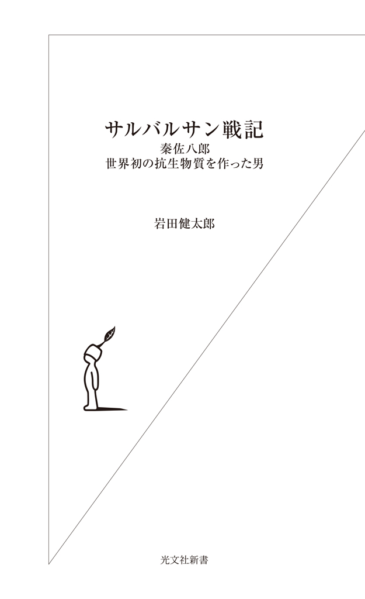
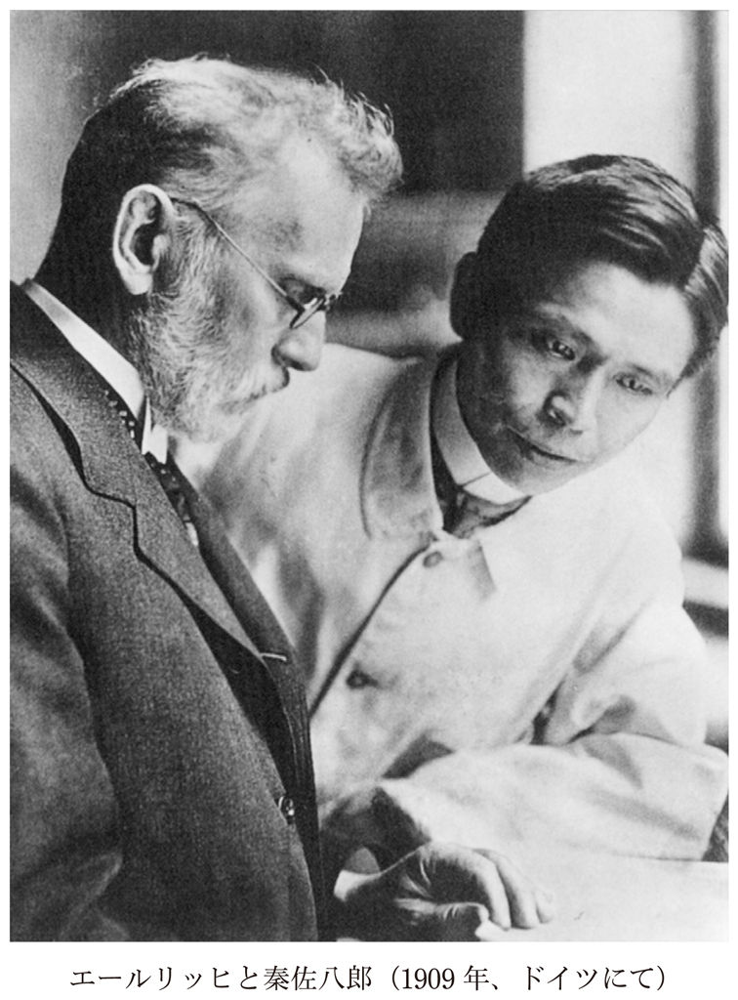

| サルバルサン戦記～秦佐八郎 世界初の抗生物質を作った男～ (光文社新書) | |
| 岩田 健太郎 | |
| (2015) | |

本作は史実をもとに作られた物語であり、実在しない人物、場面、会話が含まれています。
秦佐八郎が十日間の南ドイツ漫遊を終え、フランクフルト・アム・マインに着いたのは、明治四十二年一月のことであった。
佐八郎はドイツではいかにも小柄である。つば広な黒羅紗、釜底型の帽子、やはり黒羅紗のフロックコート、そしてチョッキ。ズボンも同じく黒である。左の手は隠しに差し入れられ、右の手はステッキを握っている。足下には大きめのスーツケースがある。短めの髪はポマードで丁寧に後ろに撫で付けられている。両の瞳も黒真珠のように黒く、ぎょろりとした金壺眼である。黒尽くめの佐八郎は、大男ぞろいのドイツにあっては、小さな甲虫のように見えた。しかし、ひげをたくわえていないその顔は精悍で、落ち着いた力強さをたたえていた。このとき、佐八郎は三十七歳。
やや南方に位置するとはいえ、一月のフランクフルト・アム・マインは寒い。だが、佐八郎は寒さを感じなかった。
元来、苦痛を訴えない男である。明治の男たちは総じて我慢強いが、決して「辛抱強く」はない。ちょっと気に入らないことがあるとすぐにかんしゃくを起こす、刀を抜こうとするさむらい気質を残している。しかし、佐八郎はこの時代の日本人としてはとても我慢強く、そして辛抱強かった。
辛抱強い、というのは少し違うかもしれない。佐八郎にとって、辛抱することは苦ではなかったのだから。彼は辛抱を自然に受け入れることができた。世の中は、そもそも己が思うようにはならないもの、という達観が佐八郎にはあった。我慢も辛抱も苦痛ではなく、苦痛ではないが故に、それは俗世が言うところの我慢、辛抱としては感じない。佐八郎は一月の寒さを、「我慢すべき艱難」ではなく、「一月とは元来、こういうものだ」という諦観で捉えていた。佐八郎は、白い息を吐いた。
スーツケースを駅の荷物係に預け、半券を受け取る。その半券をズボンのポケットに入れる。辻馬車を雇う。インスチチュート・フューア・エクスペリメンテーレ・テラピイ、すなわち実験治療研究所に行くよう、やや、たどたどしいドイツ語で伝える。御者は肩をすくめて首を横に振る。実験治療研究所はフランクフルト市民にも、そして御者にもさほど知られた場所ではない。佐八郎は研究所の住所を記した紙片を御者に渡した。御者は判った、という顔つきで佐八郎に馬車に乗るよう、手招きした。
先生は実験治療研究所と、私設研究所であるゲオルグ・スパイエル・ハウスの二カ所を主宰している。どちらにおいでかは、判らない。スパイエル・ハウスはしかし、実験治療研究所の隣に位置する。あちらがだめなら、こちらを試せばよいだけの話である。
国立実験治療研究所はフランクフルト・アム・マイン郊外のザンドホーフ通りにある。中心街から数キロの距離だ。馬車はマイン河沿いを下っていく。佐八郎は程なく目的地に着いた。
フランクフルト・アム・マインの名が示す通り、この街にはマイン河が流れている。マイン河はライン河の支流である。実験治療研究所はそのマイン河の南に位置している。石造り三階建ての立派な建物である。佐八郎は右手の親指と人差し指で帽子のつばをつまみあげ、その建物を見上げた。
建築されてからまだ十年あまりしか経っておらず、研究所は新しい。ドイツ都市の郊外らしく、空が広い。一月の空気が澄み切ってとても心地よい。歩道沿いには楓の木が並んでおり、かすかな風にそよいでいる。道路は丁寧に舗装されている。そこは静かで、研究活動には最適な場所に思われた。
実験治療研究所の受付には、大柄な老人が座っていた。小柄な佐八郎から見れば、ほとんどのドイツ人男性は大男なのだが、彼はひときわ背が高かった。
佐八郎は帽子を取り、来意を告げた。門番はハタという名を聞いて驚く。
「先生が数日前からお待ちかねです。すぐに取り次ぎますから、お待ちください」
その門番がカーデライトであった。後に佐八郎は知ることになるのだが、カーデライトは研究所には不可欠な重要人物であった。実験治療研究所の門番にして実験助手。試験管など実験器具の洗浄、消毒、滅菌は全てカーデライトの手によるものであった。
突然、階上から大きな、しわがれた声が聞こえてきた。
「カーデライト！ シガーだ！ シ・ガ・ア！ カーデライト！」
「ただいま！ 先生！」
カーデライトも負けずに大声で答える。佐八郎の方を振り返り、お待ちください、と繰り返し、カーデライトはくるりと向きを変えてそそくさと歩いていく。奥にある螺旋階段をとんとんとんと上っていく。背中の曲がった老人にしては、驚くほどの俊敏さだ。佐八郎は帽子を手にしたまま、入り口で待つ。
先生とは、パウル・エールリッヒ先生のことである。
エールリッヒは数ヶ月前に、ノーベル生理・医学賞を受賞したばかりであった。明治三十四年にエールリッヒの盟友、ベーリングが第一回の受賞者になって以来、九人目の受賞者である。佐八郎は、これからこの世界的な巨人に師事し、研究活動を行うためにフランクフルト・アム・マインにやってきたのだ。
カーデライトは佐八郎の来訪が遅れたことを驚いていた。もっと驚いたのは佐八郎だ。
「エールリッヒ先生は、なぜおれの来訪を待っていたのだろう。アポも取らずにいきなりやってきたのに」
考えてみたが、どうにも判らない。なに、先生にお会いしてお尋ねすれば、すぐに判ることだ。佐八郎は判りえないことについては、あれこれ臆測したりしないことにしていた。
門前で待つことしばし。カーデライトがどたどたと戻ってきた。
「エールリッヒ先生がお会いになります。どうぞ、ドクトル・ハタ」
くるりと振り向き、またどたどたと歩いていく。こちらを振り返る気遣いはない。慌てて佐八郎もカーデライトの後を追う。
螺旋階段を上がり、三階に着く。三階の廊下には強い葉巻の臭いが立ちこめていた。
カーデライトが一番奥の部屋に案内する。ノックをし、扉を開けて佐八郎に目で合図した。佐八郎は帽子を胸の前に当てたまま、部屋に入った。
部屋は葉巻の煙でうすぼんやりしている。煙で目が染みる。
エールリッヒがそこにいた。白髪で、かつ豊かな白髭をたくわえている。眼鏡をかけている。背中は僅かに曲がっているが、それを勘定に入れたとしても、さほど背は高くない。巨人は、むしろ小柄であった。
とはいえ、エールリッヒは東洋の佐八郎よりはまだ背が高い。カーデライトがたった今、渡したであろう、火をつけたばかりの長い葉巻を手にしていた。
エールリッヒはつかつかと佐八郎に近づいてきた。葉巻を持っていない右手の方で握手を求めた。佐八郎も右手を差し出した。その手を強く振りながら、佐八郎に顔を近づけてエールリッヒは言った。口からつばが飛び、葉巻の強い臭いがした。
「遅かったじゃないか！ ずっと待っていたというのに！ 何をしていたんだ！」
エールリッヒは怒っているのだか、喜んでいるのだか、判断の難しい口調でまくしたてた。
「いえ......その......エールリッヒ先生、それは失礼いたしました」
佐八郎は、西洋式に握手をしながら東洋式に頭を下げた。自分の来訪を知らないはずのエールリッヒがなぜおれを待ち構えていたのか。おれに何の非があるのか。佐八郎は今もって五里霧中である。
しかし......佐八郎はまず頭を下げて謝った。媚び諂いではない。政治的な打算でもない。どちらの側に非があるのか、という議論そのものが、佐八郎には苦手だったからだ。頭を下げることそのものには、痛痒を感じない。
エールリッヒもまた、「どちらの側に非があるか」的議論が苦手な男だった。彼は常に目的を手段に優先する。すぐに首を振って言った。すでに相好を崩している。
「ええんじゃ、ええんじゃ。無事に着いて何よりだった。さっそく実験に取りかかってもらおう！」
「実験ですか」
「そうじゃ。色素誘導体を、そしてアトキシール誘導体をスピロヘータ感染動物に注射し、その効果を調べるのじゃ！ 化学的療法薬を開発するのじゃ！ 君の研究室も、君を助けてくれる助手ももう用意してある！ 今日から研究に取りかかるのじゃ！」
「判りました」
「アトキシール誘導体こそは、私が探し求めていた魔弾である！ たぶん！ その可能性が一番高いのじゃ！」
エールリッヒは胸をぐっと反らせてそう言った。
「病原体を殺す方法ならいくらだってある。石鹸だって病原体を殺せる。じゃが、石鹸を溶かして人体に注射するわけには行くまい。実験室で菌が死ぬのと、患者の病気が治るのを、同義にしてはいかんのじゃ。つまるところ、化学的療法とは――」
と、エールリッヒは遠い目をした。そのまなざしは青白く輝いていた。
「対象とする病原体だけを狙い撃ちにして、殺す。そこには、確たる理論的な根拠、学理がある。だがな、学理だけではだめだ。人間というものはそんなに賢いものではない。いくら頭の中で考えて、正しいに違いない、と確信したところで、そんなものは、なーんの役にも立たんのじゃ！」
エールリッヒはここで葉巻をさもうまそうに、一口含んだ。次いで、両の鼻から白い煙をふーっと出す。胸をぐっと後ろに反らし、満足そうに葉巻を味わってからエールリッヒは言った。
「すなわち、病原体を人体内で殺すに十分な殺菌可能濃度と、人体に害を及ぼす毒性が生じる濃度に差が生じる必要がある。むろん、人体に害を及ぼす濃度は、殺菌可能な濃度より、ずーっと高い必要がある。当然じゃな」
と、エールリッヒは、判るな、という目で佐八郎を見た。慌てて佐八郎は首肯した。判った、というサインだ。
そのサインに満足して、エールリッヒは続ける。
「そこで、学理は実証されねばならぬ。大胆な仮説をたて、慎重にこれを検証するのだ。君の実験は非常に重要なのだよ、秦君」
ここでエールリッヒは再び佐八郎の方を向いた。佐八郎は慌てて首を縦に振る。これを、演説のキューと見なして、エールリッヒは続ける。側に立っているカーデライトをちらりと横目でうかがうと、カーデライトは何も言わずにしれっと畏まっている。この手の演説は、もう何百回も聞かされているに違いない。
研究への情熱がエールリッヒのまなざしからほとばしっている。そのまなざしの青白い炎が、佐八郎の目に降り注いでいる。佐八郎は黙ったまま、そのまなざしに自らのまなざしを返しつつ、首肯した。突然、エールリッヒの目がくるりと丸くなった。あれ？ という顔つきで、彼はこう言った。
「秦君。君はこんなところで何を突っ立っているのだ？ 君にはすぐに実験に取りかかってもらわねばならないんじゃぞ。君の研究室も、君を助けてくれる助手ももう用意してある！ 今日から研究に取りかかるのだ！」
「秦先生、研究室にご案内しましょう。どうぞ」
絶妙なタイミングで、カーデライトが早口で言葉を挟んだ。このタイミングを逃すと、また同じ演説が続くと心得ている。カーデライトはそそくさと部屋を出る。佐八郎があとに続く。
「秦先生、ひょっとして先生はエールリッヒ先生のお手紙を受け取らなかったのですか。こちらに至急おいでになるよう、要請する手紙だったのですが」
「エールリッヒ先生のお手紙ですって。いえいえ、私は受け取っていません」
佐八郎は歩きながらカーデライトに説明する。それにしても足の速いじいさんだ。足には自信のある佐八郎もついていくのがやっとである。
「かねてから私はエールリッヒ先生のもとで研究活動をしたいと希望していました。しかし、先生の方でポストと金がないから待て、とおっしゃる。私の方では、なんとしてでもエールリッヒ先生のもとで研究がしたい。矢も楯もたまらず、まずは先生を訪問してしまえ、と乱暴に考えたのです」
もっとも、直接ベルリンから来ずに、南ドイツのあちこちの研究所や病院を訪問したり、ビールやワインを楽しんだりしながら、十日間もぶらぶらしていたのだが、と佐八郎は自分につぶやいた。
「さようでしたか。それで合点が行きました」
と、納得したようにカーデライトは頷いた。
「先生の手紙と行き違いになったのでしょう。エールリッヒ先生はいたく秦先生のことがお気に召したそうで、なんとしてでも自分の研究室に招聘したいとおっしゃっていました。そこで、スパイエル夫人に無心したと、こういうわけなのです」
フランチェスカ・スパイエル夫人はエールリッヒのパトロンであった。彼女は裕福な銀行家、ゲオルグ・スパイエルの未亡人であった。明治三十九年、スパイエル夫人はエールリッヒの研究と人柄に感銘を受け、巨額の財産を彼に提供した。それが、ゲオルグ・スパイエル・ハウス、実験治療研究所に隣接する私設の研究所として結実したのだ。
そして今、スパイエル夫人は秦佐八郎のポジションをも確保してくれたのである。佐八郎の給料はスパイエル夫人が支払い、彼の所属はスパイエル・ハウスの研究員ということになる。上司はもちろん、館長のエールリッヒだ。
カーデライトは、そのスパイエル・ハウスの一研究室に佐八郎を案内する。三十畳はあろうかという、広い研究室だ。ここが佐八郎だけのために提供されたのだ。助手も一人、控えている。
こんな広い部屋で研究するのは初めてである。助手が付くのも、初めてだ。佐八郎は、大きく一息ついた。ここには、あの強い葉巻の臭いはない。煙草の臭いが苦手な佐八郎は、少しほっとした。
いや、するではないか？ 葉巻の臭いが。
エールリッヒがそこにいた。佐八郎を追いかけてきたのだ。やや息を切らして、エールリッヒは傍らに控えていた助手に命じ、二匹の二十日鼠を取り出させた。言い忘れていたことを思い出したらしい。
「これは、一昨日ハンブルクから送られてきた回帰熱の種じゃ。回帰熱スピロヘータが感染している。すぐに種継をせねばならない。わしも君くらいの若い頃には目が良かったからな。細かい仕事は上手にやったものだ。もっとも、今は......これじゃよ」
と、エールリッヒは腰をぐっと曲げ、葉巻を持つ左手で杖をつく真似をし、眼鏡を鼻のところまで下げてよぼよぼと歩いてみせた。場の笑いを一通り取った後で、エールリッヒは再び、しゃきりと立ち姿勢をとった。
「秦君。回帰熱は実験室での感染も多いから気をつけたまえ。八年間もペストの仕事をしたという君なら大丈夫じゃ。がんばるんじゃぞ」
エールリッヒは右手で佐八郎の肩をぽんぽんと叩いた。佐八郎は再び頷いた。エールリッヒも満足そうに頷き、部屋を後にした。カーデライトも彼に続いた。葉巻の臭いだけが、そこに残った。
佐八郎は上着を脱ぎ、白衣に着替えた。助手に向かって頷いた。実験に取りかかるのだ。
世は二十世紀になったばかりであった。ルネサンス、宗教改革、大航海時代、フランス革命、産業革命。歴史は大きく動いていた。科学技術も飛躍的に進歩し、医学・生物学もその例外ではなかった。
当時、医学上最大の問題は伝染病・感染症であった。微生物学は医学上もっとも重要な学問領域であった。ペスト、コレラ、結核、そして梅毒。多くの感染症が人類にとって脅威であり、そうした感染症には効果的な治療薬が存在しなかった。その多くが「死に至る病い」であった。二十一世紀の人類が容易に利用できる抗生物質治療......当時はこれを抗菌化学的療法と呼んだ......はまだ存在しない。そんなものが実現可能だという見通しすら、まだ立っていない。
感染症の原因微生物を殺すことは可能である。石鹸、水銀、石炭酸。しかしながら、そうした物質を飲ませたり、注射したりするのは人体にとって危険である。微生物が死んでも、患者も死んでしまっては意味がない。
感染微生物を殺しつつ、感染した人間を攻撃しない化学的療法薬。未だ人類が一度も手に入れたことのない、微生物だけを狙い撃ちにする魔法の弾丸。この日からエールリッヒと佐八郎の静かなる戦いが始まるのだ。死に至る病いに魔弾を撃ち込むのだ。
本書は、その戦いの記録である。我々はこれを、「サルバルサン戦記」と呼ぶ。
佐八郎はその夜、エールリッヒとカーデライト、そして十名あまりのスタッフたちに招待され、エールリッヒ行きつけのビアホールにいた。フランクフルト・アム・マインの旧市街、マイン河の対岸に位置する小さなビアホールである。石造りの古いビアホールは、まるで穴蔵のようであった。
実験治療研究所、およびスパイエル・ハウスの主だったスタッフが集まっていた。病理学のアポランド、原生動物学のプロワッセーク、化学のエムデン、ベヒホルド、細菌学のナイセルにマルクス、獣医学のスチックルとシューベルト。そうそうたるメンバーであった。エールリッヒのお世話をするカーデライト翁と、秘書のマルクワルト女史もいた。小使頭のゲオルドネルもいた。彼らはここで、しばしばビールを飲みながらエールリッヒの話を聞いた。今夜は、そのエールリッヒがどうしても欲しがった日本人研究者、秦佐八郎の歓迎会である。皆が、佐八郎をひと目見たい、どんな男か知りたいと思っていた。
彼らは、志賀潔のことを覚えていた。数年前にやはり日本からやってきた研究者は、もの静かではあるが実に優秀かつ勤勉だった。志賀はエールリッヒと数々の実験をこなし、あのトリパンロートを完成させたのだった。そのドクトル・シガと同じく、日本からやってきたドクトル・ハタ。いったい、どんな人物であろう。
佐八郎は、気持ちのよい疲労感の中にあった。
その日は、二十日鼠に回帰熱スピロヘータを注射し、実験動物を作る予備実験を繰り返した。やはり実験はいい。佐八郎は久しぶりに手を動かした喜びを感じていた。脳内には、研ぎすまされた思考を繰り返した、その回転の余韻が残っていた。実験は、単なる手作業ではない。だから、頭をひどく疲れさせるのだ。その張りつめた神経を慰撫するように酒を飲むのが、佐八郎にとってなにより気分のよいことだった。佐八郎はゆっくりとジョッキを口にし、ビールをのどに流し込んだ。
「いやいや、よく来てくれたよ」
エールリッヒは上機嫌であった。左手から葉巻を離すことなく、右手で美味そうにビールを飲んだ。エールリッヒはぐいっと髭についた泡をぬぐった。
エールリッヒの席は、彼だけのためにしつらえられた予約席だ。ドイツではこれをスタムティッシュという。エールリッヒは盛んに葉巻をふかし、ビールを飲み、好物のソーセージをかじった。エールリッヒ愛用の葉巻は、ハバナ産の高級品で、マリア・マンチーニといった。一本五十ペニヒもした。エールリッヒはこれを日に二十本も吸っていた。日に十マルクも葉巻に費やし、ビールやワインといった酒を愛し、ソーセージも高級肉の上物と決めていた。エールリッヒはそういうところでは贅沢な男だった。
「不味い、くず肉の寄せ集めなんぞ食うくらいなら、何も食べぬ方がましじゃ」
スパイエル夫人のようなパトロンがいても、研究所はいつも火の車であった。エールリッヒ自身、飲食以外には頓着しない男であった。生活全体はとても質素で、いつも貧乏していた。
佐八郎もまた、エールリッヒ同様ビールを楽しんでいた。
ドイツのビールは美味い。秘密は、その注ぎ方にある。日本のように、こぼさぬことに腐心するような、しみったれた注ぎ方をしない。
ビア・サーバーのレバーを傾け、勢いよくビールを注ぐ。泡がたくさん溢れることなど意に介さない。溢れ出た泡は、バーキーパーが特殊な棒でじょきり、と贅沢にしごいてしまう。ジョッキに残るのは芳醇なビールと、程よい量の泡である。佐八郎は、このじょきり、という音が大好きだった。彼の疲れた脳細胞は、少しずつビールの芳醇な味覚とアルコールで慰撫されていった。
佐八郎は、相手の流儀に合わせることを苦にしない。苦手な葉巻も一本だけ、エールリッヒ先生から頂戴した。おれは、辺境の地からやってきた、辺境人だ。佐八郎は考えた。辺境人は、流儀に固執したりはしない。その場にもっともふさわしい振る舞いを、無理なく、自然に行うことができるのが辺境人の強みである。差し出された葉巻はありがたくいただく、それが今一番ふさわしい態度である。エールリッヒ先生はおれを歓迎してくれている。とっておきの高価な葉巻をおれに振る舞ってくれている。煙を口に含み、吸い込んだりしなければ、さほど大過は起きるまい。
佐八郎は葉巻を口にし、ビールを楽しんだ。エールリッヒの演説に聞き入っていた。ドイツ語の聞き取りはまだ不十分であったが、躍動感にあふれた彼の演説は十分に楽しめたし、大意は理解できた。
「化学的療法は、だね。君たち」
エールリッヒは平素から饒舌な男であった。酒が入ると、さらに饒舌になった。
しかし、たとえ酒が入っていても、演説は常に爽やかで舌がもつれることもなかった。絡みもせず、陽気な、良い酒であった。エールリッヒは主張し、演説する。しかし、相手を罵倒したり、攻撃することは決してない。もっとも、当人のいないところでは、いたずらっ子のように目配せし、愉快に皮肉るのであるが。
彼はただ、気分よく過ごすのが好きなのだ。酒場でも、研究室でも。こんな陽気な初老の男が、ビールと、お気に入りのマリア・マンチーニと、ソーセージを行き来しつつ、楽しそうにしゃべり続ける白髪白髭の小男が、科学史に永遠に残るノーベル賞をほんの数ヶ月前に受賞したとは、誰にも信じられない。
「エールリッヒ先生、ノーベル賞記念のメダルを、部屋の隅にある木箱に放りっぱなしにしてたんだぜ」
研究員の一人がこれまた愉快そうに佐八郎に言う。エールリッヒ先生、メダルの所在を尋ねられても、思い出せないだろうよ。なにしろ、むちゃくちゃに忘れっぽい人だからな。
「ビールをもう一杯いかが」
気がつくと、佐八郎の隣に女給がいた。
両手にビールを満たしたジョッキを六つも持っている。細い腕、細い腰つきだが、存外、力強い。白い頭巾を被り、同じ色のエプロンをしていた。髪は金色で、左右に三つ編みをしていた。肌は陶器のように白かった。そのくせ頬は輝かんばかりに桃色だった。小さな顔に似合わぬ、大きな、こぼれるような、二重の瞳がこちらを見ていた。
「メヒテン・ジー・ノッホ・アイン・ビアー・ハーベン？」
娘は同じ質問を繰り返した。まだこちらを見ている。
「ヤー、ビッテ」
しばし沈黙した後、ようやく佐八郎は答えた。彼は新しいジョッキを受け取った。中のビールをごくりごくりと一息で飲み干した。顔がほてるのが感じられた。
佐八郎は演説に集中すべく、エールリッヒの方に向きなおった。その演説は絶え間なく続いていた。
「我々には、魔弾が必要なのじゃ。病原菌を射貫く、魔弾が、じゃ」
エールリッヒは演説を続けた。ビールをごくりと飲み、髭の泡をぬぐった。
「コルポラーラ・ノン・アグント・ニシ・フィクサータ！」
エールリッヒはラテン語でこう叫んで、どしん、とジョッキをテーブルに置いた。
「『結合なくして、作用なし』。魔弾は、病原体に結合せねばならんのだ！ それは人体には干渉しない。魔弾が故に、狙った獲物だけを、ピンポイントで叩くのだ。コルポラーラ・ノン・アグント・ニシ・フィクサータ！」
ラテン語の決め台詞の後で、エールリッヒはまたビールを飲み、葉巻の煙を口に含んだ。
「結合とは、男と女の相性のようなものだ。相性が良い男と、女が結合する。その結合部位が、側鎖だ。免疫機能は要するに、レツェプトールと対象との、結合である」
これが有名な側鎖説か、と佐八郎は考えた。エールリッヒの著した論文は、当然全て読み込んでいた。
免疫作用には、（他のどの物質でもなく）免疫物質がその免疫の対象に結合しなければならない。その免疫物質の量は計量できねばならない。言われてみれば、当たり前の話である。しかし、これを当たり前と認識できるのは、後学の徒の後知恵である。エールリッヒ以前の科学者はだれもそんな構想を持っていなかったのだから。エールリッヒはこの免疫学研究の功績で、ノーベル生理・医学賞を受賞したのであった。
「抗菌化学的療法も、原則的には免疫機能と同じである。敵対する原因病原体の特定の部位に、狙った化合物が結合する。狙った病原体だけをやっつける魔弾、というわけだ。わしと志賀潔君は、こいつを探し求めたんだ」
エールリッヒは、佐八郎の日本における同僚の名を口にした。
「わしはまず、トリパノゾーマに目を付けた。トリパノゾーマは原虫だ。原虫は動物性の微生物だ。植物性の微生物、すなわち細菌よりも研究しやすい。なにしろ、動物性の微生物は構造が複雑だ。構造が複雑ってことはだね、その分、魔弾を当てる標的がたっくさん！」
と、エールリッヒは片目をつむり、両手で銃をどんどんと撃つ真似をした。
「あるというわけさ。実験の標的が多ければ多いほど、成功の可能性は高まる。これは単なる算数じゃ」
エールリッヒは一人頷いた。皆もまた、黙ったまま頷く。
「無論、実験の正否は、偶然次第じゃ。やってみんと、こればかりは誰にも判らん。失敗を繰り返しながらの、泥臭い作業じゃよ」
がくっと肩を落とす、エールリッヒ。しかし、ぐっと顔を上げ、胸を反らし、葉巻をふうっと吸って気を取り直す。
「しかし、実験への理路は、成功をたぐりよせるべく、学理を尽くしておる！ そこには成功への必然が、工夫が込められている！」
エールリッヒが「動物性」と称した原虫感染症。マラリア、赤痢アメーバ、そしてトリパノゾーマなどが有名なものである。どれもが当時、多くの人命を奪っていた。
マラリア原虫が発見されたのが明治十三年。フランス人のシャルル・ルイ・アルフォンス・ラヴランが発見した。彼はこの功績によって、ノーベル生理・医学賞を受賞した。エールリッヒが受賞した一年前、明治四十年のことだ。そのマラリアが、蚊（ハマダラカ）が媒介する感染症であることを看破したのが、英国人のロナルド・ロス。彼も明治三十五年にノーベル賞を受賞した。
トリパノゾーマも、マラリアに劣らず恐ろしい感染症である。アフリカ大陸における「眠り病」の原因であり、たくさんの動物や人を死に至らしめていた。
マラリアが蚊によって媒介される感染症なのに対して、アフリカのトリパノゾーマはツェツェバエと呼ばれるハエが媒介する。ツェツェバエは体長一センチメートルほどもある大きなハエである。このハエは、ただ見た目に鬱陶しいだけではなく、媒介されたトリパノゾーマが起こす「眠り病」の原因になる。アフリカの旅行者たちを大いに苦しめた。作家のアーネスト・ヘミングウェイが昭和八年にアフリカにハンティングに赴いたときも、このハエに悩まされる。
「マラリアに対する治療薬としては、すでにキニーネが知られている。これはキナの皮から抽出された成分だが、古くからペルーの土人たちの間で民間治療薬として用いられてきた」
エールリッヒは葉巻をふかす。
「しかし、わしが目指す化学的療法薬は、そのような経験的な効果から帰納するものではない！ 生化学の知見を応用し、学理を以て、狙いを定めて、微生物を攻撃するような、演繹法の果てにある治療薬なのである。シンキング・フォワードってやつじゃ。だからこそ、魔弾なのだよ。結合なくして、作用なし！」
エールリッヒは再びビールを飲み、葉巻を口にし、胸をぐいっと反らせた。
「ドクトル・キタザトは！」
と、突然、エールリッヒは佐八郎の日本における師の名をあげた。北里柴三郎のことである。
「北里君は、破傷風菌の作る毒素に対抗する抗毒素を作ることに成功し、これを治療に応用した。ベーリングは同様に、ジフテリア菌の作る毒素に対して、抗毒素を作りあげた。ま、ベーリングについてはわしもだいぶ手伝ったんじゃがな。両者は毒素を作るような伝染病には非常に効果的だったのじゃ。すなわち破傷風、すなわちジフテリアじゃ」
ここで、ふっとエールリッヒは沈黙し、ビールを飲んだ。口をぬぐい、悲しそうに首を傾げた。
「それにしても、北里君は気の毒だった。やってることは全くベーリングと同じなんだよな。ていうか、彼の方が先に抗毒素作ってるし。なんでベーリングだけがノーベル賞を受賞して、北里は蚊帳の外なんじゃ。ひどいじゃないか」
ひどいじゃないか、というまなざしで、エールリッヒは、佐八郎を見た。佐八郎は慌ててうんうんと頷いた。周りのスタッフたちも同じく頷いた。エールリッヒは再び、悲しそうに首を振った。
「だいたい、ノーベル賞って変だよね。パスツールもノーベル賞受賞してないし。もらってるわしが言うのもなんじゃけど、なんとなくすっきりこないよなあ」
「パスツール先生は、ノーベル賞ができる前にお亡くなりになりましたから」
と、研究員の一人がエールリッヒに言う。
「あれ？ そうだったっけ。近頃、忘れっぽいからなあ。確かに、あれって生きてる人にしかもらえないんだったよね。秦君、だから君も長生きしなさいよ」
「はあ、そうですね」
と佐八郎はまたも頷く。ノーベル賞などおれには縁のない話だと思っていたから、そのために長生きしようなどという考えも起こしたことがない。エールリッヒが北里の例でほのめかしたように、ノーベル賞はヨーロッパ人のみに与えられる賞で、辺境の東洋人には無縁な世界だと佐八郎は考えていた。
ふと気づくと、佐八郎の脳神経はぼんやりしている。
おかしい......。
佐八郎は酒豪である。かつて、盟友の野口英世と飲み比べをし、二人でウイスキーの瓶を四本も空けたことがある。数杯のビールくらいで酔っぱらうことはありえない。
しかし、エールリッヒの葉巻がいけなかった。佐八郎の頭は、葉巻に慣れていなかった。葉巻の紫煙が佐八郎の頭をぼんやりさせた。エールリッヒの声が遠くなった。
そこへ、またあの娘がビールを持ってきた。佐八郎はその小さな顔と大きな瞳を眺めた。ビールのお代わりを頼んだ。ゆっくりと大きな声で発音しなければ、舌がもつれそうだった。娘は微笑んでいたが、その意味するところは計りかねた。エールリッヒの演説は続く。
「わしはな、秦君がたくさんのペスト患者を診ていたのに、一度もペスト菌にやられなかったことに感動したの。わしは昔、結核の研究してて結核になっちゃったからね。あれは痛かった」
エールリッヒは本当に痛そうな表情をした。
「結核の治療には時間がかかる。結核はコンサンプション、消耗病という異名を持つくらいでね、ほんっと疲れるんじゃ。体力、気力共に衰えてしまう。一年間も静養を強いられたよ」
エールリッヒは、さも残念そうにうなだれた。しかし、むくりと顔を上げ、ビールを飲み、葉巻を口にした。その目の青白き炎がめらめらと光っている。
「いや、静養で済んだだけなんだから、佳しとせねばならん。微生物学者はな、研究対象で命を落とすこともあるんだよ。ところがね、多くの微生物学者はそれでいいって思っちゃうんだよね。研究に没頭し、研究に倒れるなんてかっこいいじゃないか、と思っちゃうわけ。とんでもない話だよ。そういう安っぽい騎士道精神、軽薄なロマン主義ってわしは大嫌いなわけ！」
エールリッヒはいかにも大嫌い、というしかめ面をしたが、ふと満面に笑みを取り戻して、言った。
「ところが、だ。ここにいる秦君をごらんよ。彼なんか、ちょっと違うんだよ。あれは、どこだったっけね。君に最初に会ったときだよ。えーっと」
「ベルリンでした」
慌てて佐八郎は言葉を継いだ。懸命に両瞼を引き離そうとする。
「おれが万国衛生および民勢学会に参加したとき、先生に初めてお目にかかったのです」
あの会には参ったな、と佐八郎は当時を思い出しぼんやりした頭を振って苦笑した。
あれは二年ほど前のこと、明治四十年であった。
佐八郎は師である北里柴三郎の許可を得て、ドイツ留学に旅立った。その際、ベルリンで開催された第十四回万国衛生および民勢学会で学術発表をする機会を得た。
といっても、発表内容は北里の研究をまとめたものであり、あくまで代読である。しかも、佐八郎はドイツ語が苦手と来ている。観衆を前にしての演説など、できるはずもない。
そこで演説の方は、ドイツ語に堪能な照内豊が行うことになった。演題は「日本におけるペストの流行と予防」であった。内容は北里が準備し、佐八郎がこれを手伝った。佐八郎はその後の質疑応答のパートを担当したのだ。
ところが、慣れぬドイツ語のやり取りに四苦八苦する。
こんなことなら、照内に頼んで、演説のパートをやればよかった。演説なら、用意した原稿を朗読するだけだからな。質疑応答の方が、ずっと高度な語学力を要するじゃないか。こいつはしくじったぞ。佐八郎は後悔した。
日本においては、学術集会は雄弁な演説が主であり、質疑応答は従である。
演説には十分な準備を行い、原稿を用意し、多くの学者はそれを朗読する。下を向いたままで、観衆の顔すら見ることなく、観衆無視で演説は続けられる。
演説後も大した質問をされることはない。多くは、質問の名を借りたレトリックであり、要は自説をひけらかす手段としての、質問でしかない。「貴重なお話、ありがとうございました。ところで、後学のためにご教授願いたいのですが、私の考えるところ......」というわけである。そこには、本当に真実に迫りたいという思いはなく、質疑応答の後で得られる新たな知見もないに等しかった。
このような質問には、まっとうに答えようがない。全肯定するか、全否定するしかない。佐八郎は無益な議論を好まない。一礼して、「貴重なご質問ありがとうございました。参考にさせていただきます」と応じるだけであった。
ドイツでも、せいぜい、このような形式的な質疑応答に終始すると佐八郎は考えていたのである。要するに、佐八郎は質疑応答をなめてかかっていた。
ところが、ドイツにおける質疑応答は、演説そのもの以上に重要なものであった。質疑応答の場こそ、真に科学的な営為の場だったのである。
佐八郎の知る「科学」は実験であり、論文執筆であったのだが、ドイツ人にとっては議論こそが「科学」だったのだ。
相手の言葉を聞き、これを受け止める。理解し、そして反芻する。噛み締めた内容と自説をつき合わせ、さらに新しい概念が生じる。それが言葉になって、相手に返される。返された言葉は新たな刺激となって、そこに新しい議論の萌芽が生じる。議論に勝つことが目的ではない。議論の後で、自分がどれだけ成長し、変われるかが大切なのである。
日本の場合、議論は形式であって、議論の後で自説が変じることはない。新興国のアメリカなどでは、議論はディベートと呼ぶらしい。その目的は相手を打ち負かすことであり、やはり自分は変わることはない。
そうではない議論、手段ではなく、目的としての議論のあり方が、ドイツ人の考え方に根付いている。それが習慣化している。
これが弁証法というものか。葉巻の煙でぼんやりとした頭で、佐八郎は考え続ける。
弁証法は、後の「マルクス主義者」と呼ばれる者たちのために、頑迷で固定的な思考というイメージを抱かせてしまうところがある。しかし、本来はもっと柔軟なものが、弁証法であるはずだ。
弁証法、すなわちディアレクティークは、もともと、「対話」という意味でしかない。要するに、コミュニケーションだ。
コミュニケーションとは、相手を打ち負かすのが目的のディベートとは異なる。それは、相手の言葉を受けて自分が変わる覚悟ができているような、コミュニケーションである。自分が変わる覚悟ができていることこそが、学問なのであった。
学問とは、要するに対話なのだ。他者との、そして自分との。そのツールである言葉に不自由している佐八郎に、ドイツにおけるディアレクティーク、質疑応答がまっとうにできようはずがなかったのである。
いや、語学力だけの問題ではない。そもそもおれは、対話の後で自説をあっさり変えるような勇気を、覚悟を欠いていたのだ。学問という、真実を探求する営為に対して、真剣に向き合っていなかったのだ。佐八郎は自らの不明を大いに恥じた。しかし後悔すれど、時すでに遅し、である。
たどたどしい質疑応答に四苦八苦する佐八郎。聴衆たちも、この東洋の小男は十分なディアレクティークの能力を欠いていることをすぐさま察知した。聴衆は、佐八郎の一言一言に、むやみと拍手をした。賛意を表するためではない。「早く止めろ」のサインであった。こうなると、ドイツ人の態度は徹底的に冷たかった。
ぱらぱらと佐八郎の周りから人が去っていく。佐八郎は穴があったら入りたい思いで下を向いている。佐八郎は悪い意味での高慢さを持たない男であるが、このときばかりは恥を感じた。自分のふがいなさに対して恥じていた。佐八郎はベルリンで、本当の「恥」を知ったのである。
そこへ、白髪白髭の男性が歩み寄り、声をかけてきた。
しっかと佐八郎の目を見つめていた。その眼光は鋭く、青白い炎が出ているようだった。彼の衣服からは強い葉巻の臭いがした。男は、佐八郎のドイツ語力に配慮したのか、ゆっくりと、そして大きな声でこう尋ねた。
「君は何年、ペストを研究したのかね」
「八年ほどです」
「そうか、そんなに長くペストを研究しても、自分が感染することはなかったんだね」
「大丈夫でした。流行地に行くときは多少の危険を伴います。しかし、研究室での仕事は危険ではありません。捕まえて牢屋に入れてある罪人にやられるようでは、監守は務まりません」
「ふむ」
老人は、感心したように頷いた。
「そりゃ、そうだけどね」
それだけ言って、初老の男はそそくさと去っていった。別のドイツ人が慌てて佐八郎に尋ねた。
「あなた、エールリッヒ先生とお知り合いだったんですか」
佐八郎はそのとき初めて気がついた。あれがかの高名なパウル・エールリッヒ先生か。
まさか、そのエールリッヒ先生のもとでこうやって研究できる日がやってくるとはな。佐八郎は苦いエピソードを思い出しながら、また頭を振った。どうもいかん。ぼんやりしてきた。それに、葉巻とビールのカクテルのせいで、妙に感傷的になっている。エールリッヒの演説は止まらない。
「『捕まえて牢屋に入れてある罪人にやられるようでは、監守は務まりません』。秦君はそう言ったんだよ。あれには参ったね」
エールリッヒは大げさに、いかにも愉快そうに肩をすくめた。
「わしはね、日本人というのは自らの命を大切にせず、すぐに腹を切るような民族だと勘違いしていた。いわば抜き身の刀で勝負してくるような民族だと思っていたんじゃ。ところが、秦君の目にはそういう狂信的なところが少しもない。かといって、自分は感染なんぞしない、みたいな根拠薄弱な傲岸さもない。そこには、なんと言うのかな、ある種の透明感のある、強い意志を感じたんだよ」
皆があらためて、佐八郎の方を向く。佐八郎の顔が再び赤らむ。
「多くの人は、強い意志とは、逆境に耐え、歯を食いしばって奮闘することだと勘違いしている。秦君はそうではなかった。秦君は、淡々と辛抱できる強い意志を持っている。その辛抱を辛抱と感じないような、本当の勇者だ」
エールリッヒは我が事のように誇らしげに言う。
「秦君は、目的のために生きる男ではない。生きることそのものを目的とするような男だ。そう感じたから、わしは秦君をここに招いたんじゃ」
「ずいぶん、褒められまくっているのね」
気がつくと、あの娘が隣に立っていた。笑顔でビールを両手に持っている。
「エールリッヒ先生はね、惚れ込むと、とことん惚れちゃう人なのよ。あなたも、とても気に入られたんだわ」
「いや、おれはそこまで大した人物じゃあないよ」
「あら、ご謙遜ね。お医者様で、エールリッヒ先生のところでご研究なさってるなんて、素晴らしいわ」
「いや、毎日黴菌と取っ組み合ってるだけだ。そんなに格好の良いものじゃないよ」
と、佐八郎は微笑んだ。
「へえ、東洋の方も笑顔を見せるのね。志賀先生なんて、ずっと生真面目で無口だったから、東洋の男性は笑顔を見せてはいけないのだと思いこんでいたわ」
「志賀さんも、ここに？」
「そうよ。ここはエールリッヒ一味の溜まり場ですもの。ここで学問のお話をするの。聞いていて、楽しいわ」
「楽しい？ 議論の中身が判るのかい。えっと......」
「エリナよ。エリナって呼んでちょうだい、ドクトル......」
「おれは秦佐八郎という。サハチロウでいいよ」
「では、サハチロウ。はじめまして」
半ば冗談で言ったのに、本当にエリナは佐八郎を呼び捨てにした。ドイツの女性は慎ましやかで礼儀正しいと思っていたから、佐八郎はいささか驚いた。
「こりゃ、秦君。女の子口説いとらんで、わしの話を聞かんか」
「はっ。いや、すみません」
「ははは。若者はよいな。エリナはべっぴんだしな。ま、わしのかみさんほどじゃ、ないが」
とエールリッヒはのろけて見せる。皆が笑い声をあげる。エールリッヒが愛妻家で、かつ二人の娘を溺愛していることは、誰もが知っている。エールリッヒはまた、我に返った。
「あれ？ わし、何の話をしてたっけ」
「先生、トリパノゾーマですよ。トリパノゾーマ」
「あ、そうだった。すっかり忘れていた」
エールリッヒは葉巻の煙を吸い込んだ。
「わしらはな、わしと志賀君のことだが、奮闘して、トリパンロートを開発したんだよ。そうそう、志賀君も秦君とはタイプがちょっと違うが、静かにこつこつ研究できるタイプだったな」
明治三十五年、エールリッヒはトリパノゾーマに対する色素の研究をしていた。もともと、エールリッヒは色素の専門家であり、生化学に通じていた。その色素を使えば、原虫が死ぬのではないかとエールリッヒは期待していたのである。
親友の化学者、アーサー・フォン・ワインベルグに新しいアニリン系色素誘導体をどんどん送ってくるよう、エールリッヒは依頼していた。ワインベルグはヘキスト社にいた。フランクフルト・アム・マインに近いバーゼルは、ヘキストやバイエル社といった染料会社がたくさんある、化学工業の中心地であったのだ。エールリッヒがベルリンからフランクフルトに研究の地を移したのも、決して偶然ではなかった。
彼とともに研究していたのは、佐八郎に先んじてドイツに留学していた志賀潔である。佐八郎同様、勤勉で物静かな志賀は、トリパノゾーマを二十日鼠に感染させ、まず動物に病気を起こさせた。次に、次々届く色素誘導体を二十日鼠に注射する。まずは、二十日鼠が死に至るような致死投与量を設定し、それより少ない量の注射で、病気がどうなるかを確認していくのだ。ある色素は、トリパノゾーマを殺す能力が高いが、二十日鼠も殺してしまう。また、別の色素は二十日鼠は殺さないが、トリパノゾーマも殺さない。二十日鼠を殺さず、トリパノゾーマだけが死に至る「魔弾」。それこそが、エールリッヒと志賀が探し求めた色素誘導体であった。
エールリッヒの非凡なところは、色素誘導体の動物実験だけで満足せず、試験管内でのトリパノゾーマと色素の反応についても研究したことである。生物を扱わない実験だ。このような実験は、エールリッヒが生化学に通じ、色素研究のエキスパートだったことが大きい。普通の微生物学者は、このような基礎実験には無知だし、無関心なのだ。
エールリッヒは一見おおざっぱそうに見える男だが、その実、とても慎重で徹底的であった。大胆なる仮説生成と、恐ろしく慎重な実験による検証。薬剤の構造式決定や、薬理作用、そして構造式のどの部分に原虫に結合する作用があるのかを思索を重ね、検証を重ねた。「結合なくして、作用なし」のスローガンのもと、「なぜ」「どのようにして」薬剤がトリパノゾーマに作用するかを研究した。動物実験による実利と、基礎実験による学理。ちょうどピアノの練習に使うメトロノームのように、帰納法と演繹法を行ったり来たりしながら、だんだんと中心となる真実にアプローチしていくのだ。
それは、まるでドイツにおける対話、弁証法のようなものであった。揺れ動きながら、中心点たる真理に、「魔弾」にアプローチしていく。エールリッヒはこのように、総合的、重層的な実験を重ねていったのである。
実験は二十ヶ月にも及んだ。ついにエールリッヒと志賀は探し求めていた「魔弾」を見つけ出した。明治三十七年のことであった。
それは複雑な構造を持つベンチジン誘導体であり、トリパノゾーマに作用のある赤い色素誘導体であったために、ドイツ語の赤、「ロート」を付けて「トリパンロート」と名付けられた。二十日鼠のトリパノゾーマは、トリパンロートの注射により、たちまち死に至り、二十日鼠は快癒した。これぞ、魔弾。これぞ、エールリッヒが探し求めた化学的療法剤であった。
「いやあ、あれはよかった。素晴らしい成果だった。動物実験による帰納と、基礎実験による演繹が見事に融合したのだよ。実践と理論、実利と学理、帰納と演繹は行ったり来たりしながら、ちょうどいい塩梅に融合した。その瞬間は、実に気持ちがよい」
なるほど、科学は実に、行きつ戻りつの対話、弁証法そのものだな。エールリッヒの演説を聞きながら、佐八郎はそう考えた。科学は他者との、そして自分との対話である。学理から積み上げていく演繹法と、世界を観察する、事例から戻ってくる帰納法の対話でもある。ドイツというと、カントからヘーゲルに至る観念論が有名だが、ドイツにだってプラグマティズム、実利という面もあるのだ。というか、プラグマティズムはもともとドイツ語由来だしな。
「ビールをもう一杯、いかが？」
側にまた、エリナが立っている。佐八郎は目で頷く。エールリッヒの演説と科学の対話を楽しみ、ビールの味を楽しみながら、佐八郎の目は娘の容姿に注がれる。
エールリッヒがそれを見て陽気に言う。
「秦君、外国語を手っ取り早く習得する方法はな。女を口説くことじゃ。確実に外国語を上達せしめる。結合なくしては、作用なし！ 青年、健闘を祈る！」
エールリッヒは乾杯の音頭をとる。
佐八郎は、エールリッヒのドイツ語を完全には理解できない。が、周囲の卑猥な笑いでそれなりに察することができた。佐八郎は小さく微笑し、手を左右に振って「それはない」というポーズをとった。まさか、森林太郎じゃあ、あるまいし。
葉巻の煙が頭を回転し続ける。ビールののどごしが心地よい。おれは良いところに来た。佐八郎は上機嫌だった。
フランクフルト・アム・マインの夜は更けていく。
秦佐八郎が生まれたのは、明治六年のことである。
生まれは浜田県、かつての石見国は都茂村で、海山の自然に恵まれていた。父は山根道恭といい、酒造りをする豪農である。母親の名はひでといい、父母の仲はむつまじかった。十四人もの子宝に恵まれ、佐八郎はその八番目。この地域は水と米が良質で、道恭の酒はよく売れた。
幼少時より佐八郎は腕白であった。一つ上の兄、藤七と仲が良かった。二人で近所の子供たちにいたずらし、けんかをふっかけた。その度に藤七と佐八郎は道恭に絞られた。飯を抜かれ、倉に閉じ込められた。それでも二人はへこむことなく、石見の豊かな環境のなか、すくすくと育っていく。昼は力いっぱい遊び回り、腹一杯になるまで飯を食い、そしてぐうぐうとよく寝た。
好奇心の強い佐八郎は学校の勉強も好きだった。砂丘が水を吸い込むように、佐八郎は勉学を楽しんだ。そのため、学校の成績は常によかったが、真っ黒に日焼けした佐八郎は青白き学究の徒という印象を与えなかった。
明治二十年。佐八郎が十五歳のとき、岡山の親戚、秦徳太が山根家を訪ねてきた。
秦家は十一代続く医家の家系であったが、跡取りを病いで失い、後継者を探していた。聡明で意志の強い佐八郎に白羽の矢が立ったのである。山根と秦の間では、秦家の長女チヨを佐八郎の許嫁にする算段までできていた。
道恭は佐八郎に、秦家に養子に行くかどうか尋ねた。佐八郎は、参りますと答えた。この時代である。父の「相談」は「命令」であった。家族や郷里には未練もあったが、岡山という見知らぬ土地にも、医学という学問にも興味があった。新しい世界の存在は、佐八郎の冒険心をかき立てた。
岡山へ進学する準備として、益田町にある私塾、進徳教社に通うことになった。ここで主に英語を学んだ。
どちらかというと、佐八郎は語学が苦手である。
語学の才に恵まれていないのではない。多弁、雄弁を好まない佐八郎の性格が、語学を駆使する動機付けを与えなかった。持論、自説を主張することがなく、相手の主張に弱点を見いだすことも、そこを鋭く指摘するような議論の術にも関心がない。石見の片田舎では、外国語で書かれた書物も少ない。語学を駆使するような必然性に乏しく、ひいては語学を学ぶ動機に乏しい。
それでも岡山に行くために、秦はこつこつと英語を勉強した。東京帝国大学がドイツ医学を手本とし、医学における言語のスタンダードはドイツ語となっていく。しかし、まだこの頃は一言語による業界の独占は存在せず、英語やフランス語など、様々なヨーロッパの言語を学生は学んでいた。
佐八郎は郷里を後にして、岡山に向かった。隣村の道川を通り抜けて徒歩で広島県に向かう。中国山地を越え、太田川を川舟で下る。広島市に着いた。そこには太陽の量が郷里よりも多い、からりとした山陽の地があった。更に、海沿いに徒歩を重ねて岡山にたどり着く。静かで、平坦な水面が穏やかに光る、瀬戸内の海が見えた。荒々しい日本海とは随分と異なる。佐八郎は、辺境の裏日本、山陰の地から山陽に出て、開けた世界にたどり着いた気がした。
秦家は岡山市街地からは離れている。養子になった佐八郎であるが、秦家に住まうことはなく、そのまま下宿住まいを始めた。
まず医薬予備校に入学し、一年間勉強した後、明治二十四年、岡山第三高等学校医学部に入学した。第三高等学校は後に京都帝国大学となるのだが、医学部だけが岡山にあった。こちらは後に岡山大学医学部となる。
当時、岡山三高は関西随一の名門校であった。第一次高等学校令時代、高等学校医学部は他に千葉、仙台、金沢、長崎にしかなかったのである。
富国強兵の時代である。明治人たちは右肩上がりに「坂の上」を目指した。三高の医学生たちは、立身出世を夢見た。とても気位が高かった。
もっとも、内的にはエリート意識が強い岡山三高であるが、関東における評価はそれほど高くはなかった。後年、志賀潔は佐八郎を「大学出身者でない学者」と称していた。岡山三高は「大学」レベル以下と考えられていたのだ。もっとも、人格者の志賀は佐八郎を軽蔑してこう呼んだのではない。「にもかかわらずあげた高い業績」を褒めてそう言ったのである。
佐八郎は裏日本、山陰からやってきた辺境の人だと自分を認識していた。佐八郎にとって、岡山は「日の当たる表舞台」であった。しかし、その岡山も、東京の人から見ればやはり一辺境に過ぎない。その東京もドイツから見れば、「極東の片田舎」に過ぎない。そしてそのドイツだってヨーロッパの中では新興の成り上がり国家として見られていた。
辺境の辺境、そのまた辺境からやってきた佐八郎は、いわば岡目八目でこのヒエラルキーの連鎖を眺めることができた。岡山で高慢に振る舞う学生たちが滑稽に思われないでもなかったが、それを嗤う優越感すら佐八郎は抱かなかった。
他者に対する優越感など、所詮は虚しい幻想に過ぎぬ。優越感を抱くものは、他所に行けば必ず劣等感に苦しめられる。優越感も、劣等感も同じ根拠から来るコインの裏表に過ぎない。辺境人たるおれは、そのようなものとは無縁に生きるのだ。そういう世界観とは別の世界観を持って生きるのだ。他人を羨むこともなければ、軽蔑することもしない。
同級生たちは、そんな佐八郎をあまりよく思っていなかったようである。達観している佐八郎を「お高く止まっている」と勘違いしたのであろう。
佐八郎は講義でもあまり発言しない。学生の議論にも参加しない。弁論もやらない。明治の優等生にありがちな、自己顕示的な振る舞いがない。ひとりでいることが多く、何を考えているか判らないところがあった。
しかし、佐八郎の成績は他を圧倒するほどよかった。どの試験でも学年でトップであった。それがさらに、高慢な医学生たちの癇に障った。
石見の田舎者がそんなに学業に優れているはずがない。養父は開業医らしいから、なにかのコネを使ってよい成績をとっているのではないか。あるいはカンニングでもしているのではないか。同級生たちはやっかみ半分でこう噂した。佐八郎はその噂を知ってか知らずか、平静のままであった。
あるとき、解剖学の足立文太郎教授の試験があった。学生の一人が仲間に報告した。秦の解答用紙を読んで、足立先生が首を傾げてうなっている。やはりあいつはまともな解答を記していなかったんだ。カンニングがばれたのかもしれぬ。これまでの成績だって、やはりいんちきに違いない。鬼の首を取ったかのように、この学生は鼻息荒くそう主張した。
おい、足立先生のところに行って、秦の答案の何がまずかったのか、教えてもらおうぜ、と別の学生が言った。そいつはいい考えだ、と同級生たちは連れ立って教授室に向かう。
「足立先生、先生は秦佐八郎の答案を読んで首を傾げてうなっていたと聞きました。やつの解答の何がそんなにまずかったのですか」
先頭にいた学生がこう尋ねた。足立は目を丸くして、こう答えた。
「なんだ、そんな噂が流れていたのか。なに、首を傾げてうなっていたのは事実だよ。しかし、それは秦君の解答がまずかったからじゃあない。逆だよ。彼の論説には、私が読んだこともない海外の専門書が引用されていたのだ。一体全体、彼はどうしてそんな書物を読んでいたのだろう、私はどうしてそれを目にする機会がなかったのだろう、とそれでまあ、うなっていたというわけさ」
高慢な医学生の集団の中で、佐八郎の学力は際立っていた。あまりに際立っていた。教授陣からは「天童」と言われるようになった。学生の間で「山の神」と呼ばれるようになった。下手な邪推をする者も、陰口を叩く者もいなくなった。
出過ぎた杭は、打たれないのである。
佐八郎はスパイエル・ハウスで、実験に明け暮れる日々を過ごしていた。
朝起きると、下宿の女主人に給仕してもらい、朝食を摂る。新聞は読まない。朝目覚めた瞬間から、今日行う実験のことを考えているから、新聞を読む余裕がない。ドイツやヨーロッパのニュースにも、流行りの演劇や小説にも興味がない。
下宿からスパイエル・ハウスは、数キロメートルの距離にある。佐八郎は毎日、マイン河沿いを歩いて研究所に向かった。
そういえば、岡山でも東京でも、通勤・通学は徒歩だったな。ドイツの道は石畳で、風もなければ埃も立たず、実に歩くに快適である。佐八郎は埃の舞う、東京の通勤路のことを思い出していた。
佐八郎は歩くとき、いつも研究のことばかり考えている。だから、自転車であれば事故を起こすし、電車に乗ると乗り過ごす恐れがあった。それに、一歩一歩リズムよく歩いているときが、一番気持ちよく研究ができた。
佐八郎は呼吸をするように研究を行う男だった。試験管を手に取るだけが、研究ではない。いや、こうして歩きながら思考しているときが、おれにとって最良の研究時間だ。おれはおれ自身と対話する。弁証法の実践である。過去のおれが、おれ自身との対話によって変化し、未来のおれに変化する。それこそが研究だ。これこそが、研究の真の楽しさだ。
余人はマイン河沿いを闊歩する佐八郎を見ても、「研究している」とは思わないだろう。佐八郎も人に見せるために研究してはいない。佐八郎は、ここでも「他者の目」を超越し、そういうものとは別な世界観を生きていた。
佐八郎は、歩きながら今日やる予定の実験のことを考えている。頭の中には音楽が流れている。石見神楽である。
トーマス・エジソンが蓄音機を発明したのが明治十年。駐日アメリカ大使が明治天皇にエジソン型蓄音機を献上したのが明治二十三年。国産の蓄音機が発売されるのが明治四十三年。「録音した音楽を繰り返し聞く」という習慣をほとんどの明治人はまだ身につけていない。
モーツァルトの音楽は、初演当初「複雑で難しすぎる」と評されたという。繰り返し演奏を楽しむ現代人の耳にはそれほど「難解」とは思えないが、一回きりの演奏が基本の当時は、複雑な音楽に聞こえたのだろう。昔の音楽に単調なメロディーの繰り返しが多いのも、そのためではなかろうか。
人々は生の演奏を聞き、それを記憶した。記憶の中で、繰り返し同じ音楽を楽しんだ。当時、音楽とは記憶であった。
佐八郎にとっての音楽は、地元の祭で披露される石見神楽の演奏であった。大太鼓、小鼓、手拍子、横笛が奏でるゆっくりとした、そしてだんだんアップビートになっていく奏楽。ずんちゃずんちゃずんちゃずんちゃというテンポよい響きである。能楽よりもずっとスピーディーな音楽。対照的に雄大でスローな舞い。少年期になじんだこの八調子が、佐八郎にとってのＢＧＭであった。
佐八郎はマイン河沿いを歩き続ける。頭の中では研究のことを考えている。その頭のどこかに石見神楽の演奏が、ずんちゃずんちゃずんちゃずんちゃと鳴り響いている。同じ音色が何度も何度も繰り返される。佐八郎は気分が良かった。
スパイエル・ハウスに到着する。白衣に着替える。
すでに小使頭のゲオルドネルが来ていて、実験の準備を整えていてくれる。歳の頃は三十歳くらいであろうか。佐八郎よりも年少のこの男は、小使ながら、知識、技術共に抜群で、研究者たちの絶大なる信頼を得ていた。何事にも差別のないエールリッヒは若い彼が自由に活動できるよう、配慮している。ゲオルドネルも控えめながらも、誇りをもって対等に他の研究員と仕事をしていた。佐八郎ともすぐにうまが合った。
エールリッヒがやってきて、朝の「回診」をする。このミーティングで今日行う実験について議論するのだ。
エールリッヒが前日の実験データと、今日の実験計画に満足すると、美味そうに葉巻を吸って部屋を出ていく。自室に戻って、コーヒーと葉巻を楽しみながら、深い思索に耽るのだ。残るは紫煙と葉巻の臭いだけだ。佐八郎はそんなエールリッヒを見送り、実験の準備をする。助手に命じ、二十日鼠を取り出させる。
実験もまた、石見神楽の音色と同様、単調な繰り返しの連続である。単調な石見神楽の音色の記憶が、佐八郎の頭にこだまする。そのエイトビートのリズムに合わせて、佐八郎は実験の手を動かす。
佐八郎は、二十日鼠のしっぽに回帰熱スピロヘータを注射する。三、四日経つと、鼠の血液はスピロヘータでいっぱいになり、顕微鏡でこれを確認することができる。そこで、今度はその鼠に、ある色素化合物を注射する。薬物の反応を観察し、これを記録する。血液中からスピロヘータは消失しているか。鼠に副作用は起きていないか。同じことを何度でも何度でも繰り返す。
一見、簡単な作業に思えるが、たいていの研究者は単調な繰り返しを嫌う。飽きてしまう。それで、研究がおざなりになってしまうのだ。同じことを、寸分違わず再現すること。実験にとって最も重要なことは、その単調な繰り返しを、地道にこつこつやり続けることであった。
しかし、佐八郎はそれを退屈とは思わなかった。反復は、佐八郎にとって単なる反復ではない。
ある実験を行う。同じ実験を繰り返す。しかし、繰り返された実験は、すでに前の実験という体験と、その結果という知識が付随した実験となっている。表面上は一度目の実験と同じに見える。しかし、佐八郎の中では、すでにそれは先とは異なる、「同じ実験」である。反復があるのに、差異がある。
佐八郎にとって、厳密には全く同じ実験というのは一つも存在しない。全てが固有の実験である。
二度目の実験は、一度目の実験という体験が積み重ねられた、より重厚な実験である。三度目の実験にはさらなる積み重ねがある。見た目には同じであっても、積み重なりがある分、実験が佐八郎に与える印象が異なる。四度目には過去三回の、五度目には過去四回の積み上げがある。
その積み重ねが繰り返されると、気づけばそこに大いなる知見が獲得されていることがある。てくてくと歩きに歩いてふと振り返ると、長い道中が一望できるように。
実験の積み重なりはまるで、石見神楽における序破急のような、静かで不思議な盛り上がりであった。
神楽でも、舞子は静かに同じ舞いを繰り返し、繰り返し、舞う。テンポのよい囃子も、同じリズムを繰り返す。テンポのよい囃子に、ゆったりとした舞いが不思議によく合う。その繰り返された舞いと囃子は積み上げられ、重層化し、増幅する。同じターンは繰り返されると、同じではなくなる。同じなのに、同じではない。そこには反復がある。同じ反復に見えて、差異がある。差異と反復という矛盾するふたつが、繰り返される。それが、やがては大きな、増幅された感動を心のうちに醸造するのだ。
佐八郎は、同じ実験を、飽きることなく何度も何度も繰り返した。
ずんちゃずんちゃずんちゃずんちゃ。佐八郎の頭の中を石見神楽のエイトビートがこだまする。佐八郎は囃子のリズムに合わせ、同じ実験を何度も繰り返す。いつまでも同じ実験を繰り返す根気に、スパイエル・ハウスの研究者たちは舌を巻いた。
午後九時を過ぎた後、佐八郎はあのビアホールの前にいた。長い実験を終え、体はくたくたに疲れていた。しかし、頭は研究に集中した余韻を受けて、今もフル回転している。ビールを飲んで、この回転をスローダウンする必要がある。運動選手が試合の後で身体をクールダウンするように。佐八郎はビアホールの扉を開けた。
「あら、佐八郎。もう、エールリッヒ先生たちはお帰りになったのよ」
給仕をしていたエリナが佐八郎の方を向いて声をかけた。
「実験が遅くなったものだからね」
佐八郎がエリナに答える。確かに実験が長引いたのは事実だ。しかし、家庭を愛するエールリッヒが宴席以外では長居しないことも、佐八郎は知っていた。この時間なら帰宅したであろうことも予測していた。
「ビールになさる？」
「そうだね。それと何か食べるものを」
「何を召し上がる？」
「何があるのか、判らないんだ」
「アイスバインとソーセージなんていかがかしら」
「外は寒かったから、温かいものが食べたいんだけど」
「アイスバインは豚肉の煮込み料理よ。名前と違って、冷たくないわ」
「ふうん、そうなんだ。なるほど、そう聞くと美味そうだ。では、それをいただこう」
佐八郎はコートと帽子を取った。席に腰掛ける。バーテンダーがビールをたっぷり注ぎ、溢れ出る泡をじょきり、と棒でしごく。エリナがそのジョッキを佐八郎のために運ぶ。佐八郎はビールを受け取り、これを飲んだ。脳の回転が少しずつ、少しずつスローダウンする。
一年間以上もドイツにいて、アイスバインなんて食べ物、初耳だったな。食べ物に頓着しない佐八郎は、こう考えて苦笑した。
万国衛生および民勢学会の質疑応答で苦い体験をし、エールリッヒと印象的な出会いを果たした後、佐八郎はベルリンのコッホ研究所で、ワッセルマンのもとで研究した。当時の所長は、北里柴三郎の師であるローベルト・コッホから、ガフキーに交替していた。ワッセルマンは梅毒菌の、ガフキーは結核菌の研究で有名だった。いずれも細菌学黄金時代のスタープレイヤーである。
ワッセルマンはエールリッヒの愛弟子である。佐八郎にとっては師匠筋、かつ兄弟子にあたる。佐八郎はここで一年間、研究に従事した。
続けて、佐八郎はモアビット市立病院のヤコビーの研究室を数ヶ月間見学した。ヤコビーもエールリッヒの弟子である。
佐八郎はワッセルマンとヤコビーのもとで研究しながら、エールリッヒの「伝説」を何度も聞いた。
ヘビースモーカーにして愛妻家。希代の夢想家にして、巨大なる医学者、パウル・エールリッヒ。多くの人は彼を、大風呂敷を広げる「妄想学者」だと考えていた。だが、エールリッヒは常人の常識では計りしれないくらいの大巨人だっただけなのである。コッホ、ベーリング、ワッセルマン、ヤコビーたちスーパースターだけが、エールリッヒの真の価値を理解していた。
それに、エールリッヒは単なる夢見がちな老人ではなかった。その夢想家的発想は、緻密な実験に裏打ちされていた。普通の人ならそこまでしないであろう徹底さで、エールリッヒは自らの「夢」を証明すべく、細かい実験を重ねていった。エールリッヒは巨大な夢想家であったが、冷徹で繊細なリアリストでもあったのだ。
「エールリッヒ先生はね。すごくぶっ飛んでるんだよ。ぼくらなんかとは、ちょっとスケールが違うんだね。その目はね、なんというか、遥か先の方を見ているんだよ。ぼくら凡人は今しか見てないだろ。先生はずっとずっと未来の方を見ているんだな」
ヤコビーは遠い目をして、こう言った。
そう言えば、志賀潔も同じことを言っていたな。佐八郎は思い出していた。
佐八郎より前にエールリッヒのもとで研究した志賀潔は、帰国後、佐八郎によくエールリッヒの話をした。佐八郎にとっては、破傷風菌抗毒素を開発した北里柴三郎も、すでに十分、ぶっ飛んだ巨大な医学者である。志賀はしかし、エールリッヒのぶっ飛び方は、ある意味、北里以上であると言う。
「北里先生も日本医学史上最高の頭脳の一人だ。それは間違いない。でも、ぶっ飛び方そのものはエールリッヒ先生の方がすごいと思う。さらに言うならば、コッホ先生よりもぶっ飛んでいるかもしれない」
志賀は北里の師匠にして医学界最大の巨人、ローベルト・コッホの名を挙げた。
エールリッヒは志賀潔といっしょに、化学的療法薬を研究した。当時、感染症の治療薬なんて夢のまた夢であったから、多くの医学者はエールリッヒを妄想学者、と揶揄する。
しかし、現代の常識にとらわれないぶっ飛び方がなければ、ノーベル賞級の研究はできない。現在に嗤われることを、偉大な精神は恐れない。
志賀の話を聞き、ワッセルマンやヤコビーの話を聞いて、佐八郎は学会で出会った葉巻の老人のことを考えた。次第にエールリッヒのもとで研究をしたいという思いが強くなっていく。
佐八郎は野口英世のことを思い出した。おれは野口のようないわゆる野心家タイプではない。思い立ったらすぐに飛んで行くような腰の軽さもない。しかし、おれはひとたび決断すれば、撤回しない男だ。火のつきにくい、大きな薪のようなものだ。その薪が、おれの中で今めらめらと燃えているのだ。
佐八郎はヤコビーに、エールリッヒ宛の紹介状を書くよう頼んだ。いよいよエールリッヒのもとで研究する決心をしたのである。佐八郎の優秀さを高く評価するヤコビーは二つ返事で承知した。
ところが、いくら待っても紹介状の返事は来ない。待ちかねて、ヤコビーは再び手紙を出した。今度はすぐに返事が来た。
あのお手紙にすぐ返事を出すつもりでいたら、例のごとく失念してしまい、そのうちに手紙そのものも紛失してしまった。ドクトル・ハタのアドレスも分からない。申し訳ない。今、実験治療研究所の方にはポストがない。スパイエル・ハウスの方には金がない。だから、ハタが来ても仕事ができん。しばらくベルリンに留まっていてくれたまえ。時節が来れば、お呼びしよう。
ヤコビーはエールリッヒからの返事を佐八郎に手渡した。佐八郎は、次に自らエールリッヒに手紙を出した。
ご都合の如何にかかわらず、私はエールリッヒ先生のもとに参ります。もっとも、今すぐ参っても仕事ができないそうですので、しばらく南ドイツを旅行してからそちらに参り、時期をお待ちすることにします。
燃え盛る薪は火の衰えを知らない。佐八郎はすぐにベルリンの宿を引き払い、荷物をまとめて南ドイツの旅に出た。佐八郎がベルリンを発った直後、入れ違いにエールリッヒからすぐに来いとの手紙が届き、冒頭の顛末となったわけだ。
いろいろあったが、念願かなっておれはエールリッヒ先生のもとで働くことができた。実に幸運だった。エールリッヒ先生の言う、四つのＧ。おれもそのひとつは持ち合わせていたのだ。
エールリッヒは常々、研究を成就するには四つのＧが必要であると説いていた。即ち、Geld, Geduld, Geschick, そしてGlückである。日本語で言えば、金、忍耐、手練と幸運だ。
もっとも、これには本歌がある。もともとドイツで言われているのは三つのＧであり、それはGeld, Gesund, und Geduldである。金、健康、そして忍耐である。ここに実験科学者らしく手練を入れ、さらに幸運を加えたところが、エールリッヒらしいといえた。
「お待ちどおさま。当店名物のアイスバインとソーセージよ。召し上がれ」
エリナが料理を運んできた。ドイツ人がいかにも好みそうな、大きな豚のすね肉の煮込み、野菜の付け合わせ、ソーセージ、ザウワークラウト、それにドイツ特有の丸いパンである。佐八郎は腹ぺこだった。たちまち、この巨大な夕食を平らげてしまった。
「すごいわね。あなたみたいな小さな人のどこに、これだけの食べ物が入るのかしら」
「ビールも入るのさ」
と、佐八郎は何杯目かのビールを口にした。女に小さいと言われて、たいていの明治男子ならここで腹を立てるところだが、佐八郎は意に介さない。
「ちゃんと食わないと、命に関わる。飯はしっかり食わないといかん」
「おおげさね」
「そうかな」
「そうよ。命だなんて」
「でもね、おれは昔、食べ物に無関心で本当に命を落としかけたことがあるんだぞ」
実験で張りつめた脳細胞は、もうだいぶ沈静化している。佐八郎は気分が良かった。苦手なはずのドイツ語が、滑らかに口から出てきた。
「命を落としかけたってどういうこと？」
気づくと、エリナは隣のいすに腰掛けていた。周りを見渡すと、客は佐八郎の他には数人しかいない。とはいえ、数人はいる客を気にせず、座り込んでおしゃべりとは。この娘、ちょっと天然だよな、と佐八郎は考える。
「おれが医学生だった頃、岡山にいたんだけど......えっと、エリナは岡山なんて知らないよね」
「オカヤマって日本の地名？」
「そう。本州という一番大きな島の西の方にある」
「日本って島国なの？」
「ま、ドイツ人の感覚から言うと、日本の知識なんてその程度だよな」
「あら、私ドイツ人じゃないわ。デンマークのコペンハーゲン出身よ。キルケゴールと同郷なんだから。佐八郎は、コペンハーゲンってどこにあるかご存じ？」
佐八郎は一本とられたことに気がついた。コペンハーゲンどころか、デンマークの位置すら、おぼつかない。キルケゴールも知らない。そういえば、野口英世が昔、コペンハーゲンの血清学研究所で仕事をしていたな。
「デンマークはドイツの北に位置してるんだけど、コペンハーゲンは島にあって、陸続きじゃないの。ドイツの人も、たいていコペンハーゲンは陸続きだって思ってるわ」
「悪かった。おれの言い方がまずかったよ」
佐八郎は頭を下げた。誤りを認め、謝罪することに痛痒を感じない。たとえ相手が女であっても気にならない。エリナを天然と称した佐八郎自身、当時の日本男児としては相当変わっている。
もっとも、エリナの方も佐八郎の言葉など全く気にしていないように見える。デンマークやコペンハーゲンが無名なのは、いつものことなのだろう。
佐八郎は自分の郷里をエリナに説明する。
「日本はね、世界地図の東の果てにある辺境のちっぽけな島国なんだ。その島は太平洋に面した表日本と、その反対側にある裏日本に分けられる。裏日本は太陽の光に乏しく、天気も悪く、雨や雪が多いところだ。日本の辺境の、そのまた辺境だ。おれはそういう裏日本の、さらに西の端にある石見というところで生まれた」
エリナは大きな瞳で佐八郎をまっすぐ見つめたままである。
「おれの名字はもともと秦ではなかった。山根といってたんだ。秦家という、医者の家に養子に行ったのさ。でも、その家には住まわず、下宿住まいで岡山という表日本の医学部に通っていた」
佐八郎はビールを一口飲んだ。
「おれはそのとき、奇妙な使命感にとらわれていた。なんというか、その、若気の至りという奴だ。他家である秦家に世話になり、養子にしてもらい、学校まで行かせてもらうなんて申し訳ないと思ったのさ。だから、生活を切り詰めて質素に暮らしていた。学費や教科書は必要だから、食費を限界まで減らすしかなかった」
「他人の施しを受けたくはなかった」
「まあ、そんなところだ。でも、結局、約束を破り、秦医院を継がなかったのだから、少しも立派な心がけではないよ。むしろ、自己満足というべきなんだろうな」
そんなことないわよ、とエリナは否定しなかった。無論、肯定もしない。ただただ、佐八郎の目をまっすぐに見ている。その目はただただ、大きく、青い。西洋人の瞳の青さの中に、黒い瞳孔がくっきりと見える。
「おれは文字通り食うものも食わず、ただひたすら勉強に励んだ。友人と遊興にふけることもなかった。遊びに行く友達もいなかった。学校と下宿を歩いて往復するだけの毎日だった。
ある日、おれは自分の脚がよろめくのに気がついた。酔っぱらった男のようにふらつくのだ。おれは最初、勉学の疲労のせいだろうと考えてさして気にも留めていなかった。しかし、脚の動きはますますおかしくなる。まるで他人の脚を動かしているようだ。しばらく経つと、その脚が象のように腫れ上がってくる。おれはついに、床に寝たまま起き上がることができなくなってしまった」
脚気であった。脚に症状が出るのでその名がついた。進行すると心臓も動かなくなり、死に至る恐ろしい病いである。ヨーロッパではほとんど見ることがないが、なぜか明治時代の日本で多発している。当時は原因不明の難病である。
「おれは下宿で一人、床に臥していた。養子の手前、なんとなく申し訳なくて家にも伝えない。医者にもかからない。学校にも行かず、ただ、下宿で寝ていた。身体は動かないが、頭だけは冴え渡っていた。そうこうしているうちに、台風が来た」
「タイフウ？」
ようやくエリナが口を挟んだ。
「夏になると、日本では熱帯性の低気圧がやってくる。南方で低気圧が発生し、こいつが北上するのさ。これを台風という。大風と大雨になるんだ。そのときの台風は、とくに大きかった」
佐八郎の下宿は離れの一間にあった。いかにも学生が住むような安普請で、大風のためにがたぴしと部屋は揺れた。雨水が天井から漏れてきた。
佐八郎は起き上がることもできず、ただ布団の上で横になっていた。雨と風がうるさくて眠ることもできない。食事はずっと摂っていなかったが、食欲は感じない。水もろくに飲んでいないから、肌はかさかさになっている。それなのに、両脚だけがむくむくに腫れ上がっている。
ふと、横を向くと、雨水がふすまの間から漏れだしてきた。浸水したのだ。水はものすごいスピードでどんどん入ってくる。布団が水に濡れる。佐八郎は背中に冷たいものを感じた。それは恐怖を喚起する冷たさであった。
佐八郎は戦慄した。おれは死ぬのか、と思った。医者になるため、山の向こうの岡山まで来て、あんなに努力して、ここで布団から起きあがることもできず、水に飲み込まれて死んでしまう。
佐八郎は強烈な虚しさを感じた。なんという虚無感だ。死とはこのように突然、残酷に訪れるものであろうか。
だが、と佐八郎は考える。おれはここでたった一人で死ぬ。山根家はおれを養子に出しているから、おれが死んでも一家の生活に変化は生じない。秦家は跡取りを失って困るかもしれないが、おれは秦の家に実際に住んだことすらなく、人の情も通っていない。おれが死んでも涙する感情すら湧かないだろう。だれかおれの代わりに養子を取ればよいだけの話だ。
おれには泣いてくれる友人もいない。まだ見ぬ許嫁はいるが、恋も知らない。おれのこれまでの努力も、何の役にも、誰の得にもなりはしない。
虚しい。なんという虚しさだ、おれの人生とは。なんという小ささだ、おれの存在とは。
いつしか、佐八郎は恐怖の感情を失くしていた。苛立ちも、苦しみも、焦りも感じなかった。背中の冷たい感覚だけが、佐八郎の感じる感覚だ。その冷たさも、もはや快不快のカテゴリーでは分類できぬ、単なる冷たさに変じていた。
永遠の時間が経ったように思われた。むしろ、もはや時間が存在しないようにすら、思われた。実際にはたった一晩の出来事であった。気づくと、夜明けだった。台風は過ぎ去っていた。暑い朝日が障子から差し込んできた。蝉がうるさく鳴いている。
やはり災禍を免れた大家が様子を見にやってきた。臥床する佐八郎を見舞ったことすらなかった大家だ。むしろ建物の方が心配だったのだろう。大家はぐっしょりと濡れた布団に横たわる佐八郎をそこに発見した。水はいつしか、ひいていた。何日も入浴も着替えもしておらず、佐八郎も、佐八郎が寝ていた床もすえた病人の臭いがした。大家は顔をしかめた。病人に対してなのか、入れ替えねばならない水浸しの畳に対してなのかは、佐八郎の目には判然としなかった。
「それで、どうなったの」
エリナはまっすぐに佐八郎を見つめながら訊いた。
「大家は医者を呼んでくれたよ。漢方といって、中国の伝統医療を専門にする医者だ。医者は、麦飯を食えば治ると言ったよ。麦飯が脚気に効くと漢方医療では言うらしい。腹一杯麦飯を食った。ほどなく、おれの脚は元通りに戻った。風呂に入り、大家に畳を替えてもらって、おれの生活は元通りになった。ただ、食事はしっかり食べるようになったよ」
「食べ物が脚気を治療したの？」
「うん。脚気は食物の栄養が偏ったときに起きる病気みたいなんだ。厳密にはまだその原因は特定できていないんだけどね。昔から、漢方医はそのことをなんとなく気づいていて、麦飯が上手い治療法だと知っていたんだろう」
佐八郎とエリナが話し込んでいたこの夜から一年後、鈴木梅太郎が脚気と米ぬか、麦との関連を動物実験で実証する。もちろん、佐八郎はそんなことをまだ知らない。明治四十五年にはその鈴木がビタミンを見つけることも知らない。さらに後年、佐八郎がこの鈴木と共に薬の製造に携わろうとは、知ろうはずもない。
「デンマークの海賊も、食べ物が原因の難病を持っていたのよ。壊血病と言って、歯から血が止まらなくなるの。レモンを食べると治るんだけど」
十六世紀からの大航海時代、船員たちを悩ませたのが壊血病であった。イギリス人のジェームズ・リンドがレモンやザウワークラウトを食べると壊血病にならないことを指摘したのが、十八世紀の半ばである。ドラモンドがオレンジからビタミンＣを発見したのが大正九年。壊血病とビタミンＣとの関係がはっきりしたのは昭和七年のことだ。
「きみはずいぶんと物知りだね。医者になったら、さぞ成功するだろうよ」
「そうね。そうかもしれないわ」
エリナは微笑んだ。
「でも、私は女だからだめよ。女でいるということはね、佐八郎。東洋の島国の、その裏側に住むことよりも、ずっと辺境にいるということなのよ」
今度は佐八郎が黙って頷く番だった。あるいは、そうかもしれない。
女が医者になることは不可能ではない。明治十八年には荻野吟子が開業試験に合格していた。
だが、女が試験に合格した、ということが世間の話題になるということは、それがいかに希有な事象であるかという証左だ。男社会の医者の世界で、荻野はありとあらゆる屈辱を味わい、苦労に苦労を重ねたと聞く。
ヨーロッパの国々でも女は軽蔑の対象である。あれはできぬ、これは無理だと、足を引っ張られる。野口英世が住むアメリカ合衆国は、さすがに新しく生まれた国らしく、ヨーロッパに比べると自由の気風が強いと聞く。しかし、それでも女が医者になると言うと、皆が反対するそうだ。
「でもね、エールリッヒ先生は、そんなことないっておっしゃってたわ」
「エールリッヒ先生が？」
佐八郎は突然、師の名前を告げられて驚いた。
「エールリッヒ先生はね、男と女に違いがあるのは当たり前だけど、それは女が男に劣っているという意味ではないっておっしゃるの。違いと優劣をいっしょにしてはいかん！」
エリナは左手で葉巻を吸う真似をした。片目をつむって、くすりと笑った。
「女だって、社会的な制約がなければ男にできることはなんだってできるはずなんですって。学問をやったり、フースバル選手になってボールを蹴っ飛ばしたり。いずれはドイツの首相にだって、女性がなる日がくるんですって」
「まさか」
「ね、佐八郎も他のドクトルも、みんな言うのよ。『まさか』って。でも、エールリッヒ先生は大真面目。エールリッヒ先生はね、むちゃくちゃぶっ飛んでいるのよ。他の先生たちとは全然見ている地平線の遠さが違うのだわ。国家とか、民族とか、名誉とか、財産とか、性差とか、そういう俗世な観念からは完全に自由なのよ」
佐八郎は目を丸くしていた。観念などという単語がエリナの口から飛び出すとは思っていなかったのだ。エリナは佐八郎の驚きに気づきもせず、話し続ける。
「エールリッヒ先生の頭は現実世界よりもずっと先に進んでいるわ。現実世界が遅れすぎている、というべきかもしれないけれど。現実には、この国では女は学者にもなれなければ、フースバルの選手にもなれない。首相はおろか、選挙権すらない」
このとき、女性に選挙権があったのはロシア帝国領フィンランドくらいで、ヨーロッパでもアメリカでも女性は政治に参加できなかった。無論、日本も同様である。
「この国で女が一人で生きていくのは、ものすごく大変なの。東洋人の男でいるより、西洋人の女でいる方が、ずっと大変なの。相当の覚悟を決めていないと、だめなのよ」
「きみは、一人で生きているのか、エリナ」
「そうよ。私には身寄りはいないわ。ヨーロッパの辺境、デンマークの島から来た、女という辺境人が、ひとりぼっちで生きているんだわ」
エリナはきっぱりそう言った。その瞳は輝き、表情は凛としてみじんも悲壮感がない。佐八郎は心から感心して、その美しい顔をじっと見つめていた。
そのとき、秦佐八郎は台湾にいた。
地獄のような光景を見ている。実に奇妙な形の地獄であった。
明治二十八年三月、佐八郎は岡山第三高等学校医学部を卒業する。その年の八月、許嫁であった秦徳太の長女チヨと結婚する。養父徳太はその二年前に夭逝していたが、佐八郎は当初あった家同士の約束を守ったのである。
しかし、祝言を終えた佐八郎の新婚生活は短いものだった。その年の十一月、志願兵として、東京近衛一連隊に入隊したのである。佐八郎はここから、一年間の兵役に入る。
当時、日本には徴兵令があり、成人男子は三年間の兵役が課せられていた。しかし、旧制学校卒業生の志願者においては一年間の兵役のみで、徴兵令は適用されなかった。佐八郎は、この特例を利用して「志願」したのである。
前年の明治二十七年、日清戦争が始まった。翌年四月十七日、下関条約が締結された。公式にはこの戦争は終結したことになっていた。しかし、そのとき清国から割譲された台湾では、文部官たちがこれに反対。五月二十五日には台湾民主国の建国が宣言された。日本政府はこうした活動を武力で平定すべく、近衛師団を台湾に派遣した。
佐八郎もまた、「台湾平定」に参加すべく、急ぎ先発の近衛師団に合流したのである。
台湾は、日本の軍人にとって鬼門であった。明治七年、台湾出兵した日本は「台湾熱」と呼ばれたマラリアに大いに苦しめられた。当時はマラリアの病原体も見つかっていない時代であった。
今回は、キニーネによるマラリア治療が可能となり、マラリアのリスクはかなり減じられていた。しかし、日本帝国陸軍は、別の病魔に苦しめられる。脚気である。
佐八郎が見た奇妙な地獄とは、自軍における膨大な数の脚気患者が、あちこちでのたうち回り、倒れる光景であった。
当時の脚気は日本の風土病と呼ばれていた。ヨーロッパでもアメリカでも見られないこの病気は、脚がふらふらになって歩けなくなってしまう。ひどくなると、心不全を起こして呼吸困難で死に至ってしまう。脚気にかかるのはそれまで健康だった若者である。健康な若者が急によろめき、歩けなくなり、倒れてしまい、ついには心不全にて亡くなってしまう。
日清戦争では、この病いは陸軍の間で大流行していた。陸軍では脚気患者が約四万人発生したと言われ、そのうち四千人あまりが死亡した。
台湾では、日清戦争以上に脚気の被害はひどいものであった。なにしろ兵員数二万三千三百三十八人に対し、脚気患者数は二万一千八十七名。兵全体のなんと九〇％が脚気に倒れていたのである。その脚気患者の一〇％にあたる二千百四人が死亡したのである。佐八郎がそれを「地獄」と称したのも、無理はない。
日本陸軍は戦争どころではない惨状にあった。兵のほとんどが、まともに歩くことすらできない。脚気にかかった日本兵はふらふらと千鳥足であり、戦争の恐怖を回避する為に酒に酔っているのではないかと噂された。
佐八郎は、大量に発生する患者の対応に追われていた。脚気患者のあまりの多さに「お前も医学部出身だろう」ということで診療にかり出されたのである。確かに、にわか仕立ての兵隊として戦うより軍医たちを手伝っていた方が役に立った。
医者になりたてで、医の腕を振るうほどの能力は佐八郎にはない。それでも、鉄砲を担いで戦闘するより、医療に従事して患者を診ている方がずっとましである。
脚気になった患者は、奇妙な姿勢でよたよたと歩き、ころりと倒れてしまう。脚がむくみ、顔が腫れ上がり、息もたえだえに、苦痛にうめきながら死んでいく。その脚気はいつ自分にやってくるのかすら、判らない。兵の士気は落ち、規律は乱れた。考えは刹那的になり、強盗、婦女暴行などが発生した。
佐八郎は軍医たちを手伝っていたが、自ら治療方針を決定する権利はない。新米の医者なのだから、当たり前だ。しかし、佐八郎は自ら脚気にかかった経験から、ある仮説を立てていた。
その日、佐八郎の所属する部隊に、陸軍局軍医部長らの現地視察があった。
佐八郎は視察団の行列の先頭に目をやった。そこにはカイゼル髭をたくわえ、体にぴったりあったあつらえの軍服に身を包んだ、壮年の男性が姿勢正しく歩いていた。
あれが、森林太郎先生か。
佐八郎は患者に包帯を巻きながらそう思った。森林太郎は郷里の出世頭である。佐八郎も当然その名は知っていた。
森林太郎が生まれたのは文久二年、佐八郎より十一歳年長である。石見国は津和野藩の御典医の家の出である。
佐八郎も地元では秀才として知られていたが、森のそれは、「秀才」程度の言葉で表現できるようなものではなかった。
幼少の頃から神童と呼ばれ、その才能を高く評価した西周の勧めで十歳で上京する。私塾進文学舎でドイツ語を学び、弱冠十二歳で第一大学区医学校（後の東京大学医学部）予科に入学、十九歳でこれを卒業した。もっとも、あまりの飛び級で卒業したため、卒業時の成績順位はさほどよくはなかった。そのため、大学教授を目指すトラックに乗ることができず、陸軍軍医となった。陸軍に行くことを薦めたのは同級生の賀古鶴所である。
明治十七年、森はドイツに留学、細菌学のパイオニア、ローベルト・コッホなどに師事する。明治二十一年に帰国、医学博士の学位を取得し、明治二十六年には陸軍軍医学校長となった。このとき森、わずかに三十一歳である。
翌年の日清戦争に従軍し、このたび台湾総督府陸軍局軍医部長として現地に赴いていたのである。
当時すでに翻訳『即興詩人』などを手がけ、『舞姫』や『うたかたの記』を発表していた森は、世間では「鷗外」の名でより知られた存在だった。
「森先生！」
佐八郎はその森に声をかけた。
なんだね、というように森は佐八郎の方を向く。そのまなざしには鷹揚さをたたえていた。発言してもよい、と目が言っていると佐八郎は判断した。
「秦佐八郎と申します！ 先生と同郷の石見の出身で、岡山第三高等学校医学部を卒業、現在、東京近衛一連隊に所属しております！」
と佐八郎は敬礼しながら、一息に言い放った。
「ほおう、きみも石見の出身かね。石見のどこ？」
「都茂村であります」
「ああ、なるほど。ぼくはもう郷里を離れてずいぶん長いからねえ」
と森は遠い目をした。ゆっくりとした体の動きは、この人物の大きさを表現しているように見えた。あるいは、そう見せるための演出か。
「閣下！ 実は閣下にお尋ねしたい儀がございます！ 任務ご多用のところ、まことに申し訳ございませんが、少々お時間をいただいてもよろしいでしょうか！」
いつになくよくしゃべるな......佐八郎は自分でも驚いていた。こんなにおれの口が回るのは、めったにないことだ。
森はちょっと目を丸くし、驚いたな、という顔になった。彼は、軍人のようにではなく、医学者のようにこう言った。
「どうぞ、お尋ねください」
「閣下！」
とここまで軍人口調であった佐八郎は急に声のトーンを落とし、
「実は脚気病の件であります。ご存じのようにすでに軍では大量の患者が発生し、その数は兵の九割にまで至っています。そのうち一割は心不全のため死亡しております。戦闘の継続も危ぶまれるところです。そこで」
佐八郎は、ここで一息ついた。しばしの沈黙があった。静かに佐八郎は続けた。
「岡山の漢方医によりますと、漢方医学では伝統的に麦飯による治療で脚気を治していると聞きます。私自身、学生時代脚気にかかり、危うく一命を落とすところでありましたが、漢方医の指示した麦飯を食べて回復しました。海軍の高木兼寛医師は明治十八年の衛生会常会にて、練習艦における麦飯支給を行い、艦内における脚気病を激減させたと聞き及んでおります。しかるに」
佐八郎はさらに背筋を伸ばした。
「このたびの戦争では陸軍の正式食は白米飯中心になり、肉魚といった副食も減じられることになりました。ここにきて脚気病の大流行です。脚気はいまだ原因不明の奇病ではありますが、奇病ということは正当な治療法が存在しないという意味でもあります。すでに現場に打つ手はありません、ですから」
ここまで早口でしゃべったところで、佐八郎は森の顔色がさっと変わったことに気がついた。佐八郎はその顔色の意味するところを知っていた。岡山のエリート同級生たちが、議論に負けそうになると見せるあの表情だ。いや、森のそれは、岡山の学生以上にこわばっていた。しくじったか、と佐八郎は思わず舌打ちしそうになった。
「君、名はなんといったかね......」
「秦です。秦佐八郎と申します」
「そうか、秦君。岡山ではどうだか知らないが、現在、我が国、東京帝国大学では、民間療法的な漢方医療を廃し、世界一優れたドイツ医学を踏襲しておる。ドイツにおいては、医業というものは非常に厳密な手続きによって遂行されるのだよ。現場のアネクドーティッシュな体験談や......」
森はあたかも自分がドイツ医学の名代であるかのように語った。
「方法に不備があるような粗雑な実験まがいなどを拠り所にして、現実世界の医療行為に飛びついてはいかんのだ。それは医業を辱める、不遜な行為なのだ！」
森の声が少し高くなった。早口にもなっている。
「君は自分が麦飯を食して脚気から回復したと言っておるが、それこそ前後関係と因果関係の取り違えだよ。我が国ではこのような論理を理解せぬ者が多くて、本当に困るのだ。大した知性も持たぬ者が、私の作品をどうこう批判しおる！」
森は嫌な過去を思い出したのか、苦い顔をした。
「そもそも、ローストビーフなどを食して英国食にかぶれてしまった海軍の輩に至っては、始めに結論ありきの麦飯論を正当化すべく、そのようなフェルツェールングのかかった状態であのような実験を行ったのだ。その場合、脚気病の診断基準も確たるものはなく、またその判定者も左様なアプジヒトリッヒな診断を行うわけだからして、到底科学的に正当な結論と言えるわけはないのだよ！」
森はいつしか、あごを持ち上げ、右拳を振り上げ、それを振り回しながら誰にともなく演説していた。
始めに結論ありき、と森が自分を棚に上げて言ったところで、その拳はぐっと前方に移動した。その目は遠くを射貫くように爛々としており、先の鷹揚さは消え失せていた。佐八郎は口を開くこともなく、まっすぐに森を見つめていた。その表情はなんら変わることがない。
「高木氏は言う。脚気の原因は炭素・窒素比の失調にあると。しかしながら、私が明治二十二年に行った兵食試験によれば、摂取食料において、その熱量は米食が最も大きく、次いで麦食、さらに次いで洋食だったのである。先の大沢謙二先生の研究による、米食の麦食に勝る消化管からの吸収というダーテンに鑑みても、白米食中心の我が陸軍の食事の科学的、学理の優位は動かしがたい！ その学理こそが」
ここで森は一息ついた。佐八郎は質問を交えることなく森の雄弁を聞いていた。口を一文字に閉じ、まっすぐに森の顔を見つめている。その表情からは何も読み取ることができない。
「その学理こそが、ドイツ医学をして、世界一の医学にせしめたゆえんなのである。古くはカントに始まり、フィヒテ、シェリング、ヘーゲルと続くドイツ観念論に端を発する学理こそが、ローベルト・コッホ先生をはじめとするドイツ医学の礎となっているのである！ ドイツ医学は世界一、なのである！」
森はここで再び拳を回した。
「もちろん！ 私はドイツの我が国に対する絶対的な優位、欧州かぶれの奴隷根性を主張しているのではない。日本は未だ、多くの領域で普請中である。それを否定するつもりは、毛頭ない。たとえドイツといえども、下郎、軽薄の輩は数多くいる。かのナウマン博士など、ちょっと新しい象の化石を見つけたくらいでいい気になって、日本人をさんざん愚弄しおった。私は怒りに震え、かのババリアンに正義の鉄槌を下したのである！」
ドイツ人を持ち上げたり、けなしたりしながら森は演説を続ける。
「白米食は日本人の魂である。握り飯は日本人のふるさとである。その握り飯を愚弄し、英国風のローストビーフなど推奨するに至っては、日本医学の未来はない！ 日本医学は日本独自の民族性、自然、風俗、伝統を抜きにしては語れない。外圧に負け、米を放棄してはならぬのだ！」
米を放棄しろとか、そういう議論ではないのだがな、と佐八郎は思う。しかし、表情には出さない。
「だいたい、海軍は脚気を減らしたとか威張っているが、花柳病は海軍の方が陸軍よりもずっと多いんだぞ。陸軍の軍律の方が海軍のそれよりはるかに勝っているという証左ではないか。その精神性の優位もまた、日本の白米が後押ししているとは思わんかね。西洋かぶれにローストビーフとか食っとるから、梅毒みたいな花柳病が流行るんだ」
よほど森はローストビーフが嫌いらしい。以前、食して腹でも壊したのかもしれぬ。
そもそも梅毒は、江戸時代にはすでに日本中に蔓延していたんだから、西洋かぶれは関係ないんじゃないかな、と佐八郎は少し考えたが、やはりそのまま黙っていた。
学理がとんだ民族主義に転化したところで、森はようやく深い息をついた。相手が、自分とは比べ物にならぬ地位しかない、医学生あがりの若者に過ぎないことに気づき、ようやく森の目には先の鷹揚さが戻ってきた。
「ええと、名前はなんと言ったっけね」
「秦です。秦佐八郎」
「ああ、秦君。君は郷里の誉れだよ。ぜひとも日本人として、石見の男として、この台湾の地で十二分に活躍してくれたまえ。健闘を祈る」
祈られながら、佐八郎は森を先頭にした視察団が立ち去っていくのを、呆然と眺めていた。ただ、佐八郎は見逃さなかった。振り返る直前の森の目に、鷹揚でも、激情でもない光が一瞬宿ったのを。
その夜、佐八郎は配給でもらった酒を飲んでいた。
佐八郎は酒が好きで、煙草が苦手である。支給される煙草は仲間に回し、全部酒に換えてもらっていた。
洗った飯ごうで熱燗を作る。火の加減は酒精ランプを使った実験で手慣れたものである。学生時代も、佐八郎は夜間に酒精ランプを用いて実験し、その灯りで書物を読み、その熱で暖をとり、そして酒を温めた。暗くてじめじめした下宿に戻るよりは、研究室にいた方が快適だったのである。
飯ごうで温めた燗酒を口にしながら、佐八郎はその日のことを考えていた。
佐八郎の頭脳は酒を飲むと静かになっていく。実験をしているときのような全力疾走モードではなく、ゆっくりとした脳細胞の動きだ。その分、その思索は深まり、より本質的な、のびやかな思考になっていく。飲んでも陽気にならず、静かに自分の世界に入っていく。どんちゃん騒ぎも女を買うのにも興味を示さないこの若者を、周囲はそっと放っておいた。陸軍にあっても佐八郎は孤独であった。佐八郎にとっては、それはありがたい配慮であった。
確かに、森先生の言うことには学理がある。佐八郎はその日の森との対話を思い出している。
おれの体験は、確かにアネクドータルな一例に過ぎない。因果関係と前後関係を峻別できない。森の理屈は、正しい。高木先生の実験には、そしてその理論にも、無視のできない瑕疵がある。その点でも、森は正しい。
高木先生とは海軍医、高木兼寛のことである。脚気病治療に麦飯を提唱した男で、森林太郎はなぜか高木を蛇蝎のごとく嫌っている。
海軍医、高木兼寛は嘉永二年に生まれた。森よりも十三歳年長で、佐八郎より二十四も上である。
薩摩藩の田舎に生まれた高木は貧しかった。医業を習得したかったが、大学に行く金はない。そこで、鹿児島の蘭医、石神良策が開いていた私塾に入ることにした。佐八郎も、野口英世も、そして日本で初めて開業試験に合格した女性、荻野吟子もそうであったが、いわゆる大学医学部を卒業していない。当時の日本には医者になるパスウェイが何通りもあった。
戊辰戦争に従軍した高木は、そこでイギリス人医師、ウイリアム・ウィリスに出会う。ウィリスもまた、東京医学校で医学を指導するはずであったが、日本がイギリス医学ではなく、ドイツ医学を採用するに至り、彼の立場は危うくなる。結局、石神の助けを受けてウィリスは鹿児島医学校の校長に招かれ、高木はそのウィリスの門下生となったのだ。
石神の推挙もあって、高木は明治五年、海軍軍医となった。石神自身、海軍軍医寮の幹部だったのである。
日本の医学は全体的にはドイツ医学が主流となっている。しかし、海軍だけはイギリス流を採用し、海軍病院学舎にはイギリス人のウイリアム・アンダーソン医師が招聘された。高木はアンダーソンの弟子となり、海軍軍医留学生第一号として、ロンドンの聖トーマス病院附属医学校に入学する。
そこで、高木は驚く。イギリスには脚気患者がひとりもいないのである。いや、ヨーロッパ全体でも脚気は見られない病気であり、あれは「アジアの奇病」と考えられているらしい。
なぜ、日本にはあんなに脚気患者がいるのか。なぜ、それがヨーロッパにはいないのか。高木は悩んだ。そして考えた。高木はついに、それは「日本とヨーロッパの食事の違いではないか」という仮説を立てる。
根拠は、あるといえば、ある。もともと漢方医の遠田澄庵が、脚気が米食中心の地方に流行する病気であることに気づいていた。その観察に基づき、米食こそが脚気の原因であると主張した。麦飯療法を取り入れると、脚気が治ることも観察していた。しかし、当時の漢方医学は西洋医学の迫害を受け、存亡の危機に立たされていた。遠田の説も、「学理に乏しい」という理由で、西洋中心になっていた医学界では、広く知られることがなかった。要は田舎の民間療法、迷信扱いとされたのである。
しかし、と高木は考える。食事によって、脚気の発生率に違いが生じるのであれば、それは食事の異なるヨーロッパと日本の脚気患者の大きな差を説明することになろう。話は簡単である。海軍の食事を変えてみれば、よいのである。それで脚気が減るかどうか、確認すればよいのである。
そこで、高木はやってみた。おそらくは日本初の臨床比較試験を企画したのである。分からなければ、試してみればよい、というのはイギリス流のプラグマティズムでもあった。
折しも、ニュージーランドからチリ、ハワイを航行した練習艦「龍驤」において、乗組員三百七十八名中半数が脚気に罹患、二十三名が死亡する事態が発生した。これを対照群と設定しよう。そして、麦飯を取り入れた介入群と比較しよう。高木は翌年、練習艦「筑波」の航海において、航路を「龍驤」と同じにし、食事だけを白米ではなく麦飯食に変じた。両者を比較すれば、麦飯が脚気を減ずる能力を持つかどうか、確認できると考えたのだ。
結果がでた。「筑波」では脚気患者がほとんど発生しなかったのである。
これを受けて高木は麦を混ぜた飯を海軍の食事に取り入れることを進言、これが採用された。その後、高木の麦飯を食べた海軍では脚気の発生が激減した。
明治十八年、高木は「脚気病は食物の窒素（たんぱく質）と炭素（炭水化物）の定規比例が失われていることに原因している」と発表した。しかし同じ頃、森林太郎は独文による「日本兵食論」、和文による「日本兵食論大意」を発表、白米中心でも洋食に劣らないという主旨の内容であり、間接的に海軍の麦飯採用を批判した。
森は、意図してか意図せずにか、麦飯が脚気に有効であるとする高木の見解「そのもの」には言及しない。しかし、
妄ニ「ロウストビーフ」ニ飽クコトヲ知ラザル英吉利流ノ偏屈学者
と書いているくらいだから、麦飯論を暗に批判していることは容易に察せられる。高木と森の見解は、まっこうから対立していたのである。
たしかに、食物と病気の関係は、難しい問題だ。
佐八郎は酒を飲みながら、こう考える。酒の肴に、現地で調達した干し魚をかじっている。
佐八郎は、陸軍正式の白米食が脚気の原因だと推定している。そこで、現地で麦を入手してこれを飯に混ぜたり、干し魚や鶏などを現地で調達し、副食をとるよう周囲に薦めていた。もちろん、公には認められないことであったが、他にもこっそり麦飯を用い、独自に脚気対策をとっている部隊もあるという。
高木は窒素と炭素の定規比例の喪失を、脚気の原因だと訴える。しかし、この比率は、白米も麦もさほど大きな違いはない。これをもって脚気の原因を云々するのは無理がある。森が「学理を欠く」と批判するのは道理である。
他方、森が実験して示したのは、あくまで食事の熱量についてだけである。白米と麦飯とでは、熱量的には白米の方がアドバンテージが大きい。それを示しただけである。それは、脚気の治療効果、予防効果とは直接には関係がない。
例えば、未だ検出されていない微量物質が米にあり、それが脚気の原因だとしたらどうか。逆に、麦にしかない物質が脚気の発生を妨げているとすれば、どうか。こうした仮説は、「龍驤」「筑波」の臨床試験の結果を説明するものにはならないか。
森は、自分の実験を根拠に脚気の原因をどうこう言うことはない。しかし、脚気をターゲットにした麦飯の臨床試験を批判したのは事実である。無関係な両者を並列させ、ある種の「雰囲気」を作っているのである。そのへんに、森のずるさが感じられる。
佐八郎が麦飯を食べた後、彼の脚気は消失した。それが因果なのか、前後なのかは判らない。そこは森の主張する通りだ。
しかし、「判らない」ということは「因果関係が存在しない」という非存在証明ではない。ということは、麦飯治療を試みてはならない、という根拠にもならない。
であれば、試してみてもよいのではないだろうか。麦飯で失うものは多くない。いや、健康上の不利益はほとんどない。脚気のリスクと天秤にかければ、これを全否定するのは、頑迷に過ぎるというものであろう。
佐八郎は、干した魚をむしゃむしゃとかじる。酒をさらに口にする。その表情は、まるで暗殺者のように冷徹である。
決着がにわかにつきそうにないときの最適解は、「判断保留」である。それが佐八郎の行動原則だ。ならば、高木が正しくても、森が正しくても、どちらをとってもリスクを回避できるような判断が、現場にとっては最適解なのではなかろうか。
とすれば、おれは米以外の食品も食し、「どっちに転んでもよい」ようにするだけだ。酒を飲みながらも、佐八郎の頭脳は残酷なまでに鋭利であった。
おそらく、と佐八郎は考える。今後も食物の善し悪しにまつわる議論は続くだろう。たとえ、百年経ったとしても、一方の食物が絶対的に健康によく、他方が絶対的に悪い、という議論は続くだろう。それに対する異論も起きるだろう。炭水化物を多く摂るべきか、摂らざるべきか。たんぱく質を多く摂るべきか、摂らざるべきか。脂質を多く取るべきか、摂らざるべきか。塩分を多く取るべきか、摂らざるべきか。砂糖は、どうか。酢は、どうか。酒は......と考えて佐八郎は一口、その酒を飲む。
人は本質的に食事を好む。食事の功罪を議論するのも大好きだ。このトピックを、今後も人は侃々諤々で揉め続けることだろう。あれは正しく、これは間違っている、といった非難中傷が横行することであろう。夜空を眺めながら、佐八郎はこんなことを考えた。
しかし、森先生は、本当に一方の説に絶対的に味方し、他方の説を全面的に否定するような、そんな狭量な医学者であろうか。佐八郎はふと森のことを考えた。
おれも森も、辺境に位置する日本国の、さらに辺境に位置する裏日本の、さらに辺境にある山陰の、さらにさらに辺境の石見の生まれだ。辺境にいるという諦観が、おれにも森にもある。
例えば、おれは他者と比較し、競争し、優越感に浸ったり、嫉妬心を抱くという感覚を欠いている。絶対的な辺境人という諦観が、おれからそういう感覚を抜き取ってしまったらしいのだ。
しかし、森の諦観は、やや危なっかしい、もっと緊張感に満ちた諦観だ。
森は最年少で東大に入学したが、首席で卒業できず、大学教授の道を諦めて陸軍軍医になったという。ドイツに留学し、世界一のドイツ医学に驚嘆する一方、日本の後進性を批判したナウマン博士に激怒し、論争を挑んでいる。森は辺境人、日本人としての諦観と、それに対する強烈な反発心がその身を引き裂きそうなくらいに、引っ張りあっている。ドイツ人が、白人が、西洋文化が大好きで、それでいて大嫌いだ。
その結果として、危ういバランスをとりながら、森はその引き裂かれそうな、アンビバレントな自我をかろうじて保持している。あるいは小説執筆が、それを可能にしているのかもしれない。
森には高木の批判が非常に癇に障ったのだろうが、同時に理性的に医学的に問題を解決したいとも願っている。その弁証の結果として、白米という結果になったのだ。
もちろん、白米食を命じたのは、森の上司、石黒忠悳だから、そういった政治的配慮もあるだろう。いずれにせよ、牽強付会に自説を振り回している輩と森林太郎は、表現型は似ているが、たぶん、内心のうごめきは全く異なる。
ただ、何事においても真剣な森には、「まあ、とりあえず麦も試してみませんか」と軽々しく折衷案に逃げることができないのだろう。彼の引き裂かれんばかりの自我は、おそらくぎりぎりのところでようやくバランスを保つ必要があり、そのようないい加減な態度を許容しない。辺境の人であることに諦観しつつ、辺境を頑に拒む、危ういバランス。それが、傍から見ると一貫した森林太郎という人物像である「かのような」、そんな幻想を造りあげている。
森は、内心では辺境の日本国民であることに強烈な劣等感を抱いている。辺境の辺境の辺境たる石見の人間であることへの、強烈な諦観と強烈なインフェリオリティー・コンプレックス。森が何かの拍子に、地方にでも左遷されようものなら、それは強烈な打撃となって彼を襲うに違いない。
ここまで考えて、佐八郎は自分の思考におかしくなった。
森とは今日初めて出会ったばかりである。おかしいぞ、佐八郎、おまえにしては詮索のしすぎというものではないか。判断できないことは、判断保留すべきだったんじゃあないのか。
佐八郎に、そこまで踏み込ませたのは、酒のためだけではあるまい。石見という同郷の気安さが、そのような馴れ馴れしい思弁を生んだのでもあるまい。佐八郎は見たのだ。立ち去る直前に見せた、不思議な光を放つ、森の目を。
あれは、怯えた目をしていた。
佐八郎はそこで酒を終わりにし、飯にすることにした。自分で炊いた麦飯を食い、そして深い眠りについた。
そのころ、森林太郎鷗外はランプを頼りに、原稿用紙に向かっていた。愛用の万年筆ですらすらと書きかけの小説にとりかかる。ときどき紙巻き煙草を吸う他は、執筆に集中していた。
森は佐八郎のように酒で神経を鎮めたりはしない。小説の執筆こそが、彼に精神の安寧をもたらすのだ。小説執筆は一種の治療薬であったのだ。引き裂かれそうになっている、危うい自我。その森の自我をかろうじてつなぎ止め、安定させてくれるのは、小説執筆や翻訳活動だけである。
學問は因襲を破って進んで行く。一國の一時代の風向に肘を掣せられてゐては、學問は死ぬる。
ここまで書いて、森は手を止めた。
私は狭量な人物ではない。頭の中には、たくさんの主義主張、世界観、哲学が詰まっている。
ただ、私は一つのことに集中して、研究するという自然科学の態度が性に合わないだけだ。だから、ドイツ留学中も、ペッテンコーフェル先生やコッホ先生など、師を転々として、研究活動は中途半端なままであった。
集中的に一つのテーマに没頭する研究活動は私には合わなかった。むしろ、たくさんの書物を読みあさり、広範な領域の学問を網羅しようとしたのだ。ゲーテが描写したファウスト博士のように。
私の場合、実験中もゲーテやシラーの文章が頭を去来し、自分の小説のアイディアが湧き出ていた。実験には集中できない質なのだ。私は研究者には向いていない。
私はドイツ留学中も女を買ったし、恋人も作った。私の精神はあれやこれや、正邪を交えていろいろな方向に発散してしまう。
しかし、それだって文学にとっての糧なのだ。遊びは芸の肥やしなのである。私は自分の恋愛を材料にして小説だって書けてしまう。自然主義者には真似ができないような、芸術作品にだって昇華してみせる。
森の自己反省と自己肯定は、自己肯定に向かっていく傾向が強かった。そういう意味では、森は典型的な官僚タイプであった。
しかし、女に心を奪われつつも、私が最も心を砕いたのは学問だ。それは間違いない。
森は煙草の煙を見つめている。
私は弁証法を実践すべく、対立する概念、対立する思想についても等しく学んだのである。ミルが『自由論』で説いたように、「封じようとしている意見がじつは正しい場合と、やはり間違っている場合を、それぞれ別個に考察する必要がある」からだ。
私はゲーテを読み、シラーを読み、リルケを読んだ。カントを読み、ヘーゲルを読み、スチルネルを読み、ショーペンハウエルを読み、ハルトマンを読み、ニーチェを読んだ。ハルナックを読み、ヘッケルを読み、ついにはサン＝シモンやカール・マルクスまで読んだ。だいたい、今の社会主義者の輩で私ぐらい原典をしっかり読んでいる奴が何人いるというのだ。しかも、原書で、だぞ。
と、どうしても自分のスノビズムから離れられない森は思った。
ドイツにも観念論だけがあるのではない。学理だけが真理への唯一の道ではない。プラグマティズムも妥協も、非論理的なものだってやはり大事なのだ。宗教を無視した歴史はなく、しかし神話化された歴史は、真の歴史ではない。神話のない歴史はないが、歴史は神話ではない。
そんなことは私には分かっている。私は、たいていの人間が思いつきそうなことは、すでに読んで知っている！ エロチシズムについてすら、関心旺盛にならざるをえないのだ！
絶対に正しい純然たる真理などというものは存在しない。医学実験と言ったって、あれはモデルに過ぎないのだから、現実の完全なる反映ではない。現実の脚気が何を原因としているのか、現時点では断定しがたい。では、断定できぬからといって、全否定するのか。
いや、と森は考える。我々には医学的真実である「かのように」思っているデータがあるだけだ。かの「ジイ・フィロゾフィイ・デス・アルス・オプ」が説明する通りだ。
医学は、物理学や数学のような純粋な科学ではない。では、医学はまったく科学ではないのか？ いや、そうではない。科学のない医学はない。医学が、純粋科学ではないだけの話だ。だから、「アルス・オプ」、「かのように」仮称しながら、我々は医学を語る。そこまで、高木兼寛のようなビフテキかぶれのプラグマチストが考え抜いているものか！
だが、と森はさらに考える。高木は見かけ上勇敢になれる。一つの仮説に、それが正しいものであれ、間違ったものであれ、全額を投じて賭けることができる。自説を断定できる。
私は違う。世間は、私を意気地がないと言う。しかし、それは違う。私には、世の中に断定に足るものがほとんどないと分かっているからだ。だから、私は高木とは真っ向から対決せねばならぬ。学問の複雑さ、重層さ、総合的な世界を体現せねばならぬ。
いや、こんな思考は偽善としか言いようがないのだろうか。森はさらに考えを深めていく。要するに、私は体面のことを考えているだけではないのか。
東京大学の緒方正規先生は、脚気菌を発見したと主張した。私はその東大のアカデミック・トラックに乗り損なった。私には強烈な東大コンプレックスがある。
それなのに、粗野な肥後男子の北里柴三郎は、あろうことか師匠筋にあたる緒方の脚気菌発見に異議を唱えた。脚気病は伝染病ではないなどとぬかしおった。
分かっている。もちろん、ドイツであれば、例えばコッホ先生であればこう言うであろう。大切なのは真理であって、師弟の人間関係ではない。真なる医学の学理を追究するに、師匠の言説だからといって遠慮する必要はないのだと。
しかし、私は北里に嫉妬した。ごつごつとした、荒ぶる魂をもつ北里は、自分が果たし得なかった東大のアカデミック・キャリアを積みあげ、海外に留学し、そして世界的な業績を重ねている。私だって留学こそできたが、実験はさしてものにはならず、現地の評価もさしたるものはなく、ただただ上官の顔色をうかがいながら、洋行してきた大御所を歓待したりした。これじゃ、まるで小役人ではないか！ 私は彼らの通訳を買って出た。自分のドイツ語やフランス語の流暢さを褒められるたびに得意になっていたが、要はただの便利屋だ。
私は今でも、上官の石黒忠悳の顔色をうかがわないではいられない。だいたい石黒が白米食を命じたりしなければ、こんな面倒なことにはならなかったのだ。
東大の大沢謙二教授は、栄養学的側面から、高木兼寛の麦飯優位論を批判した。私は、自分がなれなかった東大教授である大沢先生に嫉妬し、緒方先生に嫉妬し、対立する北里にも嫉妬した。その歪んだ嫉妬心が私をして東大の緒方・大沢に屈服させた。
私は大沢説を支援する「かのような」実験を追随し、高木を批判し、北里を、学問的側面からではなく、「北里は情にもとる」という歪んだ主張で非難した。
だから、今日の若者......秦といったな......が言わんとするところも、私には手に取るように分かる。演繹だけではだめであると。そんなことは分かっている。しかし......。
このように、森は何でも頭の中で分かってしまう。分かってしまうのが森の不幸であった。
普通は、ここまで気がつかないし、考えたがらない。若者の主張なぞ理解せず、理解しようともせずに黙殺してしまう。日本の年長者が若者に示す典型的なパターンを、森の鋭利な頭脳が許さない。
秦君は、私にできなかった学究的な、オーセンティッシュな医学研究を続けることであろう。もしかしたら、ドイツに留学してそれを究めることだって可能かもしれない。あの、北里のように。
私はそうはしなかった。私はそういうのではない形でいたかったのだ。私は、総合的でありたかったのだ。
森林太郎は翌日、台湾総督府陸軍局軍医部長を解任された。その後、九州の小倉に異動となったのである。佐八郎の懸念は的中した。
それがいわゆる左遷であったか、単なる栄転であったのかには諸説がある。しかし、少なくとも森自身はこれを左遷と取った。左遷の理由も彼の中でははっきりしていた。小倉という辺境への左遷は彼を大いに苦しめた。
森の後任、石坂惟寛は麦飯供与を黙認した。石坂の後を引き継いだ土岐頼徳は、上官の石黒忠悳を無視して麦飯供与を命令した。こうして台湾における脚気患者は減っていった。
秦佐八郎は一年間の兵役を終え、岡山に戻った。
パウル・エールリッヒの研究は三期に分けることができる。
第一期は生体細胞の生理にまつわる研究で、三十代までの仕事だ。第二期は血清学免疫学に関する研究で、これは四十代のもの。エールリッヒがノーベル賞を受賞したのはこのときの功績だ。そして第三期が化学的療法の研究である。これら三期の研究はバラバラなものではなく、それぞれが密接に関連しているのが特徴だ。
明治十一年以降、エールリッヒはまず、諸種の化合物の分子構造と生物組織中における作用の研究を行っていた。この研究にアニリン色素を用いており、エールリッヒは色素の生化学にずいぶん精通した。その精通が、後の化学的療法開発に活かされるようになる。
エールリッヒはすでにこのとき、「細胞には作営核、ライスツングスケルンと、これに伴う数多の側鎖ザイテンケッテンとを備うるものである」と主張した。これが後に有名な「側鎖説」に結実する。細部にはそれぞれ特異な結合部位がある、という説は免疫学における免疫グロブリン、いわゆる抗体の概念に通じるものだ。
明治二十三年、エールリッヒはコッホの伝染病研究所に客員研究員として迎えられる。エールリッヒ三十六歳のときである。コッホは四十七歳であった。
ここでエールリッヒは免疫学の研究に着手する。化合物の構造と、その生体における作用との関連を追究する。ここでエールリッヒは免疫現象の定量化、免疫原の定量化に成功する。そして、免疫現象においても「物質はまず科学的に結合して後、初めて相互の反応作用が行われる」という点を確認した。「結合なくして、作用なし」である。
特有の「側鎖」に物質が結合して、初めて作用が起きるというのが側鎖説である。免疫現象におけるそれは、抗原抗体反応だ。現在の予防接種（ワクチン接種）にも通じるアイディアの源泉がここにある。もっというと、二十一世紀における最新の治療戦略、分子標的薬も、原理的にはエールリッヒの「結合なくして、作用なし」の延長線上にある。エールリッヒの天才がいかに射程の長いものであったのかが、よく理解できる。
もっとも、このアイディアはエールリッヒの独創ではない。先人のワルダイエル、コーンハイムなども同様の考えを持っていた。
しかし、そこから転じて、伝染病を治療する化学的療法につなげていったのがエールリッヒの天才である。これが研究の第三期だ。
病原体にも「側鎖」があり、そこに特異的に結合する化合物が病原体を殺せば、それが化学的療法薬、いまでいう抗生物質・抗菌薬となる。
すでに薬物学という学問体系は萌芽していた。いろいろな物質を試してみて、薬として使えるか検討する。数々の解熱薬や麻酔薬がこうして発見されていった。
昔から、マラリアに対してペルーのキナの樹皮や、アジアのクソニンジンが効果的であることが民間療法的に知られていた。そこからキニーネ、さらに時代が下ってアーテミシニンといった抗マラリア薬が作られるようになる。梅毒の治療に水銀が用いられたりもする。
感染症の治療方法は他にもいくつか開発されていた。
フランスのルイ・パスツールは狂犬病ワクチンを開発し、犬に噛まれた後にこれを注射した。致死率百パーセントの狂犬病発症を防止させることに初めて成功した。コッホは結核菌に対する免疫治療薬、「ツベルクリン」を開発した。もっともこれは治療薬としては成功せず、コッホのような大巨人だって失敗と無縁ではない証左となったのだが。ツベルクリン自体の価値は生き残り、後に診断の方法に活用されるようになる。
北里柴三郎とベーリングは（そしてエールリッヒも）、微生物ではなく微生物の作る毒素をターゲットにし、抗毒素を開発した。破傷風やジフテリアといった病気と対峙した。
しかし、エールリッヒはこうした医薬品とは全く異なる発想、もっと「ぶっ飛んだ発想」から創薬を考えていた。
それは、特定の病原体の特定の部位に作用して、ピンポイントで病原体を殺す、化学的療法である。追跡ミサイルのような魔弾である。
その構造は実験室の中で解明されねばならない。エールリッヒはそう考えた。
新薬の効果を人体実験でいきなり検証するのは倫理的に問題である。まずは実験動物で吟味されねばならない。試験管のデータ、いわば机上の空論のみでは、その医薬品が安全であるか否かは検討できない。
学理を尽くし、演繹法を駆使して医薬品を開発する。その医薬品は、実験を用い、帰納法を駆使して効果と安全性を検証する。まずは試験管で、次に実験動物で。そして最後に人間の患者で試すのだ。
エールリッヒの創薬理念は、百年以上先の世の中でも基本的に通用するものである。ここでも彼のまなざしの、射程の長さがうかがわれる。
後年、ペニシリンを発見したアレクサンダー・フレミングだって、ここまでの学理は尽くしていない。青カビの周りに偶然ペニシリンを発見したフレミングの洞察は、なるほど見事である。しかし、それは演繹によるペニシリンへの到達ではなく、偶然からなるペニシリンとの邂逅であった。そこにドイツとイギリスのプラグマティズムの違いを読み取るのは、いき過ぎであろうか。
原虫のトリパノゾーマをピンポイントで攻撃する魔弾、トリパンロートはエールリッヒの理論と、志賀潔の辛抱強い実験の成果であった。
しかし、トリパンロートは動物に感染するトリパノゾーマには効果を示したが、人間に病気を起こすトリパノゾーマには効果がない。人間を治療できなくては、医学研究としては片手落ちである。さらに新たな「魔弾」が必要である。
エールリッヒはトリパンロートのようなベンチジン色素から、別の色素、トリフェノールメタン列に替えて研究を継続した。
すでに、トリフェノールメタンに属するメチレンブルーがマラリア原虫に有効であろう、と先行研究が示唆していた。
明治四十年、エールリッヒとフランクはパラフクシンをマラリアに試していた。翌年、エールリッヒの助手であるロエールがパラフクシンの誘導体の治療効果がさらに高いことを示し、これを「トリパロザン」と命名した。
エールリッヒはさらに、ベンチジン色素でもトリフェノールメタンでもない第三の道を開拓した。砒素化合物である。
もともと亜砒酸は、昔からいろいろな病気の治療に用いられてきた。水銀などと同じ、経験的治療だ。
トリパノゾーマは、砒素で死ぬ。しかし、砒素は人間にとっても毒である。微生物だけを殺し、人間には無毒な砒素化合物はないだろうか。エールリッヒたちは五百以上ある化合物を片っ端から検討していた。砒素化合物だけでも百以上あった。
砒素は一般に人間には毒である。しかし、砒素化合物なのに人間への毒性が低い物質もあった。以前ドイツで製造されたもので、トーマスという研究者がこれを試用していた。毒性が少ないため、毒＝トキシンの頭に、「否定」を意味するＡを付け、「アトキシール」と呼ばれていた。
ただし、アトキシールの構造式は当時、判っていなかった。その構造式を解明したのは、エールリッヒとベルトハイムである。エールリッヒの生化学者としての能力が、砒素化合物研究の先鞭をつけたのである。
アトキシールは人間に毒性が低い。さっそく、トリパノゾーマへの効果を検討した。ところが、この毒性の低い物質は、トリパノゾーマを殺す能力が全くなかった。これでは「魔弾」として役には立たない。
エールリッヒは諦めなかった。アトキシールの安全性は、慶賀すべき属性だ。その属性をスポイルすることなく、トリパノゾーマをきゅっと殺す化合物が欲しい。アトキシールと似たような構造式の化合物だ。エールリッヒは送られてくる砒素化合物を片っ端から試すのだった。
アトキシールの安全性を保ちつつ、抗微生物効果を高める工夫が必要だ。アトキシールのアミノ基を水酸基に置換したパラオキシフェニールアルジンゾイレを用いてみよう。試験管の中での効果を検討する。やはりトリパノゾーマには効果がない。ところが、試験管の中では効果を見せなかったこのパラオキシフェニールアルジンゾイレが、なぜか動物体内に注射すると、よく効いた。動物に感染したトリパノゾーマは全滅してしまった。
エールリッヒは考えた。ひょっとして、動物体内では物質は代謝されるため、試験管の中では起きない薬効が見いだされるのではないだろうか。そうだ、おそらく五価の砒素では無効なのだが、体内で還元されて三価になっているのではないか。
そこで、パラオキシフェニールアルジンゾイレを人工的に還元してみる（酸素を取り除く）。パラアミノフェニールアルゼノオキシードができた。この場合は、かなり薄めた薬剤でもトリパノゾーマを殺すことができた。格段の進歩である。
場当たり的にいろいろな化合物を動物実験で試すことなく、理詰めで行きつつ、実証を測るのがエールリッヒのやり方だった。
もうひとひねり工夫する。パラアミノフェニールアルゼノオキシードをさらに還元するのである。酸素が取り除かれ、酢酸残基を入れてみる。すると、アルゼノフェニールグリチンとなる。さらに毒性が弱く、薬効が高まるようになった。さらにさらに改良を重ね、アチェチールアルザニール酸ナトリウム、別名アルザチェチンが開発される。
ここにおいて、エールリッヒの研究はトリパノゾーマから延長した。原虫治療薬よりもさらに困難と思われる、細菌治療薬の開発も同時進行で行うことにした。動物性微生物の原虫と、植物性微生物の細菌。両者に対する化学的療法薬を、同時進行で研究するのである。
植物性微生物の細菌として選ばれたのは、らせん菌、すなわちスピロヘータという細菌であった。目標にしているのは、人間の業病、スピロヘータの中でももっともインパクトの強い病原体、梅毒スピロヘータである。ヨーロッパで、そして世界中で、梅毒は多くの男女を苦しめていた。
細菌感染症の実験は、原虫感染症のそれよりもさらに難しい。これはあの眼光鋭い日本人、秦佐八郎に任せよう。トリパノゾーマの研究はロエール君が継続すればよい。
エールリッヒはこうして、原虫感染の研究は古株のロエールに任せることにした。そして新たな研究対象、より難しいと考えられる細菌感染の研究を、赴任したばかりの秦佐八郎に一任することにしたのである。
エールリッヒが新しい研究テーマを佐八郎に任せた理由は分からない。しかし、こういう直観の鋭さが、エールリッヒにはある。理詰めでかつ、直観的なのだ。
エールリッヒは佐八郎に言った。まずは研究しやすい回帰熱スピロヘータから研究するのじゃ。回帰熱スピロヘータは簡単に鼠に感染させることができる。その鼠のスピロヘータを殺す化合物をさがすんじゃ。目指すは梅毒の治療薬だ。しかし、順番を端折ってはいかんのだ。
回帰熱スピロヘータは、シラミを介して人間に感染し、繰り返す発熱（回帰熱）を起こす病原体である。現代でもときどき見られる感染症だ。衛生状態の悪い当時は、各地で繰り返し流行を起こしていた。
回帰熱スピロヘータは、鼠のしっぽの尾静脈から注射すると簡単に感染させることができる。であれば、スピロヘータを鼠に感染させ、その後、いろいろな化合物を手当たり次第に鼠に注射していけば、どんどん実験が進んでいくのではないか。そう素人は考えてしまう。
現実は、そんなに甘いものではない。
まず、鼠に注射するスピロヘータの量から設定しなければならなかった。あまりたくさんのスピロヘータを注射すると鼠はすぐに死んでしまい、実験ができない。あまりに少量のスピロヘータだと、今度は鼠の免疫能力でスピロヘータが駆逐されてしまい、これまた実験にならない。
注射してから数日経ってもスピロヘータが生きており、医薬品の効果をきちんと検証できねばならない。そのために、多すぎず、少なすぎもしないスピロヘータの量を注射しなければならない。たくさんの鼠にいろいろな量のスピロヘータを注射して、最適解を導きだすのだ。
しかも、当時の実験動物は均質ではないため、種差や個体差を勘案したうえで、均質な感染動物を作り出さねばならない。これは相当な難事である。
佐八郎は実験を何度も繰り返す。何回も鼠にスピロヘータを注射する。たくさんの鼠を観察する。三十畳ある、広いと思われた研究室は、たちまち鼠とデータを記した紙でいっぱいになり、足の踏み場もなくなってしまった。
鼠のしっぽにある尾静脈にスピロヘータを注射する。鼠の行動を観察し、記録する。数日待って採血し、染色の後に顕微鏡でスピロヘータの数をカウントする。
森林太郎は、おそらくこういう地味で単調な作業を嫌ったであろう。佐八郎は同郷の軍医のことを考える。
森林太郎鷗外は、四年間あまりをドイツで過ごし、ローベルト・コッホなど多くの巨人のもとで研究活動を行った。しかし、森はあまりにも頭が良すぎた。同じ実験を繰り返しているとすぐに退屈してしまった。その回転の速い頭の中には、シラーやゲーテといった文豪の文章や、カントやヘーゲルの哲学が去来した。森の頭脳は目の前の実験に集中するには巨大すぎたのである。
森はおそらく、同じような患者を診ても退屈してしまうに違いなかった。内科医でもある佐八郎は、そう思った。診察しながら、別のことを考えてしまうに違いなかった。
名医の多くは森のような巨大な頭脳を持たない。森のような語学力も有しない。読んでいる原著の医学書、医学論文の数も森には敵わない。森は文学書だけでなく、世界各国の医学文献を原書で読みこなしていた。
しかし、森林太郎が臨床医として優秀であったとは言えない。現場の医師たちは森よりも上手に診断し、治療する。森が読みこなしたドイツ語やフランス語や英語の論文を読みこなしていないのにもかかわらず、である。
それは、森の患者に対する診療態度が原因であった。
医者は、診察時に目の前の患者に十全に集中する。集中するといろいろなものが患者から感得される。ところが、森林太郎鷗外は、その脳力の高さ故に、患者を診察しながらいろいろなことを考えてしまう。患者の観察がついおろそかになる。
これでは正しい診断を言い当てるのは難しい。正しい診断なくして、正しい治療もありえない。
森は、その頭の良さ故に基礎研究者になり損ねた。臨床医にもなり損ねた。辺境人たる劣等感と、エリートたる優越感に引き裂かれそうな、危うい官僚的軍医となるより他なかった。その分裂を、おそらくは文学がかろうじてつなぎ止めているのだった。文学が受け止めてくれたのは、森にとっては幸いであった。
やはり石見国の辺境人である佐八郎は、同郷の先達をこのように分析していた。
森林太郎は、天才だ。北里先生や、エールリッヒ先生とは異なるタイプの天才だ。おれは天才ではない。岡山のような田舎で神童扱いされる程度の、ただの辺境人だ。
だから、おれは目の前の実験に集中できる。おれの脳は実験に入れこんでしまえば、後は何の邪念も入る余地はないのだから。反復の中に差異を見いださんと、いつまでも同じ実験を繰り返せる。
実験中は、佐八郎の頭の中を石見神楽の八調子がこだまする。ずんちゃずんちゃずんちゃずんちゃ。テンポの良い大太鼓、小太鼓、銅でできた小さなシンバル状の手拍子に、ぴーぴろりというリコーダーのような高い笛の音がかぶる。
神楽の囃子は、幼少時に聞いたそれの「記憶」である。同じ演奏が、頭の中で繰り返される。しかし、同じ演奏は繰り返されると同じではなくなる。かつて聞いたことのある囃子を「繰り返す」という行為そのものが、その積み重ねが、佐八郎の鑑賞態度を変えてしまうのだ。聞こえる音が同じであっても、それを捉える佐八郎の耳が変化しているのである。
繰り返される囃子は、同じであって、同じでない。そのことを佐八郎は強く認識できている。録音された音楽を繰り返し聞くのが当たり前の時代の耳には、それは容易には理解できない。
同じ旋律が繰り返され、その繰り返しが序破急の展開を作り出し、佐八郎の気分は高揚する。同じ実験の繰り返しが、積み上げられ、積み重ねられて、いつの間にか、その重ねられた実験の繰り返しから新たな地平が見えてくるような気がする。
何週間も同じような実験を繰り返した後、ようやく佐八郎は安定した感染二十日鼠の構築に成功した。
しかし、これはまだ、やっとスタートラインにたどり着いたに過ぎない。ここからが本当の戦いである。
佐八郎はまず、トリパンロートのようなベンチジン色素を試してみる。トリパンロート、トリパンブルーなども試してみる。
ヘキスト社から提供されたメチレンブルーは、試験管内でスピロヘータの運動を止めてしまう。効果ありだ。しかし、感染させた実験動物にメチレンブルーを投与しても、スピロヘータには効果がない。
メチレンブルーが動物そのものに作用し、その免疫力を減じているのかもしれない。あるいは、体内でメチレンブルーは別の物質に代謝されてしまっているのかもしれない。佐八郎は様々な仮説を立てる。そして仮説を検証する。
どうも色素は、スピロヘータではうまくいかない。別の物質に移行した方がよさそうだ。佐八郎は、トリパノゾーマにも検討されていた砒素化合物を検討することにした。
まずは、毒性の少ないアトキシールを鼠の皮下に注射してみる。これは全く効果がない。次に、これを鼠の餌に混ぜて口から飲ませてみた。注射では効果がなかったのに、口からアトキシールを飲ませると、スピロヘータの量がいくぶんか減る。投与経路によって治療効果が異なるようである。
しかし、投与量を替え、投与間隔を替え、投与経路を替えながらあれこれいくら試してみても、アトキシールやアルザチェチンでは、結局試験管の中でも動物においてもスピロヘータを十分に殺すことはできない。これらはスピロヘータに対する「魔弾」ではないのである。
アトキシールにも少しは効果があるのだから、砒素を用いること「そのものが」悪いのではない、と佐八郎とエールリッヒは考えた。
では、どうすればよいのだ？ 佐八郎は表情を変えずに首を傾げる。エールリッヒはさかんに葉巻を吸う。いつの間にか、佐八郎はエールリッヒの葉巻の臭いが気にならなくなっていた。いや、むしろ好きになっていた。あの臭いが研究室にやってこないときは、不安になるほどだった。もっとも、自分の口で葉巻を直接吸うと、いまでも頭がくらくらしてしまうから、自分で吸いはしなかったが。
まだまだ砒素化合物にはいろいろなバリエーションがある。ヘキスト社からどんどん送られてくる。とにかくひたすら試してみるだけである。佐八郎は数々の失敗にもめげず、地道に愚直に実験を繰り返すことにした。エールリッヒがその姿を微笑ましげに眺めている。
佐八郎は、次にパラオキシフェニールアルジン酸を試すことにした。これは色が白いので、単に「白色フェノール」と呼ばれている。動物実験をすると、僅かにスピロヘータは減る。もう一工夫だ。白色フェノールを、還元する。白色の物質が黄色になる。
さらに実験を重ね、この黄色フェノールにアミノ基が二つ追加された物質がどうもよさそうだ、という話になった。ジアミドアルゼノフェノール、別名ジオキシジアミドアルゼノベンツォールである。
試用される化合物には番号がふってある。その長い名の化合物には、六〇六号と番号がつけられていた。佐八郎は、六〇六号を回帰熱スピロヘータに感染した二十日鼠に注射した。
ずんちゃずんちゃずんちゃずんちゃ。佐八郎は、石見神楽のエイトビートを聞いた。
その夜も、佐八郎はあのビアホールによった。エールリッヒが一杯やって、帰宅した頃を見計らって佐八郎はここにやってくる。
「いらっしゃい。どうぞおかけになって」
いつの間にか、佐八郎にも指定席、スタムティッシュができていた。エリナがその椅子を引いて、佐八郎に座るよう促す。
「いつものでいいかしら」
「ああ、頼む」
エリナはふり向いてバーテンダーに言う。そのエリナの姿を佐八郎は眺めている。
「ヘル、佐八郎にいつものやつね」
バーテンダーは黙って目配せする。佐八郎はあれ以来、ビールとアイスバイン、ソーセージという献立しか頼まない。ビールを何杯か飲むと、アルコールの強い果実の蒸留酒に切り替え、しばらくエリナとおしゃべりをする。夜中にならないうちに帰宅する。判で押したように同じことが繰り返される。佐八郎には規則正しい生活が、同じことを繰り返すのが性に合っているのだ。
「今日はずいぶん、嬉しそうね。何かいいことでもあったの」
そうかな、とバーテンダーは首を傾げる。おれの目にはいつもと同じ無愛想な東洋人にしか見えないけどな。エリナも物好きだな。あんな物静かな東洋の小男のどこがいいんだか。頭のはげ上がったちょびひげ、小太りのバーテンダーは、理解できん、というように頭を振った。
「判るかな」
「ええ、とても嬉しそう」
「うん」
佐八郎は頷いて黙った。
エリナは佐八郎が来ると、食事と飲み物を佐八郎に給仕する以外、全ての仕事を放棄してしまう。佐八郎の目の前に座ってずっとおしゃべりしているのだ。
まあ、この時間だと客もまばらだし、佐八郎は毎日来てくれる上客である。エリナのサービスは、売り上げに貢献している。エリナはぶっ飛んだ変わり者のデンマーク人だと誰もが知っているから、他の客も大目に見てくれている。
まずはビールだ。ビールでびゅんびゅんとフル回転する脳細胞をスローダウンさせる。話はそれからだ、と佐八郎は深く息を吐く。
エリナはそれを察してビールを取りにカウンターに戻る。じょきり、と音をならしてバーテンダーはビールの泡をしごく。エリナがビールを佐八郎に渡す。佐八郎は美味そうにビールを飲んだ。
「それじゃ、ようやく見つかったのね」
「そうだ、回帰熱スピロヘータに効果がある新しい化合物がようやく見つかったんだ。六〇六号というんだ」
佐八郎は白葡萄酒を口にした。すでに腹はくちくなっている。ビールも何杯か飲み干した。佐八郎は珍しく白葡萄酒の瓶を空けていた。お祝いなのだ。
「何百という化合物の中から、百以上のサンプルを試して、ようやくいいのが見つかったんだ。しかも、実験動物の二十日鼠はぴんぴんしてるんだ。動物には害をなさず、スピロヘータだけを殺す」
「素晴らしいわね。それが『魔弾』というわけ？」
エリナが微笑む。エリナもちゃっかり白葡萄酒のグラスを手にしている。もちろん、佐八郎のおごりだ。
「うーん、まだそうとは限らない。スピロヘータは減ったんだけど、もしかしたら鼠の免疫能力で勝手に治ってしまったのかもしれない。前後関係と因果関係ってしばしば混同してしまうんだ。もう少し長い間観察しなければ」
佐八郎は葡萄酒を一口飲む。エリナはワイングラスを手にしたまま、しかしそれには口をつけず、佐八郎の目を凝視して話に聞き入っている。
本当に聞き上手だ。佐八郎はエリナの前だといつも饒舌になる。
「さらに、薬の長期の安全性、二ヶ月後とか、半年後とか......そういうのも検討しなくちゃいけない」
佐八郎はまた葡萄酒をすする。瓶が空になった。佐八郎はバーテンダーにもう一本、白葡萄酒を注文した。フランケンの横広な瓶がやってくる。エリナが器用にコークスクリューで栓を抜く。佐八郎はグラスに葡萄酒を注ぐ。まずはエリナに、次に自分に。
「そして、他のスピロヘータにも同様の実験を重ね、最終的には人の病気に試してみなければならない。それで上手くいったら、初めて『魔弾』の完成というわけさ。先はまだまだ長いよ。気が遠くなりそうだ」
「でもすごいわ。そうやって根気よく実験を繰り返して、ついに目指すお薬を見つけたんだから」
「いやいや、おれだけじゃあ、とても無理だったよ」
佐八郎は珍しく笑顔である。白い歯がその笑顔からこぼれている。
「やはりエールリッヒ先生の慧眼のおかげだよ。エールリッヒ先生には見えていたんだ。果てしなく思える実験の先に、このような地平が開けていたことを」
「その地平を開いたのは、佐八郎、あなたよ」
「おれはただ、同じことを繰り返しただけだ」
「でも、それって一種の才能だと思うわ」
「そうかな。自分では特別な能力だとは思わんが」
「たいていの人は、途中で面倒くさくなっちゃうのよ。辛抱できないのね。岩を貫くような強い、静かな意志の力が、あなたにはある」
「うーん、おれは単に、繰り返しを苦痛に感じる感性が欠如しているだけだと思うけど。まあ、鈍感なんだな」
「あら、あなたそんなに鈍感だったかしら」
「うん。おれはときどき思うんだ。おれには人が一般的に感じるような感じ方が欠けていることがあるって。例えば、優越感。例えば、劣等感。例えば、嫉妬心。例えば、功名心。こうした感覚が、おれには昔から欠けている」
「わたしもそうよ。『天然』のデンマーク人だからね。佐八郎の言ってるのって、要するに、『他人の意識』じゃない？」
「他人の意識？」
「そうよ。優越感、劣等感、嫉妬心、功名心。ぜーんぶ、それって他人と自分との関係性の中から成立する感情なのよ」
相変わらず、突然難しいことを言う女だ。佐八郎は感心して聞いていた。
「なるほど、そんなものかな」
「天然なデンマーク女は、そういうのを全く気にしないの。客とこうしてワインを飲んでも、気にならない」
「その客が東洋人の小男であっても、気にならない」
「もちろん。それがいったい何だというの」
エリナは当然、という顔で微笑んでみせる。
「そしてね、佐八郎。そういう『他人の視線』を一切気にしなくなると、とても生きているのが楽になるのよ。解放されるわ。自由に生きるとは、他人の視線から自由になるということなのよ。『天然』で空気が読めない態度を取り続けていると、そのうちだれも私の邪魔をしなくなるわ」
「でもエリナ、じゃあ、君は何のために生きているんだい。何を目標にしているんだい」
佐八郎は葡萄酒を飲み干した。エリナものどを潤す。佐八郎はバーテンダーに目で合図した。新たなフランケンの横広な瓶が届けられる。
「私？ 私に『何のために』なんてないわ。今生きていること。そのことだけが大事なのよ。私は生きることを、手段ではなく、目的として生きているのよ」
「それ、誰の引用だい？」
「もちろん私のよ。私の言葉よ」
佐八郎は舌を巻いた。今度は佐八郎が栓を開けた。佐八郎も器用な男である。
「梅毒トレポネーマはね、ちょうどこのコルク抜きのような形をしているんだ。ぐるぐるってね」
「世界のエールリッヒと日本の佐八郎が、梅毒トレポネーマと戦い、ここに佐八郎はコルク抜きとも格闘する......」
「なーに、こんなものはなんでもないさ」
佐八郎はエリナのグラスを葡萄酒で満たした。そして、自分のグラスである。
「ちゃんと私のを先に注いでくれるのね。あなた、紳士よ。どこでそういうの、覚えたの」
「ん？ そうかな、おれは何も考えていないんだけど」
「じゃ、ここでも秦佐八郎博士は鈍感でござる、と」
「そうだな。どうもやはり、おれは鈍感な性分にできている......」
「......佐八郎」
エリナは突如、佐八郎の両手の上から、自分の両手をかぶせた。佐八郎の黄色人種の両手が、エリナの白い細い指に覆われる。そのまま手を握ったまま、まっすぐに佐八郎の方を見ている。大きな瞳で、笑みをたたえて、見据えている。
「そうね、あなたって相当、鈍感かもね」
佐八郎は戦慄した。背筋に震えが走り、その震えは肩から両手に伝わっていった。まるで、いじめられて驚いた猫のように、惨めに震えている。大の大人が、女に手を握られたくらいで！ 佐八郎はとても恥ずかしかった。
「ははは、情けないな。手の震えが止まらんよ」
しかたなく、佐八郎は無理やり笑顔を作ってみせた。
えっ、とエリナが驚いた顔をしている。
「？」
まっすぐに佐八郎を見ていた大きな瞳が、下方に転じる。エリナは自分の両手と、その両手が包む佐八郎の両手を見つめている。佐八郎の手は震えたままである。その手を包むエリナの両手にも振動が伝わり、やはり同じように震えている。
「本当、どうしちゃったの。震えている。おかしいわ、佐八郎」
おかしいわ、おかしいわ、というエリナの言葉が佐八郎の耳にこだまする。はっと、佐八郎の震えが止まった。
おかしい？
佐八郎は突然、強い違和感に襲われた。今の感覚は、なんだ？
「エリナ」
「はい？」
「ちょっと手を離してくれ」
「え？」
「いいから、ごめん」
「ええ、いいけど」
エリナは驚いて両手を離す。何が起きているのか、判らない。佐八郎はランプを手にし、持ち上げた。持ち上げたランプを、エリナの顔の右側に近づける。
「まっすぐ、こっちを見てるんだ、エリナ」
「ええ、いいけど」
佐八郎はランプを外から内側に移動させる。次に、エリナの左側から同じことをやる。じっとエリナの顔を見つめている。
佐八郎は静かにため息をついた。ランプをテーブルに置く。
「今度は、おれの指を見ているんだ」
佐八郎は右手の人差し指を一本立てる。エリナはその指を見ている。佐八郎の人差し指が移動する。エリナの瞳が、その指を追いかける。
しばらく時が経った。佐八郎の指が止まった。手を下ろして、立ち上がった。
「急用を思い出した。勘定にしてくれ」
「なに？ どうしたの？」
エリナはあっけにとられている。あっけにとられたエリナを後に残し、佐八郎は勘定を払い、外套を羽織り、帽子を手に取ってそそくさと店を出る。
店を出ると、カイザーシュトラーセをまっすぐに歩く。カイザープラッツに入り、右に折れるとベスマンシュトラーセである。角を左に折れ、ヒルシュグラーベンに入る。ここをまっすぐに歩くとブライデンシュトラーセになる。角を左に折れるとリーブフラウエンである。ここをまっすぐに歩くと大通りにぶつかる。角を右に折れ、大通りをまっすぐに歩く。ガス灯の灯りはあるが、ヨーロッパの街は全体に暗く、この時間では人通りも少ない。一キロメートルばかり歩くと通りを右に折れ、フィンクシュトワイドに入る。ここをまっすぐに行くと庭園にぶつかるが、門はすでに閉まっている。門前を左に曲がり、右手に庭を見ながらトゥルリンガーシュトラーセを歩いていく。ぐるりと庭を回って、レーデルバルグウェーグを歩く。ここから左に折れて、リュッカートシュトラーセに入る。右に折れてゾネマンシュトラーセにまっすぐに歩いていくと、オーベルマインシュトラーセにぶつかる。ここを右に入り、まっすぐに歩く。道はシェーネアウスジヒトに至り、マイン河を左手に歩く。橋にぶつかる。アルテマイン橋だ。ここを真ん中まで歩き、佐八郎は立ち止まった。
アルテマイン橋の上から、佐八郎は暗い河の水面に目を落とした。佐八郎の吐く息が白い。肩で息をしていた。
そのまましばらく、佐八郎は真っ暗なマイン河を見つめていた。
明治二十九年、佐八郎は軍務を終了し、岡山県立病院の助手となった。第三高等学校に附属しており、診療とともに研究活動も併行して行っていた。
県立病院で、佐八郎は井上善次郎に内科学を、荒木寅三郎から医化学を学んだ。内科学と医化学という、かなり「距離が離れた」学問領域を同時に学ぶというのは、ある意味、とても恵まれた環境であった。
井上善次郎は文久二年生まれで、荒木より四年年長である。東大卒業後、内科医として研鑽を積み、明治二十三年に肺ジストマ（現在の肺吸虫）研究のために岡山県に出張、その縁もあって、翌明治二十四年に第三高等学校内科学教授に就任。弱冠二十九歳であった。佐八郎が岡山に戻ってきたときは、三十五歳。後に、日本初の内科学大系書である『井上内科新書』や、『内科診断学』を刊行した。
荒木寅三郎は慶応二年生まれ。東京帝国大学を卒業後、明治二十二年にストラスブルク大学に留学、ホッペ・ザイラーに師事し、生化学を学んだ。この年、第三高等学校医学部の生理学・衛生学教授になったばかり。弱冠、三十一歳であった。明治三十六年には京都帝国大学医科大学長、大正四年には京都帝国大学初の、公選による総長となる人物である。
荒木寅三郎には娘がいた。清子という。
その清子と結婚したのが、石井四郎である。
石井は荒木が総長だったとき、京都帝国大学医学部を首席で卒業し、肺炎双球菌を研究した。大学卒業後、陸軍に入り、細菌兵器の開発に着手する。満州ハルビンで第七三一部隊を指揮。細菌兵器を開発し、ペスト菌やコレラ菌など病原菌を用いて人体実験を行った。実験に用いた捕虜は「マルタ」と呼ばれた。細菌兵器は実践にも用いられ、例えばノモンハンの戦いでは、ハルハ河の支流、ホルステン河に細菌をばらまいたともいわれている。
その石井四郎とともに七三一部隊で暗躍した内藤良一は、昭和十四年ロックフェラー研究所を訪問した。黄熱病ウイルス株を分けてほしいという依頼である。結局、内藤の依頼は断られる。日本には黄熱病は存在せず、ワクチン開発のためにそれを持ち帰る理由はないからだ。
内藤は、生物兵器開発のために黄熱病ウイルスを求めたのだと推測される。その黄熱病で命を落としたのが、ロックフェラー研究所で長く研究した野口英世であったというのも奇縁である。
内藤良一は昭和二十年代半ばに日本初の血液銀行「日本ブラッドバンク」を創立、昭和三十九年には「ミドリ十字」と社名を変えた。昭和四十八年には内藤も社長に就任した。その「ミドリ十字」が後に、梅毒以来最大の性感染症であるＨＩＶ感染症・エイズを、ただし性行為とは異なる経路で、日本に広げてしまう。
もちろん、荒木寅三郎はそんなことを知る由もない。荒木は昭和十七年に逝去してしまうのだから。秦佐八郎や野口英世たちが目指したのとは全く異なる形で、微生物と感染症の歴史に、暗い一ページが残っただけだ。
佐八郎は、井上善次郎と荒木寅三郎という、二人の若き指導者たちから医学の薫陶を受けた。昼は井上から内科学を学び、患者を診療する。夜は荒木の指導を受けて、チモールに関する論文を執筆する。
井上と荒木は、佐八郎の優れた頭脳と、粘り強い探究心を大切にしたいと思った。そこで、東京でさらに研究活動を続けることを薦めた。荒木寅三郎は北里柴三郎の友人である。紹介状を書くから、北里のもとで研究しないか、と薦めた。
佐八郎は元々家を継ぐために秦家に養子に入ったのだから、東京に行っては義理を欠いてしまう。養父の秦徳太はすでに鬼籍に入り、徳太の父、宗淑が老体に鞭打って診療を継続していた。
親戚たちは一日も早く佐八郎に医院を継いでほしいと願った。が、祖父宗淑は、自分たちの医院が継続されるよりも、佐八郎の才能が世界で開花することを望んだ。宗淑の鶴の一声で、佐八郎の東京留学の願いが叶う。明治三十一年のことであった。
佐八郎が向かったのは、東京芝愛宕町にできた、大日本私立衛生会伝染病研究所、略して伝研であった。
伝研は、北里柴三郎が福沢諭吉の支援を受けて設立した研究所である。Denkenはドイツ語では「考える」という意味であるから、上手い略語といえた。
北里柴三郎は嘉永五年生まれである。このとき四十六歳。熊本の生まれで、東京医学校を卒業。明治十八年よりドイツに留学し、細菌学の巨人、ローベルト・コッホに師事。ここで破傷風菌が嫌気性菌であることを証明したり、その破傷風の抗毒素を開発したりした。帰国後、伝研を設立して初代所長になっていた。日本の、そして世界の細菌学界の巨人の一人である。
愛宕下の伝研に着くと、佐八郎は大人しい男の出迎えを受けた。小柄な男で、眼鏡をかけている。端正に整えた髪型。ぱりっとした白衣。大人しい紳士である。佐八郎は名を名乗り、来意を告げた。
「ああ、あなたが秦先生ですか。荒木先生からのご推薦ですね。ドンネル先生、いや、北里先生がお待ちです。どうぞお入りください」
ドンネルとは、ドイツ語で雷を意味する。実験でうまくいかぬことがあると、すぐ大きな雷を落とす北里は、陰でこのように呼ばれていた。
小柄な男が先を行く。ほぼ同じ背丈の、こちらも小男の佐八郎が後にしたがう。不意に、男が振り向いた。
「おや、これは申し遅れました。自己紹介をしていませんでした。私は志賀と申します。志賀潔。ここの研究員をしています」
佐八郎は驚いた。この男が、あの有名な志賀潔か。
志賀潔は佐八郎より二年年長で、明治三年、仙台の生まれである。十七歳で上京し、東京帝国大学医学部を明治二十九年に卒業。卒業年度だけで言えば、佐八郎が一年先輩に当たる。
しかし、志賀は卒業した翌年、明治三十年に、赤痢の原因菌を発見していた。その菌は志賀の名を冠して、シゲラと名付けられた。だから、佐八郎はすでに志賀の高名を知っていた。
東大出で、名門北里研究所で研究し、すでに世界的な業績を持っているのだから、もっとエリート然とした人物を何となく想像していた。そう、例えば森林太郎のような。
ところが、目の前の志賀は、どちらかというと地味で、うだつの上がらない風体をしている。佐八郎は、生まれや卒業大学で人を判断するようなスノビズムには無縁の男である。が、さすがに志賀の腰の低さには驚いた。
「ああ、赤痢菌ですか。いやいや、秦先生、あれは単に運が良かっただけです。ビギナーズ・ラックというやつで。北里先生のご指導があったからこそ、見つけることができたのですな。私なんぞ、まだまだです」
と、志賀はあっさりこう言った。そこには、森林太郎のような、謙遜の衣をかぶった高慢の影はなかった。いや、森の謙遜の衣の下には高慢の肌着があり、さらにその下には辺境人特有の強烈なインフェリオリティー・コンプレックスがあるのだが。
志賀は、真に優秀なアカデミシャンなのであろう。そのようなインフェリオリティー・コンプレックスにも縁がないのかもしれない。
「いえいえ、私のはそんなじゃありませんよ」
と、志賀は佐八郎の心のうちを見透かすように、あるいは初対面の人は、たいていぼくのことをそう考えているんだよね、とでもいうように、そう言った。
「私は、北里先生という真の天才のもとで働いています。自分の器は判っています。私はもともと病人を診るのが嫌いなんです。それで、基礎医学者になろうと思ったんです」
どこまでも謙虚な志賀はそう言った。しかし、北里柴三郎とパウル・エールリッヒという二人の巨大な大天才が一緒に仕事をしたいと思わせるのだから、それはそれで志賀の偉大さを表しているのだろう。
そこへ、二階から一人の男がたんたんたんと威勢良く降りてきた。
男は小柄な志賀や佐八郎よりも、さらに輪をかけて小柄だった。髪は長い間手を入れていないらしくもじゃもじゃで、長い白衣を引きずり、左手はポケットに入れたままになっていた。階段から降りた男は、志賀と佐八郎を順番に睨みつけた。眼光は鋭い。
「おや、野口君。紹介しますよ。こちらは秦佐八郎先生。岡山からいらした方です。こちらは野口清作先生。あ、こないだ英世と名を変えたんでしたな。私と同じ東北の出身で福島の生まれ。あなた同様、今年から伝研で研究を初めたばかりなんです」
志賀は丁寧に両者を引き合わせた。秦は黙って会釈する。遅れて野口もぺこりと頭を下げる。
「おれは急いでますから」
と野口はそそくさとその場を離れる。
抜き身の刀みたいな男だな、と佐八郎は思った。志賀のような慎み深さはみじんも感じさせない。森林太郎のような鷹揚さもない。ぎらぎらとした、向上意欲を塊にしたようなエネルギーが、この男から発散している。
ずいぶんと静かな男だな。まるで武道家のようだ。一方、野口英世は佐八郎のことをこう考えていた。鞘に納まった日本刀という感じかな。一見大人しそうだが、いざとなると、ずばりとその刃が一閃するタイプだろうか。
三人の巨人がここに相見えた。
佐八郎は志賀に連れられて、階上の北里柴三郎の部屋に入った。
北里は日本人としては巨漢である。九州男児らしい短髪、丸顔である。大きな身体を揺すって、万年筆で何やら書き物をしている。その手も大きいが、意外なほど細かくちまちまと机の上を動いていた。
「北里先生。荒木先生からご紹介のあった、秦佐八郎先生をお連れしました」
「......ん」
と北里は顔も上げずに言った。書き物を続けている。
「では、私はこれで」
志賀は佐八郎の耳元でささやき、静かに部屋を出た。
佐八郎はそのまま起立して待っていた。しばらく時間が経った。佐八郎は待つことを苦にしない男だ。
北里がふと、顔を上げ、眼鏡越しに佐八郎の方を見た。
「荒木くんは元気かね」
「はい、変わらず研究に勤しんでおいでです」
「そうか」
北里は再び沈黙して、書き仕事に戻った。佐八郎も口を閉じ、直立して待つ。
「......君はまず、私の手紙を担当してもらおう」
しばらく経って、不意に北里が思い出したようにこう言った。
「判りました」
佐八郎が答える。なんのことだか判然としなかったが、佐八郎はよけいな質問をしない。
北里はまず、佐八郎に自分の手紙の整理をさせることにしたのだ。諸国から来た手紙を整理する。北里の返事も口述筆記し、後に各国語に翻訳する。
このような雑用からさせるのが北里のやり方であった。同期の野口英世も、同様の雑用をあてがわれていた。
野口はこのような雑務を嫌がった。雑用をやるために伝研に入ったのではない。野口はそう思っていたのだ。
野口は、このような仕打ちを「自分が不具で、東大を出ていない田舎者だからだ」とひねた見方をした。
野口は幼少の頃、左手を囲炉裏で火傷している。手術で手指は動くようになったが、それでも見た目には不具とすぐに知れた。
野口の母は、この火傷に非常に心を痛めた。自分が目を離したために負うた火傷だという事実が彼女の負い目になっていた。野口も、母親への愛は強いながらも、この手の火傷が、自分の不遇のあれこれの遠因であると恨んだ。手の火傷が原因で、ひねたり、すねたりしてみせた。
見た目に劣り、学歴を持たぬ野口は、猛勉強のすえに、医術開業試験に合格した。そのため、知識では東大出にだって負けないという強烈な自負があった。雑用係に甘んじているのには耐えられなかった。実験をやっている奴らはおれよりも馬鹿なくせに、東大を出ているというだけで優遇されている。野口はそう憤っている。
佐八郎は、黙っていた。岡山三高は地元では超名門校であったが、それは志賀潔たちから見れば、大学ですらない。東大から見たら、かなり格が落ちることであろう。
しかし、その岡山の、さらに辺境の石見に生まれた佐八郎には、脚気に倒れ、死線をさまよった佐八郎には、台湾で森林太郎のようなエリート特有の優越感と劣等感の引き裂き、悲哀を目にした佐八郎には、そのような通俗的な優越感や劣等感はむしろ虚しい感情にしか思えなかった。
北里が手紙番をおれにやらせる真意はまだ判らん。しかし、判らないときはさしあたって判断保留するのが、一番妥当なやり方だ。自棄にならず、卑屈にもならず、まずは目の前の仕事をこつこつとやるだけのことだ。話はそれからだ。
外国語があまり得意ではない佐八郎は、北里に何度もドンネル、つまり雷を落とされた。
手紙を代書しても、
「この文は英文になっていない」
「間違ったドイツ語だ」
と、何度も突き返された。その度に佐八郎は辞書を片手に手紙を書き直す。
傍らを見ると、野口もときどき北里の代書を手伝っていた。
野口は英語、フランス語、ドイツ語に堪能で、容易に手紙を書くことができた。ただし、その文体は大言壮語が多く、大風呂敷を広げる傾向にあった。北里は苦笑しながら内容を直さねばならなかったが、文法・語彙には問題はない。野口の仕事には、北里は概ね満足しているように見えた。
もっとも、野口はこのような雑用を嫌がり、口実を見つけては仕事を佐八郎に押し付け、自分は吉原に遊びにいっていた。借金を重ねて酒色に耽っていると、野口は伝研内で評判が悪かった。北里は、
「しようがない奴だ」
と言っていたが、そのくせ目は怒っていない。怒りっぽい北里が、野口の放蕩にはなぜか寛容なのを、伝研の研究者たちはいぶかしく思っていた。
佐八郎は、手紙の整理の仕事を懸命にこなした。野口が遊郭通いのために佐八郎に仕事を押し付けても、不平一つ言わなかった。
佐八郎は、野口を恨みに思わない。我慢もしていない。
佐八郎は、自分の文章構成力の弱点を北里が指摘しているのだと考えた。それは妥当な指摘だった。ドイツ語にしても英語にしても、自分には語彙、文法だけでなく、文章構成力が足りなかった。
しかし考えてみれば、論文執筆とは文章構成力そのものではなかろうか。佐八郎は、何度も繰り返し繰り返し、定型的で事務的な手紙を代筆することによって、少しずつ自分の文章構成力が高まっていくことを実感していた。頭の中には石見神楽のＢＧＭが流れていた。ずんちゃずんちゃずんちゃずんちゃとにぎやかでスピーディーな八調子の音楽が流れ続ける。そのリズムに乗って、佐八郎は手紙の代筆を繰り返した。
野口に仕事を押し付けられるということは、文章構成力の修練をさらにできるということであった。佐八郎は野口の「配慮」を有難く思った。皮肉なしにそう思った。
佐八郎は、本郷にある姉の家に起居していた。伝研までは毎日歩いて通った。
神田川を渡って三崎町へ。ここをまっすぐに歩いて中猿楽町へ。神保町を右に折れると、今川小路である。飯田町を抜け、九段坂をまっすぐに歩くと、富士見町である。大村益次郎の銅像を右手に眺めながら左に折れると、千鳥ヶ淵、半蔵堀を左手に眺めながらまっすぐに歩く。五番町、麹町、隼町を越え、三宅坂をまっすぐに歩く。桜田門を通り過ぎ、日比谷公園の角を右手に曲がり、さらにまっすぐに歩く。内幸町、桜田本郷町、伏見町、和泉町と抜け、愛宕下の伝染病研究所に着いたころには、さすがに佐八郎も額に汗をかいている。
佐八郎は弁当と数冊の書物を小脇にかかえ、この経路を毎日往復した。
佐八郎はただ歩いていたのではない。通勤中も常に研究をしていた。
通俗的な科学者は、手を動かして実験したり、論文を書いたりしているときが研究時間、そうでないときが非研究時間と分断してしまう。
佐八郎はそうではない。彼にとって、研究することとは呼吸することのようなものなのである。頭の中では常に研究の思考が渦巻いている。同時に、その頭の中には石見神楽の音色がある。エイトビートのリズムがある。その音色の中で、研究について考えている。
佐八郎はまだ実験をさせてもらえない。しかし、北里柴三郎が目下取り組んでいるペスト菌について、勉強は重ねている。
なにしろ、各国から北里に届けられる手紙には、ペスト菌に関する記述が満載である。佐八郎はそれらの手紙を精読し、翻訳し、要約し、そして北里の口述筆記から返事を代筆する。北里に手紙をよこすのは世界中のトップクラスの専門家たちである。考えてみれば、こんな贅沢な学習法はない。
佐八郎は北里の手紙を処理しながら学習する。頭の中では思考実験が続いている。佐八郎は、激しく研究活動を続けていたのである。
「北里先生の中では、東大とか、そうでないとか、関係ありませんよ」
説明しているのは、志賀潔である。その日、志賀と佐八郎、そして野口英世は、三人で車座になって酒を飲んでいた。伝研の慰安旅行で、箱根塔ノ沢にいたのだ。
「北里先生は大天才です。その大天才が、出身大学だの、そんな小さなことに拘泥するわけがありません」
夕食の後で、研究員はばらばらに時を過ごしていた。佐八郎、志賀、野口の三人は、夕涼みをしながら窓際で飲みなおそうという話になったのである。野口英世は志賀に苦情を言っていた。自分がいつまでも実験をさせてもらえないのは、東大出でないからだ、と。
野口は吉原通いや粗暴なふるまいで伝研の中では嫌われていた。志賀は若くして高い業績をあげたこともあり、やはり研究所内で密かに疎まれていた。嫉妬されていたのである。
東大卒の多い伝研の研究者は、嫉妬心が人一倍強い。ドイツで大天才のローベルト・コッホに師事し、偉大な研究成果をあげた北里柴三郎は、あまりにぶっ飛びすぎていて嫉妬心すら惹起しない。一見普通の小男に見える志賀潔は、伸ばせば手が届きそうな人物なのに自分たちをいつもリードしている。聞けば、次のドイツ留学の第一候補は志賀らしい。
手が届きそうで届かない相手を人は嫉妬する。志賀は頭の良い男だから、その嫉妬心の高まりをよく理解していた。だから、よけいに謙虚に生きているのかもしれない。
佐八郎も岡山時代同様、伝研でも孤独な男だった。誰かとつるむこともなく、野口のように遊郭通いもしない。相変わらず北里の手紙の整理をしていた。
三人はそれぞれ性格が異なるが、皆が異なる理由で孤独であった。そのためか、この三人は意外なほどうまがあった。
佐八郎に先立ち、エールリッヒの実験治療研究所に志賀潔が留学するのは、明治三十四年のことである。志賀が非常に北里に信頼されていたことがよく分かる。
フランクフルト・アム・マインの実験治療研究所では、志賀潔は実験の技術が高いと評判であった。志賀自身、実験のGeschick（手練）には自信があったようだ。謙虚な志賀がそう言うのだから、相当なものであったのだろう。
臨床研修時代は志賀は「カンフル注射の仕方が悪い」と看護婦長に叱られたりしたそうだ。しかし、それはおそらく、手技が下手だったためではあるまい。
もしかしたら、大人しい志賀は、患者とのコミュニケーションがたどたどしく、看護婦長に低く見られてしまったのかもしれない。野口であれば、ハッタリをかませて名人然として注射できたであろう。診療現場は、ある意味ハッタリが利く世界でもあるのだ。
その野口英世はビールをあおりながら、自分の不遇に不満を唱えている。志賀はまあまあ、と言ってその野口をなだめる。佐八郎は黙って二人の話を聞いている。静かに酒を飲んでいる。
「研究はできます。ただ、野口さんには忍耐も必要です」
「志賀さんには大志っちゅうものがないんですか。北里先生の言うままになって満足なのですか？」
野口は志賀に絡んできた。
「私はコッホ先生や北里先生のような大天才ではありません。ただ、人並みの野心はあります。いつかはドイツに赴き、パウル・エールリッヒ先生のもとで研鑽を積みたいという希望も持っています」
現在でもそうだが、当時は「洋行」というのは知識人たちの大きな野望であった。北里柴三郎も、森林太郎も、ドイツ留学のためには大きなエネルギーを費やした。佐八郎も野口英世も海外には行きたい。
「しかし、そのためには日々のことを、こつこつ頑張るしかありません。北里先生や、北里先生のお師匠筋にあたるコッホ先生、それにエールリッヒ先生のような大天才ですら、日々の研鑽を怠らないのです。いわんや、私のような小物はなおさらです。それでも、こうした巨人の肩にちょこんと座ったり、背伸びをしていれば、高いところは見えるものなんです」
志賀は酒を飲みながら静かに言う。
「お二人は、大学を出ていないにもかかわらず、すこぶる優秀でいらっしゃる。きっとチャンスは来ます。今は忍耐の時なのです」
野口は不満そうに聞いている。
もちろん、野口も努力家である。学問のためには不眠不休で頑張る気力も体力もある。
しかし、野口は目先の成果が見込めない仕事を嫌う男であった。成果あってこその努力なのだ。野口はそのように考えていた。
後に、野口はアメリカで数々の素晴らしい業績をあげる。明治四十四年に梅毒トレポネーマの純粋培養に成功したと発表したときは、世界中が大きく報道し、野口英世は時代の寵児になる。ノーベル賞候補にもなる。
ところが、梅毒トレポネーマの純粋培養は後の追試で成功しなかった。野口のこの業績は、後世、誤りであったと考えられている。
野口は一時、黄熱病の病原体を同定したと確信したが、それも誤りであった。その黄熱病のために野口は昭和三年、アフリカのアクラで絶命する。野口の輝かしい業績の大部分が、後の研究で否定されてしまっている。
野口の研究姿勢は情熱とエネルギーに満ちたものではあったが、やや詰めの甘いものであったといえるかもしれない。志賀や佐八郎のような、地味ではあるが、徹底した慎重さを野口は欠いていた。
もっとも、その伸びやかな感性と情熱を、新しい国アメリカは、そして北里柴三郎は歓迎したのかもしれないが。
なるほど、と志賀の話を聞いていて佐八郎は思った。森林太郎は、自分の相対的な小ささに恐れを抱き、語学力や、その語学を活かした博覧強記の知識や、あるいは小説の発表で自分を大きく見せよう、見せようと腐心している。
いや、そうではないな。森は自分を大きく見せようとする、矮小な自分にすら、自覚的だ。彼は偉大なる知性を持っており、かつ矮小であり、かつその矮小な自分を偉大な知性が知覚している。
志賀潔は、自分の存在を超巨大な巨人と比べることで、相対的に自らを矮小と認識している。それが不思議にも、かえって志賀を大きく見せている。
野口英世は、容姿と出自のインフェリオリティー・コンプレックスについて、森林太郎よりもずっと素直である。そして、その劣等感をエネルギーの源にし、爆発的に成り上がることに、外連味が全くない。
対して、おれは......。
いや、「おれ」はよいのだ。おれは、自我とか、アイデンティティーとか、そういうものは、はなから苦手な男だ。
自我というコンセプトがなく、しかし西洋から無理やり自我に目覚めよと脅迫された明治時代の日本人。明治の日本人にとって、自我とは実にやっかいな存在であった。皆が自我を持て余していた。
佐八郎のように自我という概念を無視し、そこから自由な心境であることは、自我の概念に脅迫され続ける明治人においては極めて希有なことであった。
佐八郎はそういう意味で、特殊な辺境の人だったのである。
森林太郎、志賀潔、そして野口英世。彼らは辺境人として生まれ育ち、そのことに自覚的である。三者三様でスタイルは異なるが、他者との比較を通じて自我を形成する点は同じである。そして、非常に奇妙なことに、このような自我の不在が、佐八郎をすこぶる個性的な人物にしている。
「志賀さんはいいですよ。もう赤痢菌の同定という偉大な業績をあげておいでだ。菌名に自分の名前までつけられている」
野口はまだ不満モードでいる。
志賀が同定した赤痢菌は、後に菌名をシゲラと名付けられる。赤痢自体もシゲローシスという病名をつけられた。志賀の名は、細菌学界に永遠に残ることになったのである。
「野口君は、病原菌に自分の名前を付けるなんて、センスなさ過ぎと嗤うでしょう。実は、私自身もそう思っています」
志賀は相変わらず、静かで上品な酒である。
「本当は、私は病名や病原体に発見者の名前を冠するのには反対でした。なんだか、売名行為みたいですからね。それに、私の研究も赤痢菌だけ、みたいな印象を与えます。どうも決まりが悪い感じなのです」
志賀がそう言うと、単なる謙遜には聞こえなかった。本当にシゲラというネーミングは志賀の意に添わなかったのだろう。
さて、私は先に失礼しますよ、明日も早いですからね、と志賀がその場を後にした。佐八郎と野口がそこに残される。
佐八郎と野口はまだ飲み足りない。酒をウイスキーに替え、生のままで飲む。二人とも相手を気遣うことなく、手酌である。
「君は遊郭に行って盛んに女あそびをしているそうじゃないか」
珍しく佐八郎が野口に話しかけた。
「手紙の仕事を押し付けられるので、不愉快に思っているのか」
「いや、それはどうでもよい。実のところ、手紙の仕事はおれの勉強にもなるので、君がおれにそれを委託してくれているのは、ありがたいくらいだ。おれは、ただ君の遊郭通いのことだけが、ちょっと、な」
「大きなお世話だ。おれがおれの金で女を買うんだ。文句はあるまい」
実際には野口は借金王で、他人の金で女を買っていた。佐八郎もその噂は聞いていた。が、佐八郎はその点には触れず、
「まあな。君が何をして遊ぼうが、おれが関与するところではない」
佐八郎がウイスキーを口にする。
「おれはそういう遊びにはあまり興味がないからな。どうして遊郭なんかに執心するのだろうな、と思ってみたまでだ」
「秦、お前、女が嫌いなのか。もしかして、男の方か？」
野口が手の甲をひるがえし、顔に当ててみる。佐八郎が手を振って否定する。
「いや、そっちじゃない。そういうのではないな。おれは男には興味がないし、女が嫌いなわけでもない。ただ、女を金で買うことに興味がないだけだ」
「女と、女を金で買うこととは違うのかい」
「たぶん、違う」
「それは君の偏見だよ。遊郭にだって気だてのよい、いい女はたくさんいるぜ」
「あ、そういう意味ではなくて」
佐八郎はウイスキーをすすった。
「そりゃ、遊郭にだって気だてのよい女はいるだろう。だが、そんな女を金を出して求める要求が、おれの中では強くないんだ」
「男だったら、当然体が要求するだろう」
「でも、野口は体だけが目的で遊郭に行くのではあるまい」
野口は顔を上げ、佐八郎の方を見た。
「おれは思うんだけどな、野口。君は寂しいんじゃないのか。だから遊郭に行って心の慰撫を求めるのだろう。むろん、女を抱きたいという欲求もあるだろうが」
野口は佐八郎を凝視していた。その顔は、いつしか青ざめている。
「君の母親は優しかったのだろう。君は遊女たちに、母の愛を求めているんじゃあないか」
野口はうつむいた。苦い顔をしてウイスキーを口にした。
佐八郎は雄弁ではない。語学力もおれの方がずっと上だ。だから、外国の手紙を扱っているときの秦佐八郎は、自分に比べればずっと愚鈍に見える。
しかし、以前から野口は、佐八郎が非常に鋭い頭脳を持っていると感じていた。言葉少なな口調や態度から、本質を見抜く直観や知性がかいま見られた。その鋭い観察眼は、人の本質を見抜く能力にも長けているようだ。こいつには、ごまかしがきかないな、と野口は舌を巻いていた。
「まあな。おれは小さい頃に左手を火傷して......ほれ、この有様だ」
袂に隠していた、動きの悪い左手を、野口は佐八郎に差し出した。野口が自分から他人に左手を見せるのは希有なことだ。
「それ以来、おふくろは懸命におれを育て、また守ってくれた。父親は飲んだくれの役立たずだったからな。女手一つでおれを育ててくれたと言ってもいいだろう。ま、おれは不具で不細工で、おまけにマザコンってわけさ」
野口は意外なほどすっきりとした表情でそう言った。佐八郎の前ではなぜか野口は素直だった。
「別に気にすることはない。日本男子は大なり小なりマザコン・タイプが多いからな。遊女にも、妻にする女にも、だから母親役を求めるのさ」
「おい、秦。お前もマザコンなのか」
「いや、おれは多分違う」
佐八郎はまたウイスキーをすすった。
「おれは、女はそういうものではないと思っている。ただそれだけだ」
野口は意外といった表情で佐八郎を見ている。
「おれは十四人いる子供の八番目に生まれた。別に虐げられもしなかったが、特別な愛情もかけられなかった。よい母親だったと思うが、べったりくっついた体験はない。すぐに養子に出されたが、学問や戦争で義母との付き合いもほとんどない。親の決めた結婚で妻もいるが、それも岡山に住んでいる。そんなわけで」
佐八郎も野口の方を見た。
「どうもおれは母性に対しては、いささか乾いているようだ」
「というか、お前は何に対しても乾いて、クールに見えるぞ」
佐八郎は野口の方を見た。
「ふむ。あるいはそうかもしれん」
「お前のような奴の方が、実は女にもてるんだけどな」
野口もウイスキーをすすった。これさえなければ、といった顔で自分の左手を見ている。ふと、野口は佐八郎に尋ねた。
「おい、秦。君は研究もせずに女に走るおれを軽蔑するか」
佐八郎は野口をまっすぐに見て言った。
「いや、野口。おれは君を軽蔑したりはせんよ。おれは誰も軽蔑したりはしないんだ」
佐八郎は真顔である。
「野口。君は巨大なエネルギーの塊だ。そのエネルギーを持て余しているから、遊女と遊んだり、宴会でどんちゃん騒ぎをやる。お前みたいな天才タイプには、一般的な意味での社会生活能力が欠如していることはよくある話なんだ」
「そうですよ。野口さん、あなたはひとりじゃあ、ない」
振り返ると、頭の大きな男がそこに正座していた。痩せていて、背が低い。なんとも気持ちのよい笑顔をしている。佐八郎や野口と同じく、浴衣姿である。
「私も、金が手に入るとついつい使ってしまうんです。どうしてなんだろうな。郷里には家族が病んでいるというのに、私は要らんものにさばさば金を使わないでいられない。歌が口から出てくるように、すらすらと金も懐から流れ出る」
「あんた、だれだっけ」
「私ですか。私は石川と申します。石川一。もっとも、俳号は啄木と申しますが」
「お前さん、そりゃ、おれたちのウイスキーだぜ」
野口が文句を言う。
「まあ、いいじゃないですか。酒は大勢で楽しく飲むものですよ。あなたも私も東北の出なんだから、固いこと言いっこなし、です」
「お前、おれのことを知ってるのか」
「そりゃ、野口英世と言えば、日本史上、最も有名な科学者ですよ。知らぬものなどありません。まさか、夏目先生を追いやって千円紙幣になろうとは、お釈迦様でもご存じあるめえ、ですよ」
「なんだ、その千円紙幣ってのは」
「要するに、あなたはここにいる秦さんや志賀さんや、それに北里さんよりもずっと有名になるってことですよ」
「ほんとか？」
「本当です。世は科学万能の時代になります。野口さんはその時代の象徴となります。俳句とか、短歌とか、詩とか、どどいつとか、清元とか、常磐津とか、そんなものには誰も見向きもしなくなってしまう時代が来ます。『サラダ記念日』くらいに大衆化しないとだめなんです。夏目先生の小説はかろうじて読み手がいますが、森先生のほうはいけません。あんな重厚な文章、誰も読みゃあしないんです」
「いや、科学万能の時代だって長続きはせん」
振り向くと、今度は厳つい坊主頭の男があぐらをかいている。こちらもウイスキーをあおっていた。
「あんたは、だれだ」
「おれか、おれは南方熊楠という学者だ。森羅万象、あらゆるものを研究対象としておる」
「南方先生だって？ あの『ネイチャー』にいくつも論文を発表した......」
佐八郎は驚いて南方を見る。南方熊楠もぎょろりと佐八郎の方を向く。
「なんじゃあ。なにが『ネイチャー』じゃ。あんなの、ただの発表の媒介に過ぎん」
南方は大きなよく通る声でそう言った。南方の方もいつの間にかウイスキーの入った杯を手にしている。
「『ネイチャー』は我が学問を西洋の連中に知らしめるための手段に過ぎん。それなのに、多くの日本人は、『ネイチャー』だ、『サイエンス』だと、ぺこぺこ諂い、へいこらしおって。手段と目的が完全にこんがらがっとる。まったくもって情けない限りじゃ」
野口と佐八郎は、呆れて南方熊楠の演説を聞いている。
「そうですよ、歌詠みだって同じです。歌は自然に口をついて出てくるんです。出てくるものは仕方ないんです。それが人に読まれるとか、どう評価されるとか、ましてやいくらで売れるかなんて、関係ないんです。もっとも、『それにつけても金の欲しさよ』で、お金をいただけるのは結構な話なんですけどね」
「おい、お前さんの短歌は、おれも好きだぜ。その気になれば、結構売れると思うけどな」
「さっきも申し上げたでしょう。短歌だの、文学だのって、人はだれも見向きもしなくなりますよ。私の書いたものなんて、今にネットで無料で配信されて、読み捨てられるのがおちですよ」
「それをいうなら、おれが書いた星座や植物や十二支に関する論文も、みんなネットで垂れ流しよ。しかも、だれも読みゃあせん」
「悲しいですね」
「悲しいのう」
「何言ってんです」
ここで野口が口を挟む。
「あなたたちが書いたものは、ちゃんと出版もされ、ネットで公開もされ、多くはないかもしれませんが、かなりの人たちが読み込んでくれます。おれたちの論文なんて、市井の人にはちんぷんかんぷんですからね。だーれも読んじゃあくれませんよ」
野口はウイスキーを片手に演説していた。
「こうしてみると、医学研究なんて虚しいもんですよ。おれが何をやったかなんて、だーれも覚えちゃいないんだ。せいぜい、左手を火傷したとか、どうでもよい逸話ばかりが伝記に残るんだぜ」
「まあ、日本人はそういうお涙頂戴的サイドストーリーに弱いからな」
「慰めるな、秦よ。お前なんか、おれよりさらに無名の存在じゃないか」
「いや、おれは別に無名でもいいし」
「まあまあ、こんなところで言い争っていても仕方がありませんよ。せっかくの酒がまずくなります。乾杯しましょう」
四人はウイスキーを注ぎ、そして乾杯して酒を口にする。
「野口さん、あなたはだれがなんと言おうと天才・英雄タイプですよ。確かに、火傷のストーリーは日本人ならだれでも知る伝記中の伝記になるでしょう。名犬ハチ公か、野口英世かってなもんです。でも、その破天荒な英雄的所行で、私も南方先生も、そしてあなたも結構名前が知られるようになるんですよ。我々は、日本人離れした英雄的天才として扱われようじゃあありませんか」
「野口、確かにお前もそういう天才タイプのひとりだと思うよ。ひとたび自分の研究目標が定まれば、その巨大なエネルギーで機関車のように前進するだろう。北里先生も、だからお前のことを高く買っておいでなのだ」
「そうだろ？ おれって、やればできる男なんだよね」
野口は声を高くしてそう言った。酔うとさらにおだてに弱くなる男であった。それがまたこの男の愛嬌でもあった。
「それなのに、おれが不具で大学出じゃないもんだから、伝研の奴らはおれを邪険に扱いやがる。いつまでたっても雑用ばかりだあ」
急に野口は泣き上戸、愚痴上戸に戻る。野口は新しいウイスキーの瓶に手を伸ばした。コルクを歯でくわえ、器用に瓶を開けた。自分のコップにまずなみなみとウイスキーを注ぎ、ほれ、と佐八郎、石川、南方の杯も満たした。
「野口、おまえのエネルギーの源は、そのインフェリオリティー・コンプレックスにある。逆境をばねにしてのし上がっていくんだ。そういうエネルギーを多くの優等生たちは持たない。だから、お前のことを恐れているんだよ。軽蔑してるんじゃない。畏怖してるんだ」
「なんだ、マザコンと蔑んだり、持ち上げたり、大変だな」
「別にマザコンなのが悪いとは言っていないだろう。それに、おれは事実を指摘しているだけだ。お前を持ち上げても、何もでないことは知っている」
佐八郎は真顔でこう言った。こういう奴なんだよな、という表情で野口はまたウイスキーをすすった。
「伝研の優等生たちは生まれも育ちも卑しいおれを軽蔑しているとばかり思っていたがな」
「生まれとか育ちなんて相対的なものだ。他人を蔑んだり、羨んだりしたって、得るものはなにもない」
佐八郎はそうつぶやいた。自分自身に言い聞かせるようでもあった。
「おれは岡山三高に行ったが、石見の出だというのでずいぶん蔑みの目で見られたものだ。裏日本で、山陰だからな。しかし、あのエリート意識の塊だった岡山の連中も、東京から見るとただの田舎学生だ。志賀さんがおれたちのことを『大学を出ていないのに優秀だ』と褒めるのは、そういうことだ」
ごくり、と佐八郎はウイスキーをのどに流し込んだ。酒のせいで佐八郎もやや雄弁になっている。
「もっとも、東京大学を出ているような自称エリートたちも、欧州やアメリカに行けば、東洋の田舎者としか見られない。森林太郎先生は自身の優越感と劣等感の板ばさみになってずいぶん苦しんでおられた。だから、文学に走ったんだぜ。おれの個人的な見解だが、な」
佐八郎は台湾での、森林太郎の怯えた目を思い出していた。
「それは、夏目先生も同様ですよ。夏目先生もイギリスにおける自分の劣等感と優越感の引き裂かれた状態に辛抱ならなくなって、『猫』を書いたんですよ」
と、啄木。
「おれは、イギリスでもアメリカでもそんな感情持たなかったけどな」
「あなたは元来、がさつな精神の持ち主なんです、南方先生」
「まあ、そりゃ日本人だけに限った事ではないぜ。文学なんかに走る奴らは、たいてい、どこかで引き裂かれている。ロスト・ジェネレーションのヘミングウェイやフィッツジェラルドも同様だ」
石川と南方は文学談義で盛り上がる。佐八郎は二人を無視して、野口にウイスキーを注いだ。
「野口。お前はどこか、北里先生に似てるんだよ。おれはそう思うよ。熊本の田舎の出で、負けん気が強い。東大出だが、東大臭くない。ドイツに行っても、劣等感なんかに悩まされない。不屈の負けん気精神を持っておいでだ。逆境をばねにするタイプだ」
野口はまた褒められて、嬉しそうな顔をした。
「そのドイツだって、日本と同じ新興国で、帝国として統一されたのは明治四年。歴史の長さでいうと日本とどっこいどっこいの若い国だ。欧州の中では新参者扱いだ。ここでも物の価値は、相対的でしかないんだ」
「確かにな。まあ、おれはもともと、ドイツ人の生真面目が、おれの感性とは合わん。おれは伝統を重んじるヨーロッパではなく、新しい感性や価値観を尊重してくれそうな、アメリカに留学したいと常々思っている」
「そうだな。お前も根っこのところでは真面目な男だが、ドイツ人のような生真面目なタイプじゃあないな。お前のような生活破綻者は、ドイツ人たちは受け入れてくれまい」
「生活破綻者で悪かったな。秦、お前、ドイツ人が真面目で勤勉で、日本人と気が合うとか、ドイツ人は日本人に好意を抱いているとか、そんな甘いことを考えているんじゃあるまいな」
佐八郎は、少々驚いて野口の方を見た。
「あのな、秦。ドイツ人が日本人を好いてくれるなんていうのは、日本人の思い込みに過ぎないんだぜ」
野口はこうまくしたてた。その目は鋭く輝き、情熱を帯びている。酒の勢いも手伝っている。そういえば、こいつも本質を見抜く知性においては、人後に落ちなかったな。
「そうなのか」
佐八郎が尋ねる。野口はそうさ、と頷いて、さらにウイスキーを口にした。ウイスキーはいつしか、三本目になっていた。
「ああ。ドイツ人は全然親日的じゃあない。あれは、後年作られた後知恵のイメージだ。日清戦争で三国干渉を主導したのはドイツだったろう」
「そういや、そうだな」
野口英世の眼光はさらに鋭くなる。情熱の量が増していく。
「そうだろ。ドイツはクールに日本を邪魔してきたじゃないか。日露戦争......まあ、これはまだ先の話なんだが......でもドイツはロシアを味方している。これから起きる世界大戦だって、ドイツと日本は敵国同士だ。中国・山東省のドイツ権益を奪ったのは日本だからな」
「本当か？」
佐八郎はさらに驚いた。佐八郎もウイスキーをごくりと飲む。
「本当さ。だから、世界大戦のときのドイツでは、むしろ反日感情の方が強かったのさ。この世界大戦はあと一回起きるから、『第一次』って名前がつくんだけどな」
野口は少々呂律の回らなくなった口調で演説を続ける。佐八郎もウイスキーをすすりながら、野口の演説を聞いている。
「ドイツはそもそも、黄禍論、ゲルブ・ゲファールの本場だからな。そもそも、あんなに人種差別的な国のドイツが日本人だけひいきにするなんて、不自然だろ」
「まあ、そうかな」
「そうさ。昭和八年に日本が国際連盟を脱退し、十月にドイツも脱退する」
「昭和ってなんだ」
「話の腰を折らずに、黙って聞けよ。国際連盟を脱退した日本を、急にドイツは利用しようとする。だから、二度目の大戦では同盟国になる」
野口はここで一息ついた。ウイスキーをごくりとやる。いつの間にか、石川啄木も南方熊楠もどこかに消え失せている。
「勤勉でドイツびいき、なんてのは日本人の儚い片思いに過ぎないのさ。まあ、この片思いはあとでアメリカについても起きるんだけどな」
「なるほどな」
と佐八郎は感心して野口を見ていた。
「しかし、そういう詰まらない感情とは全く無縁な人もいるだろう。北里先生の師、ローベルト・コッホ先生がその一人だ。コッホ先生は北里先生を長くドイツに滞在させ、巨大な研究成果をあげさせた。そこらへんの医学者がよくやるように、その研究成果を盗み、自分の成果として発表するようなケチな真似もしなかった。コッホ先生は真に尊敬できる紳士だよ」
佐八郎はウイスキーの瓶に手を伸ばした。空になっている。佐八郎は四本目のウイスキー瓶を取りにいった。コルクを抜き、自分と野口のコップになみなみと琥珀色の液体を満たす。佐八郎は話題を変えた。さすがに少し酔いが回ってきている。
「野口、お前はアメリカに留学したいと思ってる。だが、アメリカに行ってもお前の浪費癖は直るまい」
佐八郎はさらにウイスキーをすする。
「しかしな、おれが思うに、お前は金に困っても、助けてくれるパトロンには事欠かない」
黙って話を聞くのは、今度は野口の方だった。
「天才の才能を見抜くのも一種の才能だが、そういう能力を持った人物はいつだっているものだ。才能を見抜く能力のある実業家あたりが、お前の研究と生活を支えてくれるさ」
佐八郎は、自分でも理解できぬ確信にかられてこう言った。
野口英世をアメリカで支援した実業家の一人が、星一である。野口英世と同じく福島出身の星は、野口を大変にかわいがった。佐八郎の言った通り、野口の研究活動は多くの人の好意に支えられる。
その星一は、没落していくドイツも支援した。第一次世界大戦後、ドイツでは飢えと恐慌が襲っていた。医学界も例外ではなく、実験用の二十日鼠一匹を買うにも事欠いていた。そのドイツに多額の学術支援を行ったのが、星一である。星にドイツ支援を薦めたのは後藤新平である。後藤新平は北里柴三郎の盟友であり、佐八郎とも後に歴史の交差点で知り合う事になる。その星一の息子がショートショートの星新一である。
運命は様々な分岐点で人と人、運命と運命をつないでいく。そんなこととはまったく無関係に佐八郎と野口は酒を飲みつづける。
結局、佐八郎と野口はウイスキーの瓶を四本も空けてしまった。箱根の夜が更けていく。
翌朝、二人が不愉快な二日酔いと戦っている頃には、佐八郎も野口も自分たちが熱心に話した内容も、宴席に乱入した二人のことも、少しも思い出すことができなかった。
フランクフルト・アム・マインで不思議な現象が起きていた。二十日鼠がいなくなってしまったのだ。まるでハーメルンの笛吹き男が鼠を消してしまったように、街から鼠が消え失せてしまったのだ。
犯人は佐八郎だった。二十日鼠を、次いでドブネズミを実験に使い果たしてしまったのである。フランクフルト中の鼠が、スパイエル・ハウスで消費されたのである。
佐八郎は、ついに化合物六〇六号が試験管内で回帰熱スピロヘータを殺すことを突き止めた。試験管の中で起きていることが、動物内で起きるとは限らない。佐八郎はさらに二十日鼠に感染させたスピロヘータにも六〇六号を投与した。
六〇六号の投与量はどのくらいが適切なのだろう。佐八郎は六〇六号を様々な倍率で希釈した。また注射の回数もバリエーションをつけて試してみた。
大量の鼠がこの実験に消費された。広い部屋と思われた佐八郎の研究室は、間もなく実験用の二十日鼠でいっぱいになった。隣の部屋と、洗濯室、それに暗室まで佐八郎に提供されたが、いずれも実験動物でいっぱいになってしまった。実験が増え、実験動物の管理業務も膨大になり、佐八郎の助手も二人に増員された。
エールリッヒと佐八郎は、薬剤の安全性についても実に慎重に検証した。
化合物の有効性を示す最低の量を最低有効量とし、これをDosis curativa、即ちＣと称する。動物が副作用を起こさない最大の量を最大耐量とし、これをDosis tolerata、即ちＴと称する。最低有効量Ｃが低ければ低いほど、そして最大耐量Ｔが高ければ高いほど、つまりＣとＴの差が大きいほど、薬は有効、かつ安全というわけだ。
六〇六号は二十日鼠に対し、このＣとＴの比率が250/800であった。最大耐量は最低有効量の三倍以上あり、これは概ねよい数字であったが、エールリッヒも佐八郎もこれで十分とは思っていなかった。できれば四倍は欲しいところであった。
しかし、六〇六号以上に有効性と安全性を両立できる物質は見つからない。しかたなく、エールリッヒと佐八郎はこの六〇六号を中心に研究を進めることにしたのである。
佐八郎はついに、適切な六〇六号の希釈倍率と、投与方法を確立した。二十日鼠からスピロヘータは消失したのである。
エールリッヒと佐八郎は、そこで満足しなかった。もしかしたら、これは鼠の免疫能力がスピロヘータを殺していたのかもしれない。本当に薬による効果なのか。即断は危険である。
そこで、六十日待って、もう一回スピロヘータを鼠に接種した。すると、スピロヘータの感染は成立した。鼠に免疫はできていない、ということだ。鼠の免疫能力は発動していなかった、ということだ。すなわち、六〇六号こそが、効果のある薬だった、というわけだ。
佐八郎は、二十日鼠の実験をドブネズミでも試し、同様の結果を得ることができた。また、さらに一歩前進である。
次に着手したのは、鶏の実験である。鶏に感染する特殊なスピロヘータに六〇六号を試してみるのである。
鶏のスピロヘータは南米のブラジルなどで家禽の間に流行していた。スピロヘータは、いろいろな動物にいろいろな感染症を起こすのである。
このように徐々に対象動物を大きくしていき、様々なスピロヘータに試していく。最終的には人間のスピロヘータ感染症、梅毒の治療薬を追求するのだ。
梅毒はコロンブスが新世界を発見した後にヨーロッパで流行し、たちまち世界中に広まった性感染症である。回帰熱同様、らせん型をしたスピロヘータが原因だ。
感染初期には性器に潰瘍ができ、その後皮膚に発疹が生じる。その後神経や血管を破壊し、何年もかけてゆっくりと人体を破壊し、最終的に死に至らしめるのである。治療薬が存在しない業病、梅毒が当時の人々に与えた印象は、二十世紀におけるＨＩＶ感染症・エイズに近いものがあった。
梅毒にはいろいろな治療法が試みられた。水銀、瀉血。しまいにはマラリアにわざと感染させ、その熱で梅毒トレポネーマを死滅させるといった捨て身の治療も試された。いずれも満足のいく治療法ではない。
エールリッヒと佐八郎が目指していたのは、まだ見ぬ梅毒治療薬であった。梅毒トレポネーマに対する「魔弾」であった。
鶏の場合でも、佐八郎は慎重にアトキシール、アルザチェチンといったこれまで実験に用いた薬剤を全て試してみた。二十日鼠でやったことをもう一度、一からやり直したのである。
三ヶ月ほど経った。多くの鶏が運び込まれた。もう研究室には入れられないから、外にある動物小屋で実験した。春になり、暖かいドイツは快適だったが、動物小屋は小さく、佐八郎は不便を感じた。
大事な動物小屋を一人で占拠していた佐八郎であったが、彼を悪く思う者はいなかった。所長のエールリッヒが完全に佐八郎をバックアップしていたし、佐八郎は鬼気迫る熱心さで実験を繰り返していたからである。
スパイエル・ハウスにも実験治療研究所にも、一所懸命研究する研究者の脚を引っ張るような不心得者はいなかった。エールリッヒ自身、ヨーロッパで迫害されるユダヤ人であり、ここには人種による差別は存在しなかった。
葉巻の臭いだ。
ある日のことであった。佐八郎は実験の手を止めた。葉巻の臭いがする。エールリッヒが実験室にやってきたのだ。いったい何の用だろう。
「秦君。ちょっと、いいか」
「はい。エールリッヒ先生」
「君は最近、ずいぶん熱心に実験しているね。もともと熱心なのは知っていたが、ここんとこの君の迫力には鬼気迫るものがある。ビアホールにも姿を見せていないそうじゃないか。たまには息抜きもせんと、身体をこわすぜ」
自ら結核に苦しんだことがあるエールリッヒは、職員の健康管理にはとても気を遣っていた。その割に自らの葉巻と酒には寛容であったが。
「エールリッヒ先生」
「なんだね」
佐八郎はしばし沈黙した。
「いえ、いいんです」
「うーん」
エールリッヒは佐八郎の顔をじっと見つめた。
「いや、よくない。君は何か思い悩んでいるところがあるな。もう日も暮れたし、今日の実験はおしまいにしよう。秦君、つきあいたまえ。飲みにいくぞ」
「いや、その、ビアホールはですね」
珍しく佐八郎が狼狽えて口ごもる。今度は、エールリッヒがしばし沈黙する。
「ふうむ。よし、わしの家に来い。愛妻の作る料理を特別に食わしてやる。とっておきのフランス・ワインも開けてやる。ここだけの話じゃがな、わしはドイツの葡萄酒より、ブルゴーニュの方が好みなんじゃ。とっておきのラ・ターシュがあるんじゃ。カーデライト！ カーデライト！ 外套と帽子じゃ。帰宅するから、馬車を捕まえてくれ！」
せっかくのエールリッヒ夫人の手料理と赤葡萄酒だったが、佐八郎にはまったく味を楽しむ余裕がなかった。エールリッヒはそんな佐八郎に気づいているのかいないのか、娘たちと無邪気に遊んでいた。
「佐八郎、夕食後の葉巻とコニャックの時間としよう。お前たち、向こうで遊んでおいで。ここからは男だけの時間じゃ」
佐八郎は黙ってエールリッヒについていった。階上の書斎に入る。エールリッヒの差し出すコニャックの入ったグラスを手にした。葉巻の方は丁重に断った。
「さてっと。エリナの話じゃろうか」
はっと佐八郎は顔を上げる。
「......どうしてそれを」
「君は鋭利な頭脳を持っておるが、ちと脇が甘いところがあるな。朝から晩まで一緒に研究しとるんだぞ。女のことを考えているときは、目で判るわい」
当然じゃろ、というしたり顔でエールリッヒは言った。
「君がエリナと仲良くしていたのは知っていた。数ヶ月前から会っていないというのも聞いとる。いったい、何があったんじゃ。けんかでもしたのか」
「いえ、そんなんじゃありません」
「では、どうしたというのだ」
「エールリッヒ先生」
佐八郎は覚悟を決めた。
「エリナは......脳梅毒にかかっています」
「なんじゃと？」
エールリッヒは驚いてこう言った。葉巻から灰が落ちる。
「エリナはある晩、突然おれの手を握りました。おれは......あまり突然のことに驚いて、身体が震え上がってしまったのです。情けない話ですが」
「ふむ。その気持ちは、なんとなく、わしには判るぞ」
「先生、エリナはおれの手の震えに気づかなかったんです。手を握っているのに、です」
「なに？」
「おれは自分の手が震えているとエリナに告げ、エリナは目で見ておれの手が震えていることに初めて気づきました」
エールリッヒの顔色が変わった。事態を呑み込んだらしい。
「エリナは振動覚を失っているんですよ。脊髄癆に典型的な症状です」
脊髄癆は進行神経梅毒の一種である。脊髄がやられ、とくに位置覚、振動覚が侵される。
「なるほど。しかし、それだけじゃ原因が梅毒とは言い切れまい」
「そうかもしれません。でも、おれはその後、確かめたんです。彼女の瞳孔は対光反射を失っています。でも、輻輳は保たれていた」
「どういうことだね？」
「一八六九年、日本では明治元年ですが、アーガイル・ロバートソンがこの徴候を報告しているんです。対光反射が消失するのに、輻輳が保たれている......つまり寄り目ができるんです」
佐八郎はここで口を閉じた。エールリッヒは黙って聞いている。
「脳梅毒以外でもこの徴候が見られることはあります。が、他の所見と総合すると、脳梅毒以外には考えられません」
「そういえば、君は、日本で内科のトレーニングも受けていたんだったな」
「ええ、そのことを今は後悔していますが」
「どうしてだね。君のおかげでエリナは病気であることが判ったんだ。よかったじゃないか」
「梅毒には有効な治療法が存在しません」
「わしらが、開発すればいいんじゃよ」
「確かに。ひょっとしたら、六〇六号なら、梅毒トレポネーマに有効かもしれません」
「それで、ここのところ、鬼のように実験していたのか」
「いえ、まあ、それもありますが......」
「どうした。いつもの歯切れの良さはどこにいったのかね」
「その、エールリッヒ先生。エリナには急性の髄膜炎症状などはありません。梅毒トレポネーマには何年も前に感染していたと考えられます」
「うーんと、あれかね？ 君はエリナの純潔を問題にしているのかね？」
「いえ、過去にエリナがどんな男とつきあっていたとか、そういうことにはおれは興味はありません」
おれは元来、嫉妬心とかとは無縁なタイプの男だからな。それに、女の処女性や純潔を重視するようなキリスト教文化は、東洋人のおれとは関係ない。もともと日本は風呂が男女混浴だったり、村祭の後、若者たちが自由に性行為に及んでいたのだ。それが開国以来、西洋のキリスト教社会の価値観から批判されてきた。だから、無理やりに西洋の「女性の純潔」みたいな考え方を強要されたのだ。しかし、幸か不幸か、辺境に育ったおれはそのような教化の影響を受けていない。
エリナ自身が言っていた。辺境のデンマーク女が一人でドイツで生きていくためには、相当の覚悟を決めなければならない、と。エリナは食べていくために、その身を売らねば生きていけないような立場にいたのではなかろうか。
覚悟を決めて生き延びてきたエリナを責めたり、軽蔑するような感情は佐八郎にはわかなかった。佐八郎はそれくらい気高い精神でエリナを愛していたのである。
「では、いったい何が問題なのかね」
怪訝な顔をしてエールリッヒは訊いた。佐八郎が何を苦しんでいるのか、理解できないでいる。
「先生、エリナはもう何年も脳梅毒を患っていたんだと思います。そういえば、エリナはちょっと変わったところがあります。エキセントリックというか、天然というか」
「そうじゃな。まあ、わし自身が天然じゃから、人のことは言えんが」
「あれも、脳梅毒の影響なのではないでしょうか」
「それはありえるな。脳にも感情や人格を司る領域がある。そこにスピロヘータが影響している可能性は高い。脳梅毒での人格変容例も報告されているしな」
「ええ。エールリッヒ先生」
佐八郎は頷いた。
「おれはエリナは素晴らしい人物だと思っています。彼女の高い知性を、ユーモアを、好奇心を、その優しさを」
「同感じゃな」
「しかし、その人格は......」
「ううむ。なるほど」
エールリッヒは、ここで大きくうなった。
「君はエリナのその素晴らしい人格が、梅毒スピロヘータがもたらしたものではないかと疑っておるのじゃな」
「判りません。でも、その可能性はあると思います」
エリナの肉体は、エリナの持つ属性である。エリナの精神も、もちろんエリナの属性と言えよう。しかし、その精神を梅毒スピロヘータに支配されたとき、いったいエリナの本体とはなんであろうか。肉体なのか、それとも精神なのか。いったい、エリナとはだれなのか。
「六〇六号が梅毒スピロヘータに有効な化合物だと判れば、エリナを治療することはできるかもしれません。しかし、そのとき、スピロヘータの影響を失ったエリナは、今とは異なる人格になってしまうのではないでしょうか。今あるエリナはいなくなってしまうのではないでしょうか」
「うーむ、確かに。その可能性は否定できん」
「スピロヘータを殺し、現在あるエリナの精神が失われてしまうことが、本当に治療と言えるのでしょうか」
「しかし秦君、それはエリナ自身の人格の喪失そのものを心配しているのかね。それとも、エリナに忘れられてしまうかもしれぬ、君自身に関する不安かね」
佐八郎ははっとエールリッヒの顔を見た。その顔は死人のように青ざめている。
「それは......」
「エリナの脳梅毒を治療してしまったら、君が愛するエリナの人格は変わってしまうかもしれん。君はそんな新しいエリナを愛せなくなってしまうかもしれん。エリナも君に好意を抱いてくれなくなる可能性もある。いや、それどころか君のことなど忘れてしまうリスクすら、ある。君のことだ。そこまで考えぬいていたんだろう」
佐八郎とエールリッヒはしばし、沈黙する。エールリッヒの葉巻の煙だけが、うごめいている。
佐八郎はようやく口を開いた。
「エールリッヒ先生。おれはとんでもない偽善者なのかもしれません。エリナを心配しているふりをして、実はおれ自身のエゴからくる心配なのかもしれません。結局、おれの満足感だけが大事なのかもしれません。おれはおれ自身のことしか考えていない......」
秦佐八郎は、自我を気にしない辺境人だって？ とんだお笑いぐさだ。おれは、かくも自分が軽蔑すべき人格を持っていようとは考えてもみなかった。おれに森林太郎たちを嗤う資格など、どこにもない。
「......佐八郎よ」
「......はい」
「君は本当にいい奴じゃなあ」
「......は？」
エールリッヒの顔には慈悲の笑みが浮かんでいた。その目はいつものするどい炎ではない、優しい光をたたえている。
「君はエリナの若い肉体ではなく、その精神を愛している。愛する女性が梅毒になったら、たいていの男は自分が感染をもらうんじゃないか、と考える。自己の安全、自己のリスクをまず考える。しかし、君はそれよりも、エリナが自分を忘れてしまうんじゃないか。そんなことを心配している。なんて気高い愛情じゃろう。わしはそんな心配の仕方をする君が大好きじゃよ」
「.........」
「科学者は、即答できない問題には沈黙しなければならない。エリナの脳梅毒をどうするか。これは掛け値なしの難問であり、即答しようのない問題だ。だから、わしも沈黙することにするよ」
「エールリッヒ先生......」
「申し訳ないがな、佐八郎よ。この件に関してはわしは役立たずじゃ。梅毒スピロヘータの治療薬を完成させ、エリナに使用するかどうかは、佐八郎。お前が悩み抜いて決めねばならない難問なのだとわしは思うよ。残酷な役回りだがな、とても」
「判っています。これはおれ自身の問題です」
「じゃがな、佐八郎。わしら二人でできることもある」
佐八郎は再びはっと顔を上げる。
「それはな、『魔弾』を完成させることじゃ」
エールリッヒは決然としてこう言った。
「エリナを治療するにしても、しないにしても、議論の前提は『魔弾』の完成にある。それができなければ、君の悩みの前提すら存在しない。じゃから佐八郎、明日から、これまで以上に必死になって、わしら二人で『魔弾』を完成させるのじゃ」
沈黙が続いた。しかし、エールリッヒにはこれ以上かける言葉を持っていなかった。佐八郎も、これ以上の言葉を必要としていなかった。二人は、真に理解しあっている男同士にふさわしい、沈黙の中にたたずんでいた。
明治三十二年十一月、神戸市で、日本初のペストの流行が発生した。北里柴三郎は急いで現地に向かった。佐八郎も同行した。
この年、野口英世はすでに伝研を退職していた。同僚たちとうまが合わなかったことが最大の原因だった。野口は、北里の配慮で横浜港検疫所の検疫官補になっていた。将来のアメリカ留学のため、「つなぎ」としてこの職を引き受けたのである。
九月、その野口は入港した「あめりか丸」でペスト患者を見つけ、伝研に検体を送っていた。ペスト患者は野口のおかげで早期発見され、横浜でのペスト流行は回避できた。
しかし、野口の発見はまた、日本におけるペストの流行が時間の問題であることも示唆していた。神戸では、ペスト菌を検疫で引っ掛けることができなかった。野口の行為が暗示した通り、国内でのペスト流行は現実のものとなったのだ。
北里柴三郎は日本におけるペスト菌の最大の権威であった。
明治二十七年、香港でペストが流行し、北里は現地で調査を行った。そこでペスト菌を発見したと発表した。しかし、フランスのルイ・パスツールの弟子イエルサンも、同年にペスト菌を発見したと主張した。そのため、これが論争になった。フランスの巨人ルイ・パスツールと、ドイツの巨人、北里の師であるローベルト・コッホの代理戦争とも言えた。
結局、北里もペスト菌を見つけていたのだが、他の菌から単離していなかったため、ペスト菌の発見（単離）は、イエルサンの業績と決着された。この菌はパスツレラ・ペスティスと名付けられる。イエルサンが気を遣ってパスツールの名を冠したのだ。これがエルシニア・ペスティスと改名されるのは、昭和二十九年のことだ。
いずれにしても北里はペストとペスト菌の経験値を十分に持っていた。神戸に派遣されたのも当然であった。
前年の明治三十一年、緒方正規たちが、ペスト菌はノミを介して鼠から感染することを看破していた。
動物由来の感染症は、一般に人から人に感染しない。マラリアが、その一例だ。しかし、ペストは例外的に肺から咳などを通じて感染する「肺ペスト」というバリエーションがあった。そこで医学者たちも患者から感染してしまう危険があったのである。
そのようなリスクも顧みず、患者と研究のためにペスト患者や流行地に向かっていった北里や野口は、ある種の明治らしい勇敢さを持っていた。
一方、佐八郎は対照的にとても慎重だった。
佐八郎は、患者に咳をさせるときも、自分たち医師は離れたところに位置し、ペスト菌の感染を受けないように工夫した。シャーレを患者に渡し、自分が離れてから「よし」と患者に合図する。患者は痰を出す。シャーレを受け取り、これを肺ペスト診断に用いていた。
このような飛沫感染対策の原則は現代医療でも通用する大事なコンセプトだ。佐八郎はよけいなリスクを負うことを勇気や勇敢とは結びつけなかった。パウル・エールリッヒはそういう佐八郎の慎重さを、バンザイアタックではない勇気を、高く評価したのだ。
レントゲン写真による肺疾患の診断はまだ臨床現場で普及していなかった。レントゲンがＸ線を発見したのが明治二十八年、ドイツ駐在の軍医、芳賀栄次郎がドイツからＸ線装置を持ち帰ったのが明治三十一年であった。レントゲンは、明治三十四年の第一回ノーベル物理学賞の受賞者である。
肺ペスト診断において、一番有効なのはしたがって、喀痰検査であった。
北里と佐八郎は、ペスト患者を隔離し、その体調を管理することはできた。しかし、ペストの治療薬そのものは存在しない。後にアルベール・カミュが『ペスト』で描写するように、次々と患者が死んでいく悲惨な光景が展開された。
ペスト菌を媒介するのは鼠である。そのため、鼠を一匹あたり五銭で買い上げるといった予防策がとられるようになった。子供たちは小遣い稼ぎのために鼠捕りに熱中した。この鼠捕りで得た金銭をめぐるエピソードが、後に三代目三遊亭金馬が得意とした落語「薮入り」である。
ペストは明治三十四年にも和歌山県湯浅町で流行した。佐八郎はやはり現地に向かい、長期滞在してこの疾患に対応した。このときの報告書は佐八郎が書いた。発病した十七名の患者のうち、実に十二人が死亡した。
野口英世はペンシルバニア大学のフレクスナーを頼って渡米した。志賀潔はドイツ留学を果たし、実験治療研究所でパウル・エールリッヒとトリパノゾーマ治療薬の「魔弾」を探していた。佐八郎は一人、和歌山でペストと対峙する。
明治三十七年、日露戦争が勃発した。佐八郎は一年志願兵としての軍務を経て、予備役三等軍医となっていた。直ちに召集を受けた。中国東北部を中心に転戦した。
日露戦争は、佐八郎にとって虚しい戦争であった。虚しくない戦争というものがこの世にあれば、の話であるが。
結局日本陸軍は白米食体制を変更することなく、佐八郎はまたしても大量の脚気患者と取っ組み合うこととなった。
明治三十八年、旅順陥落の後、多くの凱旋兵やロシア人捕虜が日本に運ばれてきた。彼らを収容して検疫を行ったのが、広島県の似島検疫所である。日露戦争での軍務を終えて帰国した佐八郎は、ここで防疫の業務にあたることになった。
防疫業務や診療は忙しかった。しかし、佐八郎は研究活動も続けていた。佐八郎は似島時代に、真空式ホルマリン消毒器を開発する。これは日本陸軍式消毒法の基礎となるものであった。
北里の手紙係からスタートした佐八郎の伝研生活であったが、今では伝研でもエース級の研究者に成長していた。和歌山でのペスト流行では対策の中心人物となり、報告書も自ら書いた。数多くの学会発表、論文執筆も行っていた。
海外留学は野口英世や志賀潔に先を越されたが、自分もいつかは留学したい。北里もいつか自分を留学させてくれるだろう。もっとも、先を焦る気分は、佐八郎にはない。将来のために今があるのではない。今のために、今の魂は使い尽くすのだ。
似島に夕暮れが訪れた。瀬戸内海の夕日は美しい。郷里の石見の夕日も格別だが、こちらはこちらで風情がある。今日も忙しい一日であった。診療、防疫、会議に研究。佐八郎は身の回りの器具を片付けはじめた。
ふと見ると、小太りの男性が歩いてくる。黒の釜底帽に黒の背広、糊の利いた白シャツ、新しいカラーに細い蝶ネクタイといういでたち。右手にステッキ、左手にはアタッシュ・ケースを持っている。夕日を背にしてすたすたと歩いてくる。
「やあ、しばらく」
後藤新平だった。
後藤は陸軍検疫部事務局長である。日清戦争後に似島検疫所建設の指揮をとっていた。
後藤は北里柴三郎とは内務省衛生局勤務やドイツ留学を共に行った腐れ縁がある。もちろん、北里の愛弟子、秦佐八郎とは面識があった。
「秦君、元気でやっているかね。こいつを持ってきたよ。陣中見舞いだ。今夜はつきあいたまえ」
後藤はアタッシュ・ケースから酒瓶を取り出した。とっておきの日本酒である。佐八郎が酒に目がないことも知っていた。後藤自身もいける方だった。
後藤の服には埃一つついていない。一般に、臨床医はどこか薄汚れているものである。医者でもあるはずの後藤であるが、服装一つとっても、臨床医らしさがどこにもなかった。佐八郎は、あちこちに汚れのついた自分の白衣を脱ぎながら、後藤の姿を眺めていた。
その夜、後藤と佐八郎は乾燥保存食を肴に酒を酌み交わしていた。
静かな夜だった。佐八郎は一日の診療と研究の疲れを、酒を飲みながら静かにとっていた。机と椅子、そして簡単な帆布で作った天幕だけの宴席である。後藤はやはりきちんとした背広姿であるが、上着は脱いでいた。根はざっかけない人物なのだ。
「北里とはいろいろあってな。彼もいまや誰もが恐れるドンネル先生だが、おれにとっちゃあ、今でもよきライバルってところだ」
後藤は愉快そうに言った。後藤は大きな話をするのが癖で、「大風呂敷」とあだ名されていた。北里のような巨人をライバル扱いできる図太さを持ち合わせた人物はそう多くはない。
「もともと、日本の検疫所はコッホ先生が進言した事業だったんだ」
酒を飲みながら後藤は言う。なぜ、似島に検疫所ができたのか、その「そもそも論」を佐八郎に説明しているのだ。
北里がコッホのもとで研究していたとき、陸軍省医務局次長であった石黒忠悳がベルリンにやってきた。森林太郎の直属の上司で、陸軍白米食の方針をとった責任者である。
石黒は、日本政府のひとつの「権威」であった。その「権威」がドイツに来て、ドイツ最大の巨人、ローベルト・コッホに会わないわけにはいかない。権威を頼みにする者は、権威ある者とお知り合いになり、さらに箔を付けたいのだ。
石黒は腹心の部下である森林太郎にこのことを相談する。森は慌てて、北里柴三郎に話を持ちかけた。森自身にもコッホのもとでの研究活動歴はあるのだが、研究は短期間だったし、ぱっとした結果も出なかった。率直に言って森はコッホの覚えはよろしくない。なんといっても、コッホの最大の信頼を得ている日本人は愛弟子の北里である。
森は北里を懐柔しようとする。コッホが石黒に会ってくれるよう北里に頼む。石黒は森林太郎の上司であり、森を陸軍で出世させてくれた恩人である。だから、森は石黒には頭が上がらない。石黒はコッホとの面会を希望し、森は石黒の希望を叶えるために北里を通じて奔走したのである。
北里はこのような政治的根回しは嫌いな性分である。しかし、森に是非にと請われて、やむを得ずコッホにその旨を告げた。コッホも、石黒に会うことに同意した。
そのとき、面会したコッホは、日本のコレラ流行を憂慮していた。そこで、石黒に検疫所の整備を進言した。石黒は首肯せざるを得なかった。世界的細菌学の権威が薦める対策に、異を唱えるわけにはいかない。
石黒は帰国後、急いで日本に検疫所を整備することにした。後藤はこれを手伝ったのである。
これが結果的には、日本のペスト対策にも役に立った。横浜検疫所に勤めていた野口英世が、ペスト患者を流行前に見つけたのもその成果の一つである。
「石黒先生はすでに予備役にお入りになって、事実上の引退状態らしいですね」
佐八郎は後藤に言った。
「まあな。日清戦争のときに陸軍に脚気患者が大発生したのはベルツ先生、緒方正規先生の出した脚気感染症説を、石黒先生が信じこんだせいだからな」
後藤は頷いて、一口酒を飲んだ。
「石黒先生は医務局長として、陸軍の白米至上主義の中心人物だった。日露戦争のときも白米至上主義は続いた。被害はさらにひどく、陸軍では脚気患者が二十五万人、死者は二万七千人あまりも出た。寺内正毅陸軍大臣が麦食に転じなければ被害はもっと大きくなっていただろう」
「寺内大臣も、脚気になられたのでしたね」
「そうなんだよ。悪いことに、寺内大臣を治療したのが漢方医の遠田澄庵だった。もともと脚気病は麦飯で治療していた人だ。寺内大臣の脚気も、麦飯であっさり治ってしまったのだ」
「おれも、学生時代に脚気になって、漢方医に麦飯で治療してもらったことがあります」
「緒方先生たちドイツ医学の流れを汲む東大一派は面子丸つぶれだよ」
「でも、北里先生は......」
「そう、北里はそういう学閥とか面子からは一番遠い男だ。奴はかつての友人で恩師でもあった緒方に逆らい、脚気感染症説を批判した」
「森先生がさらに、その北里先生を批判された」
「森林太郎は北里を『自分の業績のことばかり考えて、人間の情が分からない奴だ』と言ったそうだからな。あいつ、普段は大人しいが、論争になると言い方がきついんだよね」
「森先生は、日露戦争でも白米食について『意見なし』だったそうですね」
「奴の立場から考えたら、上の決定に楯突くことはできなかったのだろうよ。まあ、『自分の業績のこと』を一番考えていたのは、森の方だったのかもしれん」
北里は森に「情には二情ある。公情と私情だ」と反論した。北里は感情量の大きな、義を重んじる男である。親しい緒方に意見するのは、内心つらかったであろう。
「まあしかし、脚気が白米食が原因であることは今度の戦争でほとんどはっきりした。あとは学術的な証明を待つばかりだよ。北里も喜んでいるだろう」
後藤はぐいと酒を飲んだ。
「脚気か......台湾でも旅順でも、脚気はひどいものでした」
「そうか、秦君は台湾にもいたことがあったんだな」
「ええ、あのとき同郷の森林太郎先生にお目にかかったんです」
「そうかそうか。おれもその後台湾の民政局長になってな。あそこの統治にはエネルギーを使ったものだ」
「後藤先生は医者というより、政治家ですから」
「それ、褒め言葉として受け取っとくよ。おれはいろいろなことに手を出す方でね。だから、『大風呂敷』と揶揄される。実直で学問一筋の北里と喧嘩になるのも、無理はない」
「そうですかね。おれから見ると、後藤先生と北里先生はとてもよく似ていると思いますが」
「判るかい？ さすがは秦君だな。まあ、喧嘩するほど仲が良いっていうからな」
後藤は相好を崩して美味そうに酒を飲んだ。
後藤も北里も、真実に対してまっすぐな視線を向け、現状の常識や世論に拘泥しない。いつも未来を見据えている。生きる上でのプリンシプルがしっかりしている。佐八郎は、そういうプリンシプルを持つ男が好きだった。後藤と気があったのもそのせいだ。
佐八郎が干された杯に酒を注ぐ。後藤も返杯と、佐八郎の杯を満たす。
「まあ、政治も学問も未来への見通しが大事なんだよ。現在の常識で測量してはならんのだ。それが判らんから、おれや北里のようなやくざな男は、内務省や文部省のエリート官僚どもとは話が合わん。あいつらは現在の物差しでしか、物事を判断できんからな。男の器が小さいんだよ」
後藤は不満そうにこう言った。普段から官僚との付き合いが多いだけに、不満の根は深いらしい。北里も、コッホのもとでドイツ留学期間を延長する際に、学問を理解しない官僚たちに随分邪魔をされた。後藤と同じ不満をよく伝研で漏らしていた。
「北里は俗世のことが嫌いな奴だが、伝研を運営せにゃならんし、日本の医学界のリーダーになってしまっとる。好むと好まざるとにかかわらず、だ。だからこれからも、どろどろした醜い政争につき合わされるだろう。東大の教授たちも頭が固いからな。同じ学者でも、どうしてコッホ先生やエールリッヒ先生みたいにぶっ飛んだ考え方ができないのかね」
そういえば、後藤もドイツ留学の経験があるのだった、と佐八郎は思い出した。
「未来を見据え、現在の常識を疑わないところに、学問も政治もないんだよ」
後藤は大きく手を動かして、自説を展開する。おそらく同じ話は何十回、何百回と繰り返してきた事だろう。
「例えば、関東に大地震が来たら、今の日本の木造家屋はぜーんぶつぶれちまう。そうなったら、根本から街の構造を変じ、巨大な予算を使い、都市全体という俯瞰した視点から街を立て直さねばならない」
後藤の大風呂敷が首をもたげてきた。佐八郎が酒を飲む。後藤も飲む。
「しかし、官僚たちにはそのようなビジョンはない。ちまちまと予算をとってきて、その予算を費やし、報告書を書く程度の見識しか、あいつらには、ない。だから、おれみたいな男を馬鹿呼ばわりするんだ。本当に頭のいい男は、いつだって馬鹿みたいに見えるんだけどな」
「おれは後藤先生を馬鹿だとは思いませんよ。この検疫所だって、きちんと整備していたから、戦争の後でも有効に機能しています」
「秦君、そこで発想が止まっちゃあ、いかん」
後藤はちっちっちっ、と人差し指をふった。
「世界はきな臭くなっている。帝国主義って奴だ。日清・日露戦争よりももっとでかい戦争が起きるかもしれん。今は飛ぶ鳥を落とす勢いのドイツだって、いつ没落するか判らん」
「まさか、ドイツは大丈夫でしょう」
「それが現在の常識に引っ張られ過ぎってことなんだよ」
後藤は目を丸くして、佐八郎にそう言った。
「世界規模の大戦が起きれば、ドイツだってコテンパンにやられてしまう。ヨーロッパの情勢は極めて不安定だ。セルビアとオーストリアがボスニアを巡って争っている。両国が戦争に突入すれば、オーストリアを支援してドイツが開戦するだろう。ロシアやフランス、ベルギー、イギリスがこれに絡めば、ドイツだって無傷ではいられない。科学力をいくら駆使しても、最終的には総力戦で負けてしまう」
後藤の演説は熱を帯びてきた。
「だが、戦勝国も無傷ではない。ヨーロッパは大戦で心底疲弊してしまう。アーネスト・ヘミングウェイがロスト・ジェネレーションと呼んだ退廃的な気風が蔓延する」
後藤はここで一息つき、酒をぐいとあおった。
「ドイツの食料自給率は低いから、ロシアやイギリスなんかを敵に回せば、飢饉が起きる。物価が馬鹿上がりして、紙幣が紙切れみたいになっちまう。当然、医学の研究も滞ってしまう。実験する二十日鼠一つ買えなくなってしまう」
後藤は威勢よく酒をあおりながら、目を爛々と輝かせて語り続けた。佐八郎は、そういえば前にもどこかでこんな話があったような、と思いながら黙って後藤の話を聞く。
「そういうときこそ、日本人が助けてやるんだ。情けは人の為ならず、だ。おれは星一のような実業家を何人も知っている。あいつらに金を出させて、ドイツを支援するんだ。ドイツ医学界は日本人に心から感謝してくれるだろうよ」
「本当ですか」
大風呂敷というあだ名は伊達ではないな、と佐八郎は驚いて言った。
「本当だとも。この似島も、今はロシア兵の捕虜が運ばれてきとる。ロシアが日本に負けるなんて、これも昔だったら非常識中の非常識だぜ」
佐八郎は静かに後藤の話を聞いている。満天の星が瞬き、流れ星がよく見える。
「ドイツが戦争に負けたら、こんどはドイツ人捕虜たちがここ似島にやってくる。捕虜にはいろんな職種の奴らが居るからな。そういう捕虜たちが、日本に新しい文化を伝授する」
「ドイツ人の捕虜が日本に文化をもたらすんですか。いくらなんでも話が飛躍し過ぎだな」
「そうでもありませんよ」
振り返ると、一人の男がそこに佇んでいた。変わった青色の洋服を着た、髪をきちんと整えた紳士である。
「誰ですか、あなたは」
「私ですか。この似島に縁のあるものでしてね」
「まあまあ、そんなところに引っ込んでないで、こっちに来て一緒にやらんかね」
後藤が男を手招きする。男はにこりと微笑む。
「いや、それは有難いですね。私もいける口なんですよ」
不思議な青い洋服の男が天幕の中に入ってくる。佐八郎が杯を手渡し、酒を注ぐ。男は美味そうに、一息にこれを飲み干した。佐八郎はこれを見て、さらに酒を注ぐ。
「あのですね、ここのドイツ人捕虜たちがいろいろな文化を残したってのは本当ですよ」
ほらな、という笑顔で後藤は佐八郎を見る。男は話を続ける。
「第一次世界大戦の後でですね、多くのドイツ人捕虜たちが、ここ似島に収容されました。菓子職人のカール・ユーハイムはバウムクーヘンを焼きました。バウムクーヘンってのは木の幹みたいなケーキで、とても美味しいんですよ」
酒飲みのくせに、男は甘いものの味が判るらしい。
「ユーハイムは横浜で菓子店を開きます。ところが、関東大震災で店は倒壊し......」
「ほらみろ、大地震はやってくるんだ」
勝ち誇ったように後藤が言う。
「ええ、実は今後も日本は何度も地震や津波に苦しめられますよ。で、ユーハイムは神戸に移住するんです。ユーハイムはそこでやはりバウムクーヘンの店を開き、これは神戸名物になります。もっとも、その神戸も後年、地震に苦しめられるのですが......」
「なんと、神戸もか。そいつは、おれも想像していなかったな」
後藤は驚いて言う。
「あなたは、関東大震災後の都市計画しか担当していませんでしたからね。神戸や東北の地震のときにも、後藤さんみたいな方がいればよかったんですが」
「東北でも地震あんの？」
「そりゃあ、もう。日本には地震は、必ずやってくるんです。定期的に。だから、地震とか戦争とかは、『それがある』という前提で考えなければならないんですね」
男は飄々として恐ろしいことを言う。後藤はふうむ、と頷く。佐八郎は黙って酒を飲みながら聞いている。
「ヘルマン・ウォルシュケというドイツ人もいましてね。彼はソーセージを作ったんです。ドイツの、動物の腸詰めですね」
「ああ、知っとる。おれも大好物だ」
「ええ、私もドイツ留学時代は賞味しました」
「あんたもドイツ留学経験があんの？ 失礼ですが、ご専門は？」
後藤は驚いて尋ねる。ドイツ留学経験がある日本人といえば、この時代では超大物だけである。後藤クラスがその人物を知らないとは考えられない。
「いや、私のはスポーツでしてね。サッカーを少々」
「サッカーって何ですか」
佐八郎が初めて口を挟む。
「足でボールを蹴るスポーツですよ。ああ、まだこの時代には『スポーツ』という概念も希薄でしたね」
「おれはドイツで見たことあるぞ。なかなか面白い見せ物だった」
「ええ、それでウォルシュケなんですけどね、彼は昭和九年に阪神甲子園球場で行われた日米野球で、日本初のホットドッグを販売したんです」
「野球って何ですか」
「もう、そこから説明するのは面倒くさいですが、ベースボールの事です。正岡子規が、野球と訳したんですよ......とにかく、ホットドッグはパンで挟んだソーセージなんです。これもとても美味しいんです」
男は遠い目をしてそう言った。ふと目を落とすと、そこには後藤と佐八郎が食していた干し魚や乾パンがある。そういう食べ物には興味がないらしく、男は手を出さない。美食家なのだろう。ひたすら酒だけを飲み続ける。
「似島では、ドイツ人捕虜チームと、広島高等師範学校・広島県師範学校のチームがサッカーの試合をやってます。大正八年のことです。実は、これが日本初のサッカー国際試合なんですね。ドイツ・チームにはフーゴー・クライバーという選手がいました。後にドイツに帰国し、ＳＶヴァンヴァイルというチームを創立します。実は、このチームの出身者に、ギド・ブッフバルトがいましてね」
「ブッフバルトって......」
「後年、日本で大活躍する世界的サッカー選手です。私も彼とは浅からぬ関係にあります」
佐八郎の質問を途中で制して、男はそう言った。
「ふうん、すごいねえ。おれも自分が作った似島検疫所がそんなふうに使われるようになるとは、さすがに想像できなかったな」
後藤が感心したように言う。
「いやいや、この建物のすごいのはここからですよ」
男は声を潜めて言った。後藤と佐八郎は黙って話を聞く。
「ここは原爆が落ちた後、患者の治療に当たった診療所ですからね。ええっと、原爆っていうのはアメリカが開発した巨大爆弾です。昭和二十年八月六日に広島に落とされて、爆発だけでなく、放射能もまき散らして、十万人以上という、ものすごい数の人が死んだんです」
「まさか......」
「そのまさかなんです。生き延びた人たちも、ひどい火傷で、それに放射線障害がひどくて、それで九キロメートル離れたここに担ぎ込まれてきたんです」
後藤と佐八郎は唖然として黙っている。男は話を続ける。
「原爆被害者の診療を終え、ここ似島検疫所は学校になります。戦災児たちをかくまい、教育したんですね。この学校を作ったのが、私の親父というわけで」
男はここで口を閉じた。誰もしゃべらない。満天の星だけが瞬いている。しばらくして、不思議な青い洋服を着た男がようやく口を開いた。
「いや、長居しました。お酒、美味しかったです。どうも、ごちそうさま。お休みなさいませ」
「ところで、あなた。お名前はなんておっしゃるんですか」
佐八郎は男の背中に声をかけた。男は振り向いてかすかに微笑んだ。
「私ですか。私の名は森孝慈といいます。まあ、名もないサッカー選手でして、ぱっとしない監督もやっていました。それではみなさん、ごきげんよう」
後に残るのは沈黙だけである。後藤と佐八郎は静かに杯を干し続ける。二人とも口を開く気になれなかったのだ。
鼠と鶏のスピロヘータ感染症の実験を成功させた佐八郎は、いよいよ人間の業病、梅毒スピロヘータの実験に入った。実験動物は兎である。
ブルタレリーらは、兎の角膜に梅毒スピロヘータを感染させ、その治癒を検討することで動物実験を繰り返していた。佐八郎も同様の実験モデルを構築し、数々の化合物を試そうとした。
ところが、兎の角膜梅毒は、しばしば自然治癒してしまうことが判った。これでは化合物に効果があったのか、それとも自然に治癒したのかが判らない。前後関係と因果関係の区別ができない。
佐八郎は国内外の医学文献を片っ端から読んでいった。外国語会話は苦手だった佐八郎だが、岡山三高時代から文献検索は得意だった。そのドイツ語も、エールリッヒと何度もディスカッションを繰り返す間に随分上達していた。コンピューターのデータベースなどない時代に、佐八郎は大量の文献を手作業で検索し、郵送で取り寄せた。
すると、イタリアのヴェローナ大学で、兎の陰嚢に梅毒を感染させることに成功したという論文が見つかる。この実験動物では、自然治癒しない。これだ、と佐八郎は確信した。
しかし、実験動物を自ら作ることは難しい。できれば、実物を手に入れたい。可能ならば、この目でスピロヘータの接種法も学びたい。
佐八郎に、ここで四つのＧの一つ、幸運（Glück）が舞い込む。ちょうど、ローマで開催される国際労働災害会議に出席するよう、日本政府からの通達が来たのである。二つ返事で佐八郎は了解した。
佐八郎はローマでの会議に参加し、ヴェローナ大学を訪問し、実験動物を開発したシャウジン博士から実験用牡兎を譲り受けた。スピロヘータの接種法も教えてもらった。これで、フランクフルト・アム・マインの兎でも実験動物を作ることができる。
佐八郎はフランクフルトに戻ると、早速牡兎の実験動物を作成した。それから、鼠や鶏でやったように、アトキシールに始まる数々の化合物をもう一度最初から試すことにした。
投与方法、投与間隔、投与期間。繰り返し、繰り返し、実験を重ねる。スピロヘータが消失するか観察する。兎の潰瘍が消失するか観察する。兎に副作用が発生しないか、観察する。佐八郎の頭には石見神楽のエイトビートがリズムを刻む。繰り返し、繰り返し、実験は反復される。
スパイエル・ハウスに、フランクフルト中の牡兎が運び込まれた。鶏の実験でも動物小屋はすぐにいっぱいになったが、もうこの建物だけでは兎は収まりきらない。結局、隣の実験治療研究所の動物舎でも兎の実験を始めた。佐八郎は四ヶ月間も、スパイエル・ハウスと実験治療研究所を行き来した。
「要するに、スパイエル・ハウスの動物小屋を新築し、拡大すればいいんじゃ」
エールリッヒは佐八郎のために、動物小屋新築をスパイエル夫人に無心した。
スパイエル夫人はこのころ病いに臥しており、余命幾ばくもない状態であったから、さすがのエールリッヒもこの陳情はやりづらかった。が、大切な佐八郎の実験と、彼を突き動かしているエリナの存在が、エールリッヒを頑張らせた。スパイエル夫人はエールリッヒに説得され、動物小屋は新築された。
まもなく、フランクフルトから完全に牡兎はいなくなってしまった。鼠のとき同様、ハーメルンの笛吹き男状態である。仕方なく、実験助手が郷里の村から数十頭単位で牡兎を手に入れてくれた。
佐八郎は、アトキシール、白色フェノール、黄色フェノールと次々と異なる化合物を検証していった。六〇六号も試してみた。スピロヘータは全滅し、潰瘍も消失した。やはり六〇六号がもっとも可能性が高い治療薬のようだ。
さらに、霊長類の猿を使った実験に移行した。兎の代わりに、大量の猿が研究室に連れてこられた。
ここでもアトキシール、白色フェノール、黄色フェノールなど、次々と化合物を試してみる。実験が繰り返される。佐八郎の頭の中で、エイトビートが震えている。
そのエイトビートが止まった。蹉跌をきたしたのだ。
ジクロル・フェノールアルジン酸は二十日鼠に対して他の化合物よりもずっと良好な成績を示しており、「魔弾」の有力候補の一つであった。ところが、猿の実験では鼠では見られなかった、頭や首を振るという奇妙な副作用を示した。
鼠でうまくいっても、他の動物でうまくいくとは限らないのだ。霊長類の猿で副作用が起きるということは、人に用いる場合にも同様の副作用が出る可能性がある。さらに慎重になる必要がある。
佐八郎はエリナのことを考えた。珍しく、佐八郎は焦りを見せた。実験プロトコルを間違えるなど、普段ならありえない失敗もした。
焦るな。焦るな。実験は失敗を繰り返しながら、反復を重ねながら真実に接近していく営為だ。いきなり真実に飛びつく方法はない。少しずつ少しずつ、確実にものにしていくんだ。
最終的に、猿に対しても六〇六号が投与された。ジクロル・フェノールアルジン酸で見られた神経症状は現れない。佐八郎はほっと一息ついた。
結局、猿に対しても六〇六号が一番有効性と安全性に優れているのだ。
ここまで慎重に慎重を重ねて検証したのだ。次は人体実験の番である。
しかし、健康な人体にいきなり未知の化合物を試みるのは倫理的に許容しにくい。梅毒も直ちに人を死に至らしめる病いではないから、やはりいきなり実験はしづらい。エールリッヒと佐八郎はここでも非常に慎重だった。後に、日本やドイツでやったような、非道な人体実験とは無縁な二人だった。
しかし、どうすればよいのか。エールリッヒも佐八郎も途方に暮れてしまった。
幸か不幸か、ここで事件が起こった。ペーターズブルグに回帰熱が流行していると新聞で報道されたのだ。電報で確認すると、事実である。
人の回帰熱は、放置しておけば死に至る病いである。死に至る病いに対して、未知の、安全性が確立されていない化合物を用いることは倫理的に許容されよう。現地と交渉し、ペーターズブルグにおける六〇六号の臨床試験が承認された。
一人の回帰熱患者に、少ない量から少しずつ量を増やし、ついに解熱する投与量が設定された。佐八郎は解熱した患者の血液を調べた。
回帰熱スピロヘータも消失している！
ついに、回帰熱の患者が快癒した。化学的療法によって快癒した。「魔弾」は微生物に届いたのである。人類史上初めて、「魔弾」が人命を救った瞬間であった。
しかし、喜びもつかの間であった。この患者の回帰熱が再発してしまったのである。佐八郎は、さらに六〇六号の量を増やして、六〇六号を再投与した。今度は再発は起きなかった。副作用も出ていない。
六〇六号は、最初は筋肉注射で投与していた。だが、痛みで患者が耐えられない。そこで、さらに希釈して静脈から注射すると、これは上手くいった。なにからなにまで試行錯誤である。
結局、五十八名の回帰熱患者は全て治癒し、再発したのは四名だけであった。当時としては劇的な治療効果である。
佐八郎は、急いでフランクフルト・アム・マインに戻った。次は最大の難敵、梅毒である。このころには、極めて慎重なエールリッヒと佐八郎も、人の梅毒患者に六〇六号を用いる覚悟ができていた。
明治四十二年九月、エールリッヒはウヒトシュプリンゲ精神病院のコンラート・アルト院長に手紙を書き、ここで六〇六号を梅毒患者に用いる了承を得た。
佐八郎は、この梅毒患者に〇・三グラムの六〇六号を注射した。すると病変はたちまち消失した。二期の発疹も、三期のゴム腫も速やかに消えてしまう。ワッセルマン反応も陰性化する。
ついに、「魔弾」は人類の業病、コロンブス以降、ヨーロッパを、そして世界中を苦しめていた梅毒を倒したのである！
数週間の後、マクデブルク医学会で、エールリッヒは六〇六号の梅毒治療成果を発表した。後にそれは「梅毒の実験的化学療法」という論文として発表された。著者はエールリッヒと佐八郎の二人である。
この発表は非常に大きな反響を得た。六〇六号を梅毒患者に使用したいという依頼が、スパイエル・ハウスに殺到した。
結局、ドイツで百九十人、諸外国で百六十人の医師が、総計約一万人の梅毒患者に六〇六号を使用した。治療成績は概ねよく、多くの梅毒患者が元気になった。
六〇六号は、「エールリッヒ秦六〇六」と改名された。エールリッヒがそうしたいと主張したのだ。佐八郎は自分の名を冠され、気恥ずかしく思った。志賀潔の気持ちが判った気がした。
明治四十三年四月、ドイツ内科医学会がフランクフルト・アム・マインに近いウイースバーデンで行われた。エールリッヒ、佐八郎、そして臨床試験を行ったシュライバーがこの業績を発表した。エールリッヒは佐八郎をこう賞賛した。
「まことにぴったりのときに、親友北里の推薦でやってきた秦博士が、私のもとで仕事を始めたことは本当に有難かった。彼は深い理解のもと、疲れを知らない情熱を傾け、非常な緻密さで私の研究を支持してくれた。この機会にあらためて限りない感謝を表明したい。光り輝き、注意深い、そして綿密すぎるほど正確な彼の研究遂行なくしては、私が指導した彼の研究に関して好結果を生むことはなかったであろう。それに対してなお一層深く感謝するものである」
明治四十三年十二月、「エールリッヒ秦六〇六」は、サルバルサンという名称でヘキスト社から製造販売され、臨床現場で用いられるようになった。salvare「助ける」と、salvus「健康な」という二つのラテン語から命名されたのである。その名の通り、多くの梅毒患者がサルバルサンによって助けられ、そして健康体を取り戻していった。
武見太郎が慶應義塾大学医学部に入学したのは大正十一年のことであった。歴史上、もっとも有名な日本医師会会長といえば、初代会長の北里柴三郎か、昭和三十二年に会長になった武見太郎であろう。
武見は学生時代、秦佐八郎の講義を熱心に聞いた。大正九年から佐八郎は慶應義塾大学医学部細菌学教授に就任していたのである。その講義は武見に強い印象を残し、医師会会長就任後も、武見は秦の講義をよく紹介した。
佐八郎がドイツ留学から帰国したのは、明治四十三年九月のことである。ドイツ内科医学会で、サルバルサンに関する歴史的な大発表をしてから、五ヶ月の後であった。
大正三年、福沢諭吉が作り、北里が所長だった伝染病研究所は文部省に移管となり、東京帝国大学に附属することになった。
後藤新平が言った通り、東大や文部省らの政争に巻き込まれた北里はこれに反対して所長を辞任、佐八郎ら門下生たちも北里を追ってやはり辞任した。新たに「北里研究所」が設立され、佐八郎は同所の部長に就任する。
当初、日本はサルバルサンをドイツから輸入していた。しかし、第一次世界大戦が勃発し、敵国ドイツはサルバルサンの輸出を禁止した。世界一を誇ったドイツ医学であったが、大戦後は没落、医学研究領域も困難に陥る。世界一の座もアメリカに譲ることになる。
没落したドイツ帝国を再度勃興させようと、アドルフ・ヒトラーが政治家になる決意をする。戦争と、ファシズムの足音が近づいてくる。ドイツと日本の両国に、そして両国の医学研究界に、暗い闇が訪れようとしていた。
佐八郎は、すでにビタミンの抽出に成功していた鈴木梅太郎と協働し、国産のサルバルサンの製造に尽力した。大正四年に製造に成功し、三共株式会社からアルサミノールという商品名で販売された。
大正六年、北里柴三郎は福沢諭吉の縁もあって、慶應義塾大学医学部を創立した。北里は初代医学部長、そして附属病院長となった。佐八郎はその縁で慶應の教授になったのだ。
志賀潔は、佐八郎と同じく慶應大細菌学教授となった。その後、日本統治下の朝鮮、京城帝国大学総長となる。
野口英世は、アメリカのロックフェラー研究所で数々の業績をあげていた。佐八郎たちがサルバルサンを完成させた翌年の明治四十四年、「梅毒スピロヘータの純粋培養に成功」と発表し、一気に医学界のスターになる。大正二年には梅毒スピロヘータを脊髄癆の患者の脳病理組織内に確認した。現在でも「間違い」だと否定されていない、数少ない野口英世の業績である。
森林太郎鷗外は、日露戦争後、陸軍軍医総監、さらに陸軍省医務局長と出世を重ねた。後年は臨時脚気病調査会を設立するなど、脚気の研究や対策に尽力した。
後藤新平は南満州鉄道初代総裁となり、その後は拓殖大学学長に就任した。大正十二年の関東大震災の後には、大胆な震災復興計画を立案した。
晩年の武見太郎が覚えていた、秦佐八郎の言葉は次のようなものであった。
おれの言うことは五年経ったら古くなると思え、おれが作ったサルバルサンがまだ使われているのは、あとの人間が不勉強だからだ。
佐八郎は、不満だった。サルバルサンは確かに世界初の「魔弾」ではあったが、その治療効果も安全性も満足のいくものではなかったからだ。
サルバルサンは、本来、基礎疾患のない患者に用いねばならぬとエールリッヒは言っていた。慎重なエールリッヒは安全性の確認を経ないで医薬品の使用対象を拡大したくはなかったのである。脚気患者に麦飯を食べさせるのとは比べ物にならないリスクが、そこには存在する。
しかし、臨床家たちはエールリッヒの警告を無視し、いろいろな患者にサルバルサンを試してみた。そこに治療薬があれば、試してみたくなるのが医者の本能なのである。
すると、基礎疾患のない患者では有効なサルバルサンも、心臓病や動脈硬化の重い患者では副作用が強く出てしまうことが判明した。また、先天梅毒と神経梅毒の患者には効果がなく、むしろ死期を早めてしまうこともわかった。
梅毒だけでなく、回帰熱や鼠毒にも効果があったサルバルサンであったが、梅毒治癒率は結局、五割程度しかなかった。当時はそれでもよかったが、エールリッヒにも佐八郎にも満足できる治療効果とはいえなかった。また、同じスピロヘータ感染症でもワイル氏病（レプトスピラ感染症）など、効果を示さないものもあった。サルバルサンは、佐八郎の目から見るといかにも不完全な薬であった。
パウル・エールリッヒの晩年はつらいものだった。「世人の無理解と故意の攻撃誹謗」に苦しめられていた。
サルバルサンの毒性、嘔吐、脚の硬直などは患者・家族の反感を惹起した。サルバルサンの不適切使用のために、不要な副作用も多発した。
エールリッヒは化学的療法に反対する団体から「御用学者」呼ばわりされ、裁判まで起こされた。陽気だったエールリッヒから笑顔が消えた。酒に溺れる毎日が続いた。大正四年八月、エールリッヒはこの世を去った。六十一歳だった。
おれの言うことは五年経ったら古くなると思え、おれが作ったサルバルサンがまだ使われているのは、あとの人間が不勉強だからだ。
その日、武見太郎ら慶應の医学生に講義で苦言を呈した後、佐八郎は帰宅した。サルバルサンを完成させたとき三十八歳だった佐八郎も、五十代の初老の男になっていた。
自分で育てた菊の花を眺めながら、一人で晩酌をする。かつて野口英世と四本のウイスキーを空けた佐八郎も、さすがに最近は酒量が減っていた。
佐八郎は酒を飲みながら、フル回転していた脳細胞をゆっくりクールダウンさせる。昔から毎日こうやって脳を休める時間が佐八郎は一番好きだった。
佐八郎は虚しさを感じていた。
あれだけ一所懸命にエールリッヒと開発したサルバルサンも欠点が多い。副作用は多いし、治癒率もまだまだだ。なにより、先天梅毒と脳梅毒に効果がないのが致命的な欠点だった。おれとエールリッヒ先生があれだけ奮闘したのに、何たるざまだ。おれたちの努力は、なんだったのだろうか。
「ばか言うとるんじゃない、佐八郎」
佐八郎は目を見開いた。そこにエールリッヒが立っていた。葉巻をくゆらし、美味そうにビールを飲んでいる。
「お前さんの目は、まだまだ未来を向いとらん。もっと先を見るんじゃ。今の価値観でものを見るなと何度も言ったじゃろうが」
エールリッヒはいつものように、胸を反らし、葉巻をふかし、ビールを飲みながらこう演説した。佐八郎は懇願するようにエールリッヒに訴える。
「しかし、エールリッヒ先生。サルバルサンは、これから使われなくなりますよ。他のもっといい医薬品が開発され、そちらに流れていき、忘れ去られる存在になると思います」
エールリッヒは鼻から煙をふん、と出した。
「そんなことはわかっちょる。それがどうしたというんだ。サルバルサンが忘れられたっていいじゃないか。わしや君の名前を誰も思い出さないから、何だというのじゃ。わしらは科学者じゃ。映画スターじゃあない。歴史に名が残るのは、結果であって目的ではない。名前なんて残らなくても、わしはぜんっぜん苦にならない。そんな『他者の目』を基準に研究なんてするもんじゃあない。研究を名声の手段にしちゃあいかん。研究そのものが目的なんじゃ」
エールリッヒの胸がさらに反り返る。演説にリズムが生まれる。
「たしかに、サルバルサンは不完全な代物じゃった。おかげでアドルフ・ヒトラーとかいうふざけた大馬鹿者が『わが闘争』の中で梅毒対策を熱心に論じ、そこに血液の純化政策とやらをごちゃごちゃと混ぜこぜにしおった。そういう糞味噌な混ぜこぜにすることにかけては天才的じゃからな、ヒトラーは」
エールリッヒはため息をついた。
「サルバルサンが梅毒を根絶していれば、ヒトラーの下らぬ詭弁も幾分ましになったかと思うと、わしも悔しい。わしなんか、自分の墓までナチスにあばかれとるんじゃぞ。まったく噴飯ものじゃ！」
「そういえば先生もユダヤ系でしたね。まあ、ヒトラーは例外中の例外ですから」
「ばかもん！ ヒトラーみたいな論調の奴らって結構多いんだぞ。あやつを『例外的な悪魔』に仕立て上げてしまうから、間違うんじゃ！」
エールリッヒはビールをごくりと飲んだ。
「どんな人間にもヒトラー程度の邪意は潜んでおる。ネット社会になると、たくさんの匿名の書き込みが、ヒトラーそっくりな論調で自国と自民族を誉め称え、隣人たちを罵倒する。『国民的誇りの喚起』とか、『人種意識の注入』とか、ネットでもよく見るじゃろが。『わが闘争』と口調がそっくりなのに唖然とするほどじゃ。そうやって隣人を罵倒するような品位のない行為が、もっとも自国と自民族の評価を下げておることすら、全然、気づいておらん！」
「それはまあ、そうかもしれませんが......いずれにせよ、おれたちの研究努力がむだになってしまうのは、事実でしょう」
「んなこたあない」
エールリッヒは大きく首を振って、断固として否定する。
「これからも、『結合なくして、作用なし』の原則は生き残り続ける。化合物が微生物に結合して作用し、感染症を治療するという大方針はおそらく百年以上生き続けるだろう。もっとも、微生物の方も馬鹿じゃないから、化合物に対する抵抗性を獲得して、この戦いは泥仕合の様相を呈するじゃろうがな」
なんでも見通すぶっ飛んだ目を持つエールリッヒは、少し悲しげにそう言った。
「悪性腫瘍のような他の病気にも、『結合なくして、作用なし』は通用する。癌細胞の特別な部位に、特異的に結合し、作用する化合物が必ず開発されるようになる。分子レベルで作用する薬じゃ。人はそれを、分子標的薬なんて呼ぶやも知れぬ」
佐八郎は、唖然として聞いている。
「わしらの研究努力は、確実に実を結ぶんじゃ。無駄になるものなんて、ひとかけらもないんじゃよ」
ほれ、飲まんか、とエールリッヒが佐八郎の杯に酒を注ぐ。佐八郎はこれを一息に飲み干す。その顔は青ざめたままである。
「色素のような化合物が微生物を殺す努力は続けられる。ドイツではドーマクという微生物学者がプロントジルという物質を開発する。後のサルファ剤じゃ。イギリスではフレミングという男がラッキーにも、実にラッキーにも、カビから化学的療法薬を発見する。こいつは素晴らしい物質で、脳梅毒だって治療してしまう」
「ペニシリンのせいで、ドーマクのサルファ剤はいったん、全然使われなくなっちまうが、百年もすると、誰も知らなかった奇病が人間を襲うようになる。梅毒のように性行為で感染し、人間の白血球を衰えさせ、免疫能力そのものが低下してしまう奇病じゃ。そうすると、これまで人間に病気を起こさなかった弱毒微生物が人間に気まぐれな感染症を起こすようになる。日和った感染症、日和見感染症じゃ」
「そういう微生物を、ペニシリンは殺すことができない。ところが、ドーマクのサルファ剤はしかし、このカリニ肺炎にものすごく効くんじゃ」
「こうやって、一周遅れでドーマクの業績は戻ってくる。そして、ドーマクの業績の土台は、わしと志賀がやったトリパンロートの開発にある。わしと君が必死になって開発したサルバルサンにある！」
エールリッヒはここで深く葉巻の煙を吸い込み、鼻から吐き出した。
「わしら一人一人の人間はとてつもなくちっぽけな存在じゃ。大きな歴史の流れから見れば、塵のような存在に過ぎん」
「じゃがな、わしらの先達がやってきた業績を、わしらは利用できるアドバンテージを持っておる。それが、時間の正体じゃ。過去が現在につながり、現在が未来につながっているのじゃ」
「わしらは過去の巨人の肩に乗る。これまで見えなかった高い場所を目にすることができる。そして、わしらの肩に、後進の連中が乗っかり、彼らは我々が見たこともない世界を目にするだろう。今日、君の講義を聞いていた若者たちが、君の肩に乗っかって、君が見たことがない世界を見るようになるのじゃ。なんと素晴らしいことじゃろう。悲嘆なんぞしとる暇は、ありゃせんわ」
エールリッヒは佐八郎の両手を、自分の両手でつかんだ。いつの間にか、葉巻もビールも消えている。そのまままっすぐ、佐八郎の方を見ている。佐八郎は、かつてそのように自分の手を握った女性のことを思い出していた。
「わしらには、消すことのできない悔恨がある。サルバルサンは不完全じゃった。フレミングはまだ、ペニシリンを発見しとらん。脳梅毒は、未だ不治の病いじゃ。君の心の虚しさは、わしが一番理解しとる......」
エールリッヒと佐八郎は手をつないだまま、まっすぐに見つめあっている。どちらも同じ人物のことを考えているのを、お互いに了解している。
「人間はいつもうまくいくとは限らない。大きな失敗をすることもある。アルバート・アインシュタインは、わしなんぞをはるかに凌駕するぶっ飛んだ男じゃが、それでも原子力なんぞ使って爆弾こしらえたらどうなるか、その暗い未来を見通すことができなかった。広島に落ちた爆弾のせいで、似島の検疫所に、皮膚もどろどろになったあわれな人間たちが大挙する光景を想像できなかった。大天才のアインシュタインにしてそうなのじゃ」
エールリッヒは悲しげにため息をついた。口に残った葉巻の煙が口元からこぼれる。
「わしらがこんなに懸命に人命を救わんと細菌学を研究してきたのに、世の中にはけしからん奴らも現れる。いとも簡単にえげつなく人体実験を行う奴らも出てきてしまう。ドイツの研究者たちも、日本の医学者たちも、だ」
「秦君よ。君の恩師荒木寅三郎の婿は、七三一部隊などという馬鹿げた医者部隊を作り、細菌兵器を開発するようになる。人体をぞんざいに扱い、様々な微生物で実験を重ねる。こやつの部下は、そのような非道の罪も追及されずに日本に血液の会社を作り、起業家として成功する。この会社が使用した血液製剤が、後に免疫能力を下げる奇病を日本に伝播させてしまう」
エールリッヒはもう一度深くため息をついた。
「今から百年経っても、人間は愚かな間違いから逃れることはできないんじゃよ」
いつしかエールリッヒの姿は消えていた。葉巻の煙の白さだけが、佐八郎の目の前に残っている。その声だけが聞こえている。
「秦佐八郎よ。われわれは愚かで小さな人間だ。間違いもたくさんおかす人間だ。それでも君は生きている。生きている限り、死んでしまった者の心を受けとめ、生き続けるのだ。君が君の後進に、それを受け渡す日のために」
佐八郎は泣いていた。もう十年以上涙を流すことを忘れていた。佐八郎は最後に泣いたあの日のことを思い出していた。そして杯に残った酒を、静かに飲み干した。
了

本書の冒頭にも述べましたように、本作は史実をもとに作られた物語であり、実在しない人物、場面、会話が含まれています。
また、現代では必ずしも適当でない表現もありますが、当時の時代背景や主題の表現上、やむを得なかったことをお断りいたします。
本書のために参考にした文献は多数ありますが、主なものを以下にあげます。
『秦佐八郎論説集』北里研究所・北里学園
『医学者 秦佐八郎伝』美都町教育委員会
『秦佐八郎小傳』秦八千代 北里研究所
『まんが 世紀の医学者 秦佐八郎』くまのおさむ 坂本瓢作 美都町
「医薬第１号を生んだ科学者精神 秦佐八郎医師の手堅い実験手法」石田三雄『近代日本の創造史』二〇〇八年四月
『パウル・エールリッヒ 第１部 その生涯と業績』志賀潔 冨山房
『鷗外森林太郎と脚気紛争』山下政三 日本評論社
『鷗外最大の悲劇』坂内正 新潮社
『志賀潔 或る細菌学者の回想』志賀潔 日本図書センター
『石見神楽』島根県立古代出雲歴史博物館
『日本梅毒史の研究――医療・社会・国家』福田眞人、鈴木則子 思文閣出版
『微生物の狩人 上下』ポール・ド・クライフ 岩波書店
『高木兼寛伝――脚気をなくした男』松田誠 講談社
『北里柴三郎――雷と呼ばれた男 上下』山崎光夫 中央公論新社
『生誕１５０年記念 北里柴三郎』北里研究所
『あきらめの哲学――森鷗外』吉野俊彦 ＰＨＰ研究所
『遠き落日 上下』渡辺淳一 角川書店
『７３１ 石井四郎と細菌戦部隊の闇を暴く』青木冨貴子 新潮社
『わが闘争 上下』アドルフ・ヒトラー 角川書店
『まんが 医学の歴史』茨木保 医学書院
写真協力・益田市産業経済部観光交流課
岩田健太郎（いわたけんたろう）
1971年島根県生まれ。島根医科大学（現・島根大学医学部）卒業。沖縄県立中部病院、ニューヨーク市セントルークス・ルーズベルト病院、同市ベスイスラエル・メディカルセンター、北京インターナショナルSOSクリニック、亀田総合病院を経て、2008年より神戸大学。神戸大学都市安全研究センター医療リスクマネジメント分野および医学研究科微生物感染症学講座感染治療学分野教授。神戸大学病院感染症内科診療科長。著書に『予防接種は「効く」のか？』『1秒もムダに生きない』『99・9％が誤用の抗生物質』『「感染症パニック」を防げ！』（以上、光文社新書）、『感染症外来の事件簿』（医学書院）、『「リスク」の食べ方』『食べ物のことはからだに訊け！』（以上、ちくま新書）、『「患者様」が医療を壊す』（新潮選書）など多数。
サルバルサン戦記 秦佐八郎 世界初の抗生物質を作った男
2015年３月20日初版１刷発行
2015年４月10日電子書籍版発行
著 者―岩田健太郎
発行者―駒井 稔
装 幀―アラン・チャン
発行所―株式会社光文社
東京都文京区音羽1-16-6（〒112-8011）
電 話―編集部 03（5395）8289
メール―sinsyo@kobunsha.com
®本書の全部または一部を無断で複写複製（コピー）することは、著作権法上での例外を除き、禁じられています。
©Kentaro Iwata 2015